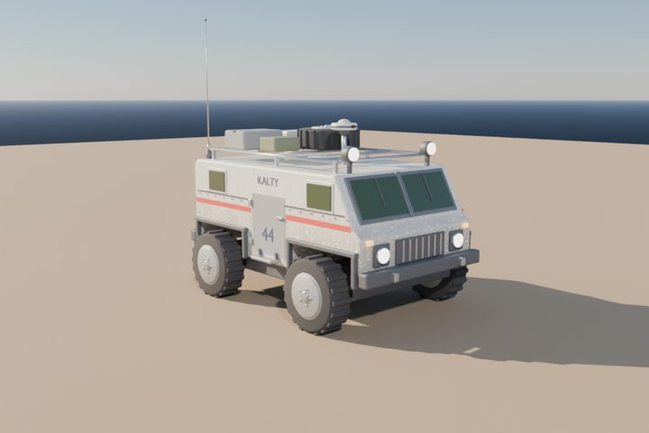

<title>Data Lab</title>
<meta name="claude:viewport-fit-sides" content="cover">
<link rel="preconnect" href="https://fonts.googleapis.com">
<link rel="preconnect" href="https://fonts.gstatic.com" crossorigin>
<link rel="stylesheet" href="https://fonts.googleapis.com/css2?family=Antonio:wght@500;700&family=Barlow:wght@400;500;600&family=Barlow+Condensed:wght@500;600&family=IBM+Plex+Mono:wght@400;500&display=swap">
<style>
/* Layout: a design-review page (dark-first, follows the viewer's theme) with one tab per screen; each screen frames a
   DATA LAB mockup drawn in the game's own HUD colours (PlanetHud.cs, TestPanel.cs, HelmScreen.cs), which stay dark. */
:root {
  /* page */
  --page: #070a12;
  --page-2: #0c1220;
  --ink: #e6ebf5;
  --dim: #9aa6c0;
  --rule: #27304a;
  --mark: #f5a624;
  --link: #8cc8ff;
  --good-p: #8fd4b0;
  --bad-p: #f08a80;
  /* HUD (fixed: the game is dark) */
  --hud-ground: #05080f;
  --hud-panel: #0b0f1a;
  --hud-field: #070a12;
  --hud-ink: #e6ebf5;
  --hud-soft: #b4bfd3;
  --hud-dim: #8a96ad;
  --hud-line: #2b3a5c;
  --hud-rule: #1e2a44;
  --hud-btn: #141c30;
  --hud-accent: #f5a624;
  --hud-good: #8fd4b0;
  --hud-warn: #ffb36b;
  --hud-bad: #e8645a;
  --hud-sky: #7fb0e8;
  --hud-peach: #f2a65a;
  --hud-lav: #a9a3e0;
  --hud-cyan: #5ff2e6;
  --hud-changed: #3a2a0c;
  --hud-changed-ink: #ffd18a;
  --hud-err: #3a1412;
  /* weather groups (climate.html's validated categorical palette) */
  --w-rain: #3987e5; --w-dust: #d95926; --w-fog: #199e70; --w-clear: #c98500;
  --w-wind: #d55181; --w-cloud: #008300; --w-snow: #9085e9; --w-storm: #e66767;
  --display: "Antonio", "Barlow Condensed", "Arial Narrow", sans-serif;
  --body: "Barlow", system-ui, -apple-system, "Segoe UI", sans-serif;
  --label: "Barlow Condensed", "Arial Narrow", system-ui, sans-serif;
  --mono: "IBM Plex Mono", ui-monospace, "Cascadia Mono", Consolas, monospace;
  color-scheme: dark;
}
@media (prefers-color-scheme: light) {
  :root:not([data-theme="dark"]) {
    --page: #eef1f6; --page-2: #e2e7f0; --ink: #141a2a; --dim: #4a5570; --rule: #c4ccdb; --mark: #9a5a00; --link: #1f5fae;
    --good-p: #1d7a4e; --bad-p: #b3352b;
    color-scheme: light;
  }
}
:root[data-theme="light"] {
  --page: #eef1f6; --page-2: #e2e7f0; --ink: #141a2a; --dim: #4a5570; --rule: #c4ccdb; --mark: #9a5a00; --link: #1f5fae;
  --good-p: #1d7a4e; --bad-p: #b3352b;
  color-scheme: light;
}
* { box-sizing: border-box; }
[hidden] { display: none !important; }
table { color: inherit; font-size: inherit; font-weight: inherit; line-height: inherit; }
body { background: var(--page); color: var(--ink); font: 400 16px/1.55 var(--body); }
a { color: var(--link); }
:focus-visible { outline: 2px solid var(--mark); outline-offset: 2px; }
.wrap { max-width: 1320px; margin: 0 auto; padding-left: max(16px, env(safe-area-inset-left, 0px)); padding-right: max(16px, env(safe-area-inset-right, 0px)); }
header.mast { padding-block: 36px 22px; }
.eyebrow { font: 600 13px/1.2 var(--label); letter-spacing: .14em; text-transform: uppercase; color: var(--mark); }
h1 { font: 700 clamp(44px, 8vw, 84px)/0.92 var(--display); letter-spacing: .01em; text-transform: uppercase; margin: 10px 0 14px; text-wrap: balance; }
h2 { font: 700 clamp(28px, 4vw, 40px)/1 var(--display); text-transform: uppercase; letter-spacing: .02em; margin: 0; text-wrap: balance; }
h3 { font: 600 21px/1.15 var(--label); letter-spacing: .04em; text-transform: uppercase; margin: 0; text-wrap: balance; }
p { margin: 0; }
.lede { max-width: 70ch; font-size: 18px; }
.muted { color: var(--dim); }
.meta { display: flex; flex-wrap: wrap; gap: 6px 18px; margin-top: 16px; font: 500 14px var(--label); letter-spacing: .06em; color: var(--dim); text-transform: uppercase; }
.quote { border-left: 3px solid var(--mark); padding: 4px 0 4px 14px; max-width: 72ch; font-size: 17px; }
.quote b { font: 600 12px var(--label); letter-spacing: .12em; text-transform: uppercase; color: var(--mark); display: block; }

/* tabs */
body::before { content: ""; position: fixed; inset: 0 0 auto; height: env(safe-area-inset-top, 0px); z-index: 10; background: var(--page); }
nav.tabs { position: sticky; top: env(safe-area-inset-top, 0px); z-index: 5; background: var(--page); border-bottom: 1px solid var(--rule); }
nav.tabs .wrap { display: flex; gap: 4px; overflow-x: auto; padding-block: 8px; scrollbar-width: thin; }
nav.tabs a { flex: none; text-decoration: none; color: var(--dim); font: 600 14px/1 var(--label); letter-spacing: .08em; text-transform: uppercase; padding: 9px 12px; border-radius: 6px; border: 1px solid transparent; }
nav.tabs a:hover { color: var(--ink); border-color: var(--rule); }
nav.tabs a[aria-current="page"] { color: var(--page); background: var(--mark); }
main { padding-block: 28px 72px; }
section.view { display: flex; flex-direction: column; gap: 22px; }
.head { display: flex; flex-direction: column; gap: 8px; max-width: 80ch; }
.cols { display: grid; grid-template-columns: repeat(auto-fit, minmax(280px, 1fr)); gap: 16px 28px; }
.cols > * { min-width: 0; }
.notes { display: grid; grid-template-columns: repeat(auto-fit, minmax(250px, 1fr)); gap: 10px 28px; font-size: 15px; }
.notes > * { min-width: 0; }
.notes b, .lbl { font: 600 13px var(--label); letter-spacing: .1em; text-transform: uppercase; color: var(--mark); }
ul.plain { margin: 0; padding-left: 18px; display: flex; flex-direction: column; gap: 4px; }
.tag { display: inline-block; padding: 1px 7px; border-radius: 4px; font: 600 11px/1.6 var(--label); letter-spacing: .1em; text-transform: uppercase; vertical-align: 1px; }
.tag.sim { background: #123522; color: #9ff0c4; }
.tag.pages { background: #2a2350; color: #c9c2ff; }
.tag.rec { background: var(--mark); color: #160d00; }
.scroll { overflow-x: auto; max-width: 100%; }
table.doc { border-collapse: collapse; font-size: 14px; width: 100%; font-variant-numeric: tabular-nums; }
table.doc th, table.doc td { text-align: left; vertical-align: top; padding: 7px 10px; border-bottom: 1px solid var(--rule); }
table.doc th { font: 600 12px var(--label); letter-spacing: .1em; text-transform: uppercase; color: var(--dim); white-space: nowrap; }
table.doc td.n { text-align: right; white-space: nowrap; }
table.doc code, .path { font: 400 12.5px/1.4 var(--mono); }
.yes { color: var(--good-p); font-weight: 600; }
.no { color: var(--bad-p); font-weight: 600; }
.card { border: 1px solid var(--rule); border-radius: 10px; padding: 18px; display: flex; flex-direction: column; gap: 10px; background: var(--page-2); min-width: 0; }
.card.rec { border-color: var(--mark); }
.card h3 small { font: 500 13px var(--label); color: var(--dim); letter-spacing: .06em; display: block; margin-top: 4px; }
.pc { display: grid; grid-template-columns: 1fr 1fr; gap: 6px 18px; font-size: 14.5px; }
.pc > div { min-width: 0; }
.pc .lbl { display: block; margin-bottom: 2px; }
.screens { display: grid; grid-template-columns: repeat(auto-fit, minmax(260px, 1fr)); gap: 12px; }
.screens a { text-decoration: none; color: inherit; border: 1px solid var(--rule); border-radius: 8px; padding: 14px; display: flex; flex-direction: column; gap: 4px; background: var(--page-2); }
.screens a:hover { border-color: var(--mark); }
.screens b { font: 700 20px/1 var(--display); text-transform: uppercase; letter-spacing: .02em; }
.screens span { font-size: 14px; color: var(--dim); }
.screens .key { color: var(--mark); }

/* ------------------------------------------------------------------ the DATA LAB frame (HUD colours) */
.labwrap { overflow-x: auto; max-width: 100%; }
.lab { background: var(--hud-ground); color: var(--hud-ink); border: 1px solid var(--hud-line); border-radius: 12px; font: 400 13px/1.4 var(--body); overflow: hidden; display: flex; flex-direction: column; }
.lab-top { display: grid; grid-template-columns: auto 1fr auto; align-items: stretch; gap: 0; min-height: 44px; }
.elbow { background: var(--hud-sky); width: 120px; border-radius: 0 0 22px 0; display: flex; align-items: center; padding: 0 14px; font: 700 20px/1 var(--display); letter-spacing: .04em; color: #05080f; }
.lab-bars { display: flex; align-items: flex-start; gap: 5px; padding-left: 6px; }
.lab-bars span { height: 12px; display: block; }
.lab-bars .b1 { flex: 5; background: var(--hud-sky); }
.lab-bars .b2 { flex: 1.2; background: var(--hud-peach); }
.lab-bars .b3 { flex: 2; background: var(--hud-lav); border-radius: 0 6px 6px 0; }
.lab-status { display: flex; flex-wrap: wrap; align-items: center; gap: 6px; padding: 8px 12px 6px; }
.chip { display: inline-flex; align-items: center; gap: 5px; padding: 3px 8px; border-radius: 5px; background: var(--hud-btn); border: 1px solid var(--hud-line); font: 600 12px/1.2 var(--label); letter-spacing: .06em; text-transform: uppercase; color: var(--hud-soft); white-space: nowrap; }
.chip.warn { color: var(--hud-warn); border-color: #5a4320; }
.chip.bad { color: #ffb0a8; border-color: #5a1c17; background: var(--hud-err); }
.chip.good { color: var(--hud-good); border-color: #1f4a37; }
.chip.acc { color: #160d00; background: var(--hud-accent); border-color: var(--hud-accent); }
button.hb { font: 600 12px/1 var(--label); letter-spacing: .08em; text-transform: uppercase; color: var(--hud-ink); background: var(--hud-btn); border: 1px solid var(--hud-line); border-radius: 5px; padding: 7px 10px; cursor: pointer; white-space: nowrap; }
button.hb:hover { border-color: #4d6699; }
button.hb.acc { background: var(--hud-accent); color: #160d00; border-color: var(--hud-accent); }
button.hb.on { border-color: var(--hud-accent); color: var(--hud-accent); }
button.hb:disabled { opacity: .45; cursor: default; }
.lab-nav { display: flex; gap: 4px; padding: 6px 12px 0 132px; border-bottom: 1px solid var(--hud-rule); overflow-x: auto; }
.lab-nav span { font: 600 13px/1 var(--label); letter-spacing: .1em; text-transform: uppercase; color: var(--hud-dim); padding: 8px 10px 9px; border-bottom: 2px solid transparent; white-space: nowrap; }
.lab-nav span.on { color: var(--hud-accent); border-bottom-color: var(--hud-accent); }
.lab-body { padding: 12px; display: grid; gap: 12px; }
.pane { background: var(--hud-panel); border: 1px solid var(--hud-rule); border-radius: 8px; padding: 10px; min-width: 0; overflow-x: auto; display: flex; flex-direction: column; gap: 8px; }
.pane h4 { margin: 0; font: 600 12px/1.2 var(--label); letter-spacing: .14em; text-transform: uppercase; color: var(--hud-dim); display: flex; justify-content: space-between; gap: 8px; align-items: baseline; flex-wrap: wrap; }
.pane h4 em { font-style: normal; color: var(--hud-accent); }
.hd { color: var(--hud-dim); }
.hs { color: var(--hud-soft); }
.hmono { font: 400 12px/1.45 var(--mono); }
.field { background: var(--hud-field); border: 1px solid var(--hud-line); border-radius: 5px; color: var(--hud-ink); font: 500 13px var(--body); padding: 6px 8px; min-width: 0; }
input.field[type="number"] { width: 86px; font-variant-numeric: tabular-nums; }
select.field { padding-right: 4px; }
.row { display: flex; flex-wrap: wrap; gap: 6px; align-items: center; }
.kv { display: grid; grid-template-columns: auto 1fr; gap: 3px 12px; font-size: 13px; }
.kv > :nth-child(odd) { color: var(--hud-dim); font: 600 12px/1.5 var(--label); letter-spacing: .08em; text-transform: uppercase; }
.kv > :nth-child(even) { min-width: 0; overflow-wrap: anywhere; }

/* browser */
.browser { display: grid; grid-template-columns: 210px minmax(0, 1fr) 290px; gap: 12px; }
.tree { font-size: 13px; display: flex; flex-direction: column; gap: 1px; }
.tree .f { display: flex; justify-content: space-between; gap: 6px; padding: 4px 6px; color: var(--hud-soft); font: 600 13px var(--label); letter-spacing: .04em; border-radius: 4px; }
.tree .f.page { color: var(--hud-dim); }
.tree .t { display: flex; justify-content: space-between; gap: 6px; padding: 3px 6px 3px 18px; color: var(--hud-dim); border-radius: 4px; cursor: pointer; background: none; border: 0; font: inherit; text-align: left; }
.tree .t:hover { color: var(--hud-ink); background: var(--hud-btn); }
.tree .t.on { color: var(--hud-ink); background: #1c2742; box-shadow: inset 2px 0 0 var(--hud-accent); }
.tree .t i, .tree .f i { font-style: normal; color: var(--hud-dim); font-variant-numeric: tabular-nums; }
.tree .t.dirty span::after { content: "●"; color: var(--hud-accent); margin-left: 4px; font-size: 9px; }
.gridwrap { overflow: auto; max-height: 560px; border: 1px solid var(--hud-rule); border-radius: 6px; }
table.grid { border-collapse: separate; border-spacing: 0; font-size: 12.5px; font-variant-numeric: tabular-nums; min-width: 100%; }
table.grid th, table.grid td { padding: 5px 8px; border-bottom: 1px solid var(--hud-rule); border-right: 1px solid #141d31; white-space: nowrap; text-align: left; vertical-align: middle; }
table.grid thead th { position: sticky; z-index: 2; background: #0e1424; font: 600 11.5px/1.2 var(--label); letter-spacing: .08em; text-transform: uppercase; color: var(--hud-dim); }
table.grid thead tr.g th { top: 0; color: var(--hud-sky); border-bottom: 1px solid var(--hud-line); }
table.grid thead tr.c th { top: 25px; }
table.grid td:first-child, table.grid th:first-child { position: sticky; left: 0; z-index: 1; background: var(--hud-panel); }
table.grid thead th:first-child { z-index: 3; background: #0e1424; }
table.grid td { cursor: pointer; }
table.grid td:hover { background: #111a2e; }
table.grid td.sel { outline: 2px solid var(--hud-accent); outline-offset: -2px; }
table.grid td.chg { background: var(--hud-changed); color: var(--hud-changed-ink); }
table.grid td.err { background: var(--hud-err); }
table.grid td.num { text-align: right; }
table.grid td s { color: var(--hud-dim); margin-right: 4px; }
table.grid tr.sub td { background: #080c16; color: var(--hud-soft); }
table.grid tr.sub td:first-child { padding-left: 22px; color: var(--hud-dim); background: #080c16; }
table.grid .u { color: var(--hud-dim); font-size: 11px; margin-left: 2px; }
table.grid .key { font: 500 12px var(--mono); color: var(--hud-ink); }
.exp { display: inline-block; width: 14px; color: var(--hud-dim); }
.rc { display: inline-flex; gap: 3px; flex-wrap: nowrap; }
.rc span, .pill { display: inline-block; padding: 0 6px; border-radius: 9px; background: #17213a; border: 1px solid #24314f; font-size: 11.5px; line-height: 17px; color: var(--hud-soft); }
.rc span.bad { border-color: var(--hud-bad); color: #ffb0a8; }
.rc span.new { border-color: var(--hud-accent); color: var(--hud-changed-ink); }
.sw { display: inline-block; width: 12px; height: 12px; border-radius: 3px; vertical-align: -2px; margin-right: 5px; border: 1px solid #0006; }
.tg { display: inline-block; width: 24px; height: 13px; border-radius: 7px; background: #26314a; position: relative; vertical-align: -2px; }
.tg::after { content: ""; position: absolute; top: 2px; left: 2px; width: 9px; height: 9px; border-radius: 50%; background: var(--hud-dim); }
.tg.on { background: #1f5a44; }
.tg.on::after { left: 13px; background: var(--hud-good); }
.dd::after { content: " ▾"; color: var(--hud-dim); font-size: 10px; }
.toolbar { display: flex; flex-wrap: wrap; gap: 6px; align-items: center; }
.toolbar .sp { flex: 1; }
.problems { display: flex; flex-direction: column; gap: 4px; }
.prob { display: grid; grid-template-columns: 18px minmax(0, 1fr) auto; gap: 8px; align-items: start; padding: 6px 8px; border-radius: 6px; background: var(--hud-field); border: 1px solid var(--hud-rule); cursor: pointer; text-align: left; color: inherit; font: inherit; width: 100%; }
.prob:hover { border-color: var(--hud-line); }
.prob .sev { font: 700 13px/1.3 var(--label); }
.prob.err .sev { color: var(--hud-bad); }
.prob.warn .sev { color: var(--hud-warn); }
.prob.ok .sev { color: var(--hud-good); }
.prob small { display: block; color: var(--hud-dim); font: 600 11px var(--label); letter-spacing: .08em; text-transform: uppercase; }
.prob .go { color: var(--hud-sky); font: 600 11px var(--label); letter-spacing: .08em; text-transform: uppercase; white-space: nowrap; }
.note { background: #0a1222; border: 1px solid #1d2b49; border-radius: 6px; padding: 8px 10px; color: var(--hud-soft); font-size: 12.5px; }
.note b { color: var(--hud-sky); font: 600 11px var(--label); letter-spacing: .1em; text-transform: uppercase; display: block; margin-bottom: 2px; }
.flag { display: inline-block; padding: 1px 7px; border-radius: 4px; font: 600 11px/1.6 var(--label); letter-spacing: .08em; text-transform: uppercase; white-space: nowrap; }
.flag.live { background: #12352a; color: #9ff0c4; }
.flag.newgame { background: #3a2a0c; color: #ffd18a; }
.flag.restart { background: #3a1412; color: #ffb0a8; }
.flag.view { background: #1c2742; color: #a9c8ff; }
.hist { display: flex; flex-direction: column; gap: 3px; font-size: 12.5px; }
.hist div { display: grid; grid-template-columns: 22px minmax(0, 1fr) auto; gap: 6px; padding: 4px 6px; border-radius: 4px; }
.hist div.cur { background: #1c2742; }
.hist div.undone { opacity: .5; }
.hist i { font-style: normal; color: var(--hud-dim); font-variant-numeric: tabular-nums; }
pre.diff { margin: 0; font: 400 11.5px/1.55 var(--mono); background: var(--hud-field); border: 1px solid var(--hud-rule); border-radius: 6px; padding: 8px 0; overflow-x: auto; color: var(--hud-soft); }
pre.diff span { display: block; padding: 0 10px; white-space: pre; }
pre.diff .h { color: var(--hud-sky); }
pre.diff .m { background: #2a1210; color: #ffc0b8; }
pre.diff .p { background: #0f2a1e; color: #b8f5d6; }
pre.diff mark { background: #6b4a10; color: #fff3d6; border-radius: 2px; }
pre.diff .p mark { background: #1f6a48; }

/* previews */
.two { display: grid; grid-template-columns: repeat(2, minmax(0, 1fr)); gap: 12px; }
.three { display: grid; grid-template-columns: repeat(3, minmax(0, 1fr)); gap: 12px; }
.ctrl { display: grid; grid-template-columns: 260px minmax(0, 1fr); gap: 12px; }
.ctrl label { display: flex; flex-direction: column; gap: 3px; font: 600 11.5px var(--label); letter-spacing: .1em; text-transform: uppercase; color: var(--hud-dim); }
.ctrl label output { color: var(--hud-ink); font: 500 13px var(--body); letter-spacing: 0; text-transform: none; }
input[type="range"] { width: 100%; accent-color: var(--hud-accent); }
.ba { display: grid; grid-template-columns: repeat(2, minmax(0, 1fr)); gap: 8px; }
.ba > div { display: flex; flex-direction: column; gap: 4px; align-items: center; min-width: 0; }
.ba canvas { width: 100%; max-width: 260px; height: auto; aspect-ratio: 1; display: block; }
.ba .cap { font: 600 11.5px var(--label); letter-spacing: .12em; text-transform: uppercase; color: var(--hud-dim); }
.ba .cap.after { color: var(--hud-accent); }
canvas.map { width: 100%; height: auto; aspect-ratio: 514 / 352; display: block; border-radius: 4px; }
svg.chart { width: 100%; height: auto; display: block; }
svg.chart text { font: 500 11px var(--body); fill: var(--hud-dim); }
svg.chart .ax { stroke: var(--hud-rule); }
svg.chart .grid { stroke: #141d31; }
.legend { display: flex; flex-wrap: wrap; gap: 4px 12px; font-size: 12px; color: var(--hud-soft); }
.legend i { display: inline-block; width: 10px; height: 10px; border-radius: 2px; margin-right: 5px; vertical-align: -1px; }
.legend .ln { width: 18px; height: 0; border-top: 2px solid var(--hud-dim); border-radius: 0; vertical-align: 3px; }
.legend .ln.after { border-top-color: var(--hud-accent); }
.legend .ln.before { border-top-style: dashed; }
.bars { display: flex; flex-direction: column; gap: 6px; }
.bar { display: grid; grid-template-columns: 96px minmax(0, 1fr); gap: 8px; align-items: center; font-size: 12px; }
.bar .lb { color: var(--hud-soft); text-align: right; }
.bar .lb small { display: block; color: var(--hud-dim); font: 600 10.5px var(--label); letter-spacing: .1em; text-transform: uppercase; }
.stack { display: flex; height: 14px; border-radius: 3px; overflow: hidden; background: #111827; }
.stack span { display: block; height: 100%; }
.stack + .stack { margin-top: 2px; }
.stack.after { outline: 1px solid var(--hud-accent); outline-offset: 1px; }
.tl { display: flex; height: 18px; border-radius: 3px; overflow: hidden; }
.tl span { display: block; height: 100%; }
.tiles { display: grid; grid-template-columns: repeat(auto-fit, minmax(132px, 1fr)); gap: 8px; }
#cl-eff { grid-template-columns: repeat(4, minmax(0, 1fr)); }
.tile { background: var(--hud-field); border: 1px solid var(--hud-rule); border-radius: 6px; padding: 8px 10px; display: flex; flex-direction: column; gap: 2px; min-width: 0; }
.tile .k { font: 600 11px var(--label); letter-spacing: .1em; text-transform: uppercase; color: var(--hud-dim); }
.tile .v { font: 700 22px/1.1 var(--display); letter-spacing: .02em; font-variant-numeric: tabular-nums; }
.tile .d { font-size: 12px; color: var(--hud-dim); font-variant-numeric: tabular-nums; }
.up { color: var(--hud-good); }
.down { color: var(--hud-bad); }
.same { color: var(--hud-dim); }
table.mini { border-collapse: collapse; font-size: 12.5px; width: 100%; font-variant-numeric: tabular-nums; }
table.mini th, table.mini td { padding: 4px 8px; border-bottom: 1px solid var(--hud-rule); text-align: right; white-space: nowrap; }
table.mini th { font: 600 11px var(--label); letter-spacing: .08em; text-transform: uppercase; color: var(--hud-dim); }
table.mini th:first-child, table.mini td:first-child { text-align: left; }
table.mini td.chg { color: var(--hud-changed-ink); }
.check { display: grid; grid-template-columns: 18px minmax(0, 1fr); gap: 0 8px; align-items: baseline; font-size: 12.5px; padding: 3px 0; border-bottom: 1px solid var(--hud-rule); }
.check b { font: 700 13px var(--label); }
.check .ok { color: var(--hud-good); }
.check .bad { color: var(--hud-bad); }
.viewer { position: relative; border-radius: 8px; overflow: hidden; background: #0b1226; }
.viewer img { display: block; width: 100%; height: auto; aspect-ratio: 4 / 3; object-fit: cover; }
.viewer .ov { position: absolute; left: 8px; top: 8px; right: 8px; display: flex; flex-wrap: wrap; gap: 6px; justify-content: space-between; }
.viewer .ov2 { position: absolute; left: 8px; bottom: 8px; display: flex; flex-wrap: wrap; gap: 6px; }
.seg { display: inline-flex; border: 1px solid var(--hud-line); border-radius: 5px; overflow: hidden; flex-wrap: wrap; }
.seg button { border: 0; border-right: 1px solid var(--hud-line); background: var(--hud-btn); color: var(--hud-soft); font: 600 11.5px/1 var(--label); letter-spacing: .08em; text-transform: uppercase; padding: 7px 9px; cursor: pointer; }
.seg button:last-child { border-right: 0; }
.seg button.on { background: #2a2010; color: var(--hud-accent); }
.dialog { border: 1px solid var(--hud-accent); border-radius: 10px; background: #070b15; box-shadow: 0 12px 40px #000a; padding: 14px; display: flex; flex-direction: column; gap: 10px; }
.dialog h5 { margin: 0; font: 700 22px/1 var(--display); letter-spacing: .03em; text-transform: uppercase; color: var(--hud-accent); }
.chg-list { display: flex; flex-direction: column; gap: 4px; }
.chg-list div { display: grid; grid-template-columns: 18px minmax(0, 1fr) auto auto; gap: 8px; align-items: baseline; font-size: 12.5px; padding: 5px 6px; border-radius: 5px; background: var(--hud-field); }
.chg-list div.blocked { background: var(--hud-err); }
.chg-list .ov { font-variant-numeric: tabular-nums; white-space: nowrap; }
.chg-list .ov s { color: var(--hud-dim); }
.phase { display: grid; grid-template-columns: 70px minmax(0, 1fr); gap: 14px; border-top: 1px solid var(--rule); padding-top: 16px; }
.phase .pn { font: 700 44px/0.9 var(--display); color: var(--mark); }
.phase .pb { display: flex; flex-direction: column; gap: 6px; min-width: 0; }
.phase .size { font: 600 13px var(--label); letter-spacing: .08em; text-transform: uppercase; color: var(--dim); }
ol.qs { margin: 0; padding-left: 22px; display: flex; flex-direction: column; gap: 10px; max-width: 86ch; }
ol.qs li b { font-weight: 600; }
svg.arch { width: 100%; height: auto; display: block; }
svg.arch text { font: 500 13px var(--body); fill: var(--ink); }
svg.arch .sm { font-size: 11.5px; fill: var(--dim); }
svg.arch .bx { fill: var(--page-2); stroke: var(--rule); }
svg.arch .bx.acc { stroke: var(--mark); }
svg.arch .ar { stroke: var(--dim); fill: none; stroke-width: 1.5; }
svg.arch .ar.acc { stroke: var(--mark); }
svg.arch .hd2 { font: 700 15px var(--label); letter-spacing: .06em; text-transform: uppercase; }

@media (max-width: 1100px) {
  .browser { grid-template-columns: 190px minmax(0, 1fr); }
  .browser .insp { grid-column: 1 / -1; }
}
@media (max-width: 860px) {
  #cl-eff { grid-template-columns: repeat(2, minmax(0, 1fr)); }
  .browser .tree { max-height: 240px; overflow-y: auto; }
  .elbow { min-height: 40px; }
  .browser, .ctrl, .two, .three { grid-template-columns: minmax(0, 1fr); }
  .lab-nav { padding-left: 12px; }
  .elbow { width: 96px; font-size: 17px; }
  .pc { grid-template-columns: 1fr; }
  .phase { grid-template-columns: 1fr; gap: 4px; }
}
@media (max-width: 520px) {
  .lab-top { grid-template-columns: auto 1fr; }
  .lab-top .lab-status { grid-column: 1 / -1; padding-top: 8px; }
  .ba { grid-template-columns: 1fr 1fr; }
  .bar { grid-template-columns: 70px minmax(0, 1fr); }
  .lab-body { padding: 8px; }
  .gridwrap { max-height: 460px; }
}
@media (prefers-reduced-motion: reduce) { * { scroll-behavior: auto !important; transition: none !important; } }
</style>

<header class="mast wrap">
  <div class="eyebrow">Mockups · data tools · snapshot of <span id="commit">main</span></div>
  <h1>Data Lab</h1>
  <p class="lede">A Godot screen for editing the game's data tables and seeing, before you save, what an edit does to a world: its climate and weather, the generated map, the economy of the first twenty minutes, and the buildings and rovers themselves.</p>
  <p class="quote" style="margin-top:16px"><b>Owner, 2026-11-06</b>“We need a UI to modify the data tables. Looking at using Godot to do that as well, as I would want to see what the changes could possibly do to the envs. For now, just a bunch of mockups on what we would need to do this.”</p>
  <div class="meta" id="meta"></div>
</header>

<nav class="tabs" aria-label="Screens"><div class="wrap" id="tabs">
  <a href="#overview">Overview</a>
  <a href="#where">Where it lives</a>
  <a href="#browser">Table browser</a>
  <a href="#checks">Checks &amp; saving</a>
  <a href="#climate">Climate preview</a>
  <a href="#planet">Planet preview</a>
  <a href="#economy">Economy preview</a>
  <a href="#models">Models &amp; units</a>
  <a href="#compare">A/B compare</a>
  <a href="#roadmap">Roadmap</a>
</div></nav>

<main class="wrap">

<!-- ================================================================== OVERVIEW -->
<section class="view" id="v-overview">
  <div class="cols">
    <div class="card rec">
      <span class="tag rec" style="align-self:flex-start">Recommendation</span>
      <h3>A DATA LAB scene inside the game project</h3>
      <p>Debug builds only, opened from the main menu or with F10 from a running game. It loads the same <code>GameData</code> the game does, runs the sim headless for previews, and draws previews with the game's own views (minimap, orbit globe, building models). Opened from a game, it can apply edits to that game like the Test panel does.</p>
      <p><a href="#where">Compare the three places it could live →</a></p>
    </div>
    <div class="card">
      <span class="lbl">Phase 1 scope</span>
      <ul class="plain">
        <li>Table browser for the 9 files the game reads, with typed cells for numbers, text, on/off values and ids</li>
        <li>Field help from each file's <code>_notes</code>, units and ranges</li>
        <li>Diff against the saved file, undo and redo, live <code>GameData.Validate()</code> problems with jump-to-cell</li>
        <li>Save that keeps the hand formatting, with backups and a changed-on-disk check</li>
        <li>The climate preview, the cheapest preview and the closest to "see what it does to the envs"</li>
      </ul>
      <p><a href="#roadmap">Phases, sizes and questions →</a></p>
    </div>
  </div>

  <div class="head"><h2>The screens</h2><p class="muted">Every mockup uses values from the data files as they are now. The previews compute with simplified stand-ins in the browser; the real lab calls the sim.</p></div>
  <div class="screens">
    <a href="#where"><b>Where it lives</b><span>In-game lab, editor dock or a separate app: pros, cons, the pick.</span></a>
    <a href="#browser"><b>Table browser</b><span>File tree, spreadsheet grid per table, typed cells, diff colours, add and delete with reference checks.</span></a>
    <a href="#checks"><b>Checks &amp; saving</b><span>Validate() problems, page checks, what applies live, the save summary with a text diff, history.</span></a>
    <a href="#climate"><b>Climate preview</b><span class="key">The key ask.</span><span>Pick a body, scrub the day and year, compare temperatures, weather odds and effects before and after.</span></a>
    <a href="#planet"><b>Planet preview</b><span>Change the map thresholds and regenerate with the same seed: minimap, shares, deposits, landing sites, checks.</span></a>
    <a href="#economy"><b>Economy preview</b><span>A headless run of a set build order: stock curves, storage, power, milestones.</span></a>
    <a href="#models"><b>Models &amp; units</b><span>Live model with its stats and levels, rover damage per terrain and weather, build times.</span></a>
    <a href="#compare"><b>A/B compare</b><span>Two data versions side by side: what changed and what it does to the key numbers.</span></a>
  </div>

  <div class="head"><h2>What's in the data</h2><p class="muted">Thirteen JSON files. Nine are loaded by the game (<code>GameData.FileNames</code>); four only feed the design pages (<code>tools/gen_*_page.py</code>).</p></div>
  <div class="scroll"><table class="doc" id="inventory"></table></div>

  <div class="head"><h2>What the Test panel's DATA tab does today</h2><p class="muted"><code>scripts/TestPanel.cs</code> (F9 → DATA) and <code>sim/Data/DataTuning.cs</code>.</p></div>
  <div class="cols">
    <div class="card"><span class="lbl">It can</span>
      <ul class="plain" id="can"></ul></div>
    <div class="card"><span class="lbl">It can't</span>
      <ul class="plain" id="cant"></ul></div>
  </div>
</section>

<!-- ================================================================== WHERE -->
<section class="view" id="v-where" hidden>
  <div class="head"><h2>Where it lives</h2><p class="muted">The owner runs Godot 4.7 .NET on Windows and tests with F5. The sim (<code>game/sim</code>) is plain C# with no Godot types, so any of these can load the data and run it.</p></div>
  <div class="cols">
    <div class="card rec">
      <span class="tag rec" style="align-self:flex-start">Recommended</span>
      <h3>A · DATA LAB scene in the game<small>scenes/DataLab.tscn · debug builds · main menu or F10</small></h3>
      <div class="pc">
        <div><span class="lbl">Good</span><ul class="plain">
          <li>Previews use the real runtime code: minimap, orbit globe, sky shaders, building models, the sim</li>
          <li>From a running game it can apply edits live (<code>DebugDataCommand</code>, as the Test panel does)</li>
          <li>Same loop as now: F5 on Windows, nothing new to install</li>
          <li>The sim steps headless on a background task while the UI stays smooth</li>
        </ul></div>
        <div><span class="lbl">Costs</span><ul class="plain">
          <li>UI built in code like the Test panel (no free inspector widgets)</li>
          <li>Must stay out of release exports (<code>OS.IsDebugBuild()</code>)</li>
          <li>In an exported debug build the data folder sits next to the .exe, so the data path needs a setting</li>
        </ul></div>
      </div>
    </div>
    <div class="card">
      <h3>B · Godot editor plugin<small>EditorPlugin dock · [Tool] C# scripts</small></h3>
      <div class="pc">
        <div><span class="lbl">Good</span><ul class="plain">
          <li>Lives where you already work, docked beside the scene tree</li>
          <li>Editor undo/redo and file system refresh come with it</li>
          <li>No need to run the game to edit a number</li>
        </ul></div>
        <div><span class="lbl">Costs</span><ul class="plain">
          <li>C# tool scripts reload with every build; plugins lose state and sometimes need an editor restart</li>
          <li>The game runs as a separate process, so no live apply</li>
          <li>Runtime previews (fog, sky, sim stepping) inside the editor are heavy; a crash in preview code takes the editor down</li>
        </ul></div>
      </div>
    </div>
    <div class="card">
      <h3>C · Separate tool app<small>second Godot project referencing FinalFrontier.Sim</small></h3>
      <div class="pc">
        <div><span class="lbl">Good</span><ul class="plain">
          <li>Clean split: it can't break the game project</li>
          <li>Can ship as its own Windows .exe</li>
          <li>The sim is already a separate .csproj to reference</li>
        </ul></div>
        <div><span class="lbl">Costs</span><ul class="plain">
          <li>The views, shaders and models live in <code>game/</code>; previews need them moved to a shared library and shared assets</li>
          <li>Two projects to keep in step</li>
          <li>No live apply to a running game</li>
        </ul></div>
      </div>
    </div>
  </div>
  <div class="card">
    <h3>How option A fits together</h3>
    <div class="scroll"><svg class="arch" viewBox="0 0 1000 322" role="img" aria-label="Data flow: data files load into GameData, which feeds the game, the Data Lab and a headless preview runner; the lab saves back to the files and can apply edits to a running game.">
      <rect class="bx" x="10" y="110" width="170" height="80" rx="8"/>
      <text class="hd2" x="26" y="140">data/*.json</text>
      <text class="sm" x="26" y="162">13 files, hand-formatted</text>
      <text class="sm" x="26" y="178">9 read by the game</text>
      <rect class="bx" x="240" y="110" width="200" height="80" rx="8"/>
      <text class="hd2" x="256" y="140">GameData (sim DLL)</text>
      <text class="sm" x="256" y="162">Load(files) · Validate()</text>
      <text class="sm" x="256" y="178">DataTuning token writer</text>
      <rect class="bx" x="510" y="20" width="220" height="70" rx="8"/>
      <text class="hd2" x="526" y="48">The game</text>
      <text class="sm" x="526" y="70">Planet.tscn · PlanetDriver</text>
      <rect class="bx acc" x="510" y="115" width="220" height="70" rx="8"/>
      <text class="hd2" x="526" y="143">Data Lab</text>
      <text class="sm" x="526" y="165">DataLab.tscn · tables · checks</text>
      <rect class="bx" x="510" y="210" width="220" height="70" rx="8"/>
      <text class="hd2" x="526" y="238">Preview runner</text>
      <text class="sm" x="526" y="260">Simulation.Step × N on a Task</text>
      <rect class="bx" x="790" y="115" width="200" height="70" rx="8"/>
      <text class="hd2" x="806" y="143">Preview views</text>
      <text class="sm" x="806" y="165">Minimap · OrbitView · models</text>
      <path class="ar" d="M180 150 H240"/><path class="ar" d="M232 145 L240 150 L232 155"/>
      <path class="ar" d="M440 140 C 475 140, 475 55, 510 55"/><path class="ar" d="M502 51 L510 55 L502 60"/>
      <path class="ar" d="M440 150 H510"/><path class="ar" d="M502 145 L510 150 L502 155"/>
      <path class="ar" d="M440 160 C 475 160, 475 245, 510 245"/><path class="ar" d="M502 240 L510 245 L502 250"/>
      <path class="ar" d="M730 150 H790"/><path class="ar" d="M782 145 L790 150 L782 155"/>
      <path class="ar" d="M730 245 C 770 245, 770 185, 820 185"/>
      <path class="ar acc" d="M620 115 V90"/><path class="ar acc" d="M615 98 L620 90 L625 98"/>
      <text class="sm" x="628" y="106">Apply (F10 from a game)</text>
      <path class="ar acc" d="M510 172 C 478 172, 482 296, 440 296 H 140 C 104 296, 95 262, 95 190"/><path class="ar acc" d="M90 198 L95 190 L100 198"/>
      <text class="sm" x="150" y="316">Save: token replacement, a structured writer for new records, backup first</text>
    </svg></div>
    <p class="muted">Later, a tiny editor plugin can add an "Open Data Lab" button to the Godot toolbar that just plays the lab scene (<code>EditorInterface.PlayCustomScene</code>). That gives the editor shortcut without running previews inside the editor.</p>
  </div>
</section>

<!-- ================================================================== BROWSER -->
<section class="view" id="v-browser" hidden>
  <div class="head"><h2>Table browser</h2><p class="muted">Pick a table on the left; click any cell to see its type, range, help and where it applies. Amber cells are edits not yet saved (old value struck through); red is a problem. Draft edits in this mockup: refinery cycles 20 → 16, storage container 2000 → 1500, Summer storm weight 10 → 14, Tarsis tilt 23.5° → 28°, and an energy output added to the Prefab Habitat (which the checks refuse).</p></div>
  <div class="labwrap"><div class="lab" id="lab-browser"></div></div>
  <div class="notes">
    <div><b>Typed cells</b><p>Numbers show their unit and keep whole numbers whole (DataTuning's <code>IsInteger</code>). Ids that point at other tables (requires_tech, upgrades_to, a weather kind) are dropdowns filled from GameData. Costs, outputs and weights are chips; ranges are two numbers; colours open a picker.</p></div>
    <div><b>Sub-rows</b><p>Nested lists open under their record: building levels (Mk II, Mk III with costs and modifiers), a rover's per-terrain damage, a climate's seasons. Each sub-row has the same typed cells.</p></div>
    <div><b>Records</b><p>Add, duplicate and delete work on whole records. Delete lists every reference first (for example the Alloy Foundry is named in <code>build_menu</code> and in the Alloy Metallurgy tech) and offers to remove or retarget them.</p></div>
    <div><b>Search</b><p>The filter matches ids, names and values; column groups fold away; "changed only" shows just the draft edits across every table.</p></div>
  </div>
</section>

<!-- ================================================================== CHECKS -->
<section class="view" id="v-checks" hidden>
  <div class="head"><h2>Checks &amp; saving</h2><p class="muted">Problems come from three places: the game's own <code>GameData.Validate()</code>, the design pages' data-checks lists, and test-style checks the lab can run itself (playable planets, the point-symmetric duel map). Click one to jump to the cell.</p></div>
  <div class="labwrap"><div class="lab" id="lab-checks"></div></div>
  <div class="notes">
    <div><b>Formatting survives</b><p>Changing a value replaces only its token in the file text, the way <code>DataTuning.SetNumber</code> does today, extended to text and on/off values. The diff stays one line per edit.</p></div>
    <div><b>New records need a writer</b><p>Adding a record, a list item or a key can't be a token swap. A structured writer has to insert text in the layout of its neighbours (one per line in tech_tree/ships/vehicles/hazards, aligned columns in surfaces/climate, expanded in faction_lines and galaxy_map), then re-parse and compare to be sure it wrote what was meant.</p></div>
    <div><b>Safety</b><p>Every save first copies the file to a backup folder (kept out of git). If the file changed on disk since it was loaded (a <code>git pull</code>), the lab stops and offers reload or merge.</p></div>
    <div><b>Live or new game</b><p>Each field carries a flag: applies live, needs a new game (map generation, landing, orbit set-up), needs a restart (changed id lists), or view only (colours).</p></div>
  </div>
</section>

<!-- ================================================================== CLIMATE -->
<section class="view" id="v-climate" hidden>
  <div class="head"><h2>Climate preview</h2><p class="muted">The climate in the sim is a pure function of the data, the map and the tick, so the lab can evaluate any body at any moment instantly. Pick a body and an edit, then scrub the year and the time of day. Dashed and grey is the saved data; solid amber is the draft.</p></div>
  <div class="labwrap"><div class="lab" id="lab-climate"></div></div>
  <div class="notes">
    <div><b>What it calls</b><p><code>Climate.Sun</code>, <code>Climate.At</code> and <code>Climate.Weather</code> for a stand-in map of the body, with the draft GameData and the saved one. The globe is the orbit view's sphere with the same sun.</p></div>
    <div><b>Linked bodies</b><p>An edit to a climate template touches every body using it; the header says which (Tarsis and Morrow for "temperate"). Tarsis and Morrow are twins on the duel map, so a body edit offers to copy itself to the mirror.</p></div>
    <div><b>This mockup</b><p>Temperatures follow the sim's formula (sunlight, greenhouse, polar drop, day swing, season offset × band scale). Weather odds and effects are exact from the weights; the year strip is one deterministic run of spells at the chosen latitude.</p></div>
  </div>
</section>

<!-- ================================================================== PLANET -->
<section class="view" id="v-planet" hidden>
  <div class="head"><h2>Planet preview</h2><p class="muted">Elevation and moisture are ranked, so the thresholds in <code>surfaces.json › planets › class_m</code> are shares of the map. Move them and the map regenerates with the same seed, next to the saved version, with the test checks run on all three test seeds.</p></div>
  <div class="labwrap"><div class="lab" id="lab-planet"></div></div>
  <div class="notes">
    <div><b>What it calls</b><p><code>SurfaceMap.Generate(data, def, seed)</code> twice and the minimap painter for the images. The checks are those of the test <code>PlanetsArePlayable</code> (seeds 1, 1701, 99999), moved into a shared list the lab and the tests both use.</p></div>
    <div><b>New game only</b><p>Map generation never changes a running game; the lab says so and offers "start a new game with this data" when it was opened from one.</p></div>
    <div><b>This mockup</b><p>The browser uses its own value noise, so these maps don't match the game's seed 1701; the shares, deposits and landing rules follow the sim's code.</p></div>
  </div>
</section>

<!-- ================================================================== ECONOMY -->
<section class="view" id="v-economy" hidden>
  <div class="head"><h2>Economy preview</h2><p class="muted">The sim is deterministic and has no Godot types, so the lab can play the first twenty minutes in the background with a scripted build order, once with the saved data and once with the draft, and plot the difference.</p></div>
  <div class="labwrap"><div class="lab" id="lab-economy"></div></div>
  <div class="notes">
    <div><b>What it calls</b><p><code>Simulation</code> with a one-player surface, the build order as real commands (<code>PlaceBuildingCommand</code>, <code>MineCommand</code>, <code>UpgradeCommand</code>), stepped at 15 Hz on a worker task: 20 minutes is 18,000 ticks.</p></div>
    <div><b>Build orders</b><p>Kept as small files (for example <code>datalab/orders/standard_opener.json</code>) so a run can be repeated and compared later.</p></div>
    <div><b>This mockup</b><p>A small JavaScript stand-in of the surface economy: hub trickle, one crawler on a duranium-ore deposit, storage cap, power budget, refinery and foundry recipes, one build queue. It uses the real numbers but not every rule (no wear, no breakdowns, no travel).</p></div>
  </div>
</section>

<!-- ================================================================== MODELS -->
<section class="view" id="v-models" hidden>
  <div class="head"><h2>Models &amp; units</h2><p class="muted">A building or a vehicle on its own: the live model, its stats with what they mean in play, its levels, and for rovers the damage they should expect on each kind of ground.</p></div>
  <div class="labwrap"><div class="lab" id="lab-models"></div></div>
  <div class="notes">
    <div><b>What it calls</b><p><code>BuildingModels.Build</code> in a SubViewport with an orbiting camera, the same state animations as on the surface (working, low power, no input, broken), and <code>ConstructionView</code> to play the exocomp build at its real build time.</p></div>
    <div><b>Rover numbers</b><p>Expected wear, hazards and flats are the data's per-minute chances × the weather's <code>rover_damage</code>; hazard damage is the weighted mean of the hazards allowed on that terrain.</p></div>
  </div>
</section>

<!-- ================================================================== COMPARE -->
<section class="view" id="v-compare" hidden>
  <div class="head"><h2>A/B compare</h2><p class="muted">A snapshot is a set of data-file texts: a git commit, the saved files, or a named draft. The lab runs the same previews on two snapshots and lists what moved.</p></div>
  <div class="labwrap"><div class="lab" id="lab-compare"></div></div>
</section>

<!-- ================================================================== ROADMAP -->
<section class="view" id="v-roadmap" hidden>
  <div class="head"><h2>Roadmap</h2><p class="muted">Sizes are rough, in working sessions (one build-and-test round each: Claude builds, you try it in Godot).</p></div>
  <div class="phase"><div class="pn">0</div><div class="pb"><h3>Groundwork in the sim</h3><span class="size">Small · 1 session</span>
    <p>A <code>DataDocument</code> that knows every value's token span in a file (numbers, text, true/false), so edits beyond numbers keep the formatting. Move the <code>PlanetsArePlayable</code> and twin-body checks out of the tests into a shared check list. Tests for both.</p></div></div>
  <div class="phase"><div class="pn">1</div><div class="pb"><h3>Lab scene, table browser, climate preview</h3><span class="size">Medium · 3–4 sessions</span>
    <p><code>DataLab.tscn</code> (debug builds, main menu + F10), file tree and grid for the 9 game files, typed scalar cells with enum and reference dropdowns, <code>_notes</code> help, diff colours, undo/redo, the problems panel with jump-to-cell, save with backup and changed-on-disk check, apply to a running game. The climate preview (globe, curves, odds, year strip, effects).</p></div></div>
  <div class="phase"><div class="pn">2</div><div class="pb"><h3>Planet preview and rover numbers</h3><span class="size">Medium · 2–3 sessions</span>
    <p>Regenerate maps side by side with the minimap painter, shares, deposits, landing sites and the shared checks on the test seeds; rover damage expectations per terrain and weather; port the climate page's checks to C#.</p></div></div>
  <div class="phase"><div class="pn">3</div><div class="pb"><h3>Structured writer: records and lists</h3><span class="size">Medium–large · 3 sessions</span>
    <p>Add, duplicate and delete records and list items in each file's own layout, chips editing for costs, recipes and weights, reference checks before deletes, a round-trip check after every write.</p></div></div>
  <div class="phase"><div class="pn">4</div><div class="pb"><h3>Economy runner and A/B snapshots</h3><span class="size">Large · 3–4 sessions</span>
    <p>Headless runs on a worker task with build-order files, curves and milestones, snapshots from git commits or named drafts, the compare screen.</p></div></div>
  <div class="phase"><div class="pn">5</div><div class="pb"><h3>Models and the page-only files</h3><span class="size">Medium · 2–3 sessions</span>
    <p>Live model viewer with state toggles and the exocomp build; the four files only the pages use (tech_tree, eras, hazards, galaxy_map), with their page checks.</p></div></div>
  <div class="head" style="margin-top:12px"><h2>Questions for the owner</h2></div>
  <ol class="qs">
    <li><b>Where:</b> is an in-game DATA LAB (main menu or F10, debug builds only) right, or would you rather have it docked inside the Godot editor?</li>
    <li><b>First preview:</b> climate (recommended: cheapest, and it answers "what does it do to the envs"), planet generation, or the economy run?</li>
    <li><b>Saving:</b> write straight into <code>data/*.json</code> in your checkout and you commit and push as now, with backups in a git-ignored folder? Or should the lab make the git commit too?</li>
    <li><b>Which files:</b> only the 9 the game reads, or also tech_tree, eras, hazards and galaxy_map? Their checks are Python today: port them to C#, or call Python if it's installed on your Windows machine?</li>
    <li><b>New records:</b> do you need to add buildings, units or weather kinds from the lab in the first phase, or are numbers, text and on/off values enough to start?</li>
    <li><b>Economy build order:</b> one standard opener (storage, refinery, mine, reactor, …) or build orders you write and save yourself?</li>
    <li><b>Live apply:</b> when the lab is opened from a running game, should edits apply at once (like the Test panel) or only when you press Apply?</li>
    <li><b>Formatting:</b> is it fine if records the lab adds come out in a slightly tidied version of the neighbouring layout?</li>
  </ol>
</section>

</main>

<script>const DATA = {"commit":"f309eb5","files":[{"file":"buildings.json","bytes":78874,"lines":2011,"sim":true,"counts":{"obj":588,"list":51,"bool":3,"num":579,"str":1135,"null":1},"depth":7,"tables":[["layers","map",4],["shipyard_tiers","map",5],["buildings","list",57],["faction_buildings","list",26],["relics","map",2],["faction_lines","map",7],["starting_sets","map",2]],"notes":"layer: surface | orbital | deep_space | asteroid. Surface slots scale with planet size/class; each body has orbital ring slots; deep-space structures are placed freely near lanes/Lagrange points. cost/upkeep are placeholder numbers using resources.json ids. source: canon | beta | original. Surface economy fields (game prototype, all optional): storage = capacity it adds for stockpiled materials; r"},{"file":"climate.json","bytes":26916,"lines":160,"sim":true,"counts":{"obj":171,"list":74,"bool":34,"num":689,"str":189,"null":0},"depth":6,"tables":[["stars","list",7],["bodies","map",14],["classes","map",12],["surface","map",14],["climates","map",9],["weather","list",11],["terrain","list",4]],"notes":"Planetary climate for the game prototype (game/sim/Surface/Climate.cs): day and night, seasons and weather for every body of the system map, as pure deterministic functions of this data, the map and the tick (no dice rolls, no stored state). All numbers are placeholders for balancing. stars: per spectral class, luminosity (Sol = 1; sunlight at a body = luminosity / distance in AU squared, Earth at"},{"file":"eras.json","bytes":4151,"lines":59,"sim":false,"counts":{"obj":10,"list":32,"bool":1,"num":24,"str":139,"null":0},"depth":4,"tables":[["eras","list",8],["stardate_display","map",5]],"notes":""},{"file":"factions.json","bytes":13456,"lines":126,"sim":true,"counts":{"obj":73,"list":61,"bool":16,"num":0,"str":369,"null":0},"depth":4,"tables":[["factions","list",28]],"notes":""},{"file":"galaxy_map.json","bytes":17667,"lines":877,"sim":false,"counts":{"obj":121,"list":21,"bool":0,"num":140,"str":449,"null":3},"depth":4,"tables":[["core","map",3],["warp_scale","map",2],["drives","list",6],["systems","list",52],["lanes","list",60]],"notes":"Light-years in a Sol-centred frame: +x toward the Beta Quadrant, +y toward the galactic core, which sits 26,000 ly away at (0, 26000). The Alpha/Beta border runs through Sol to the core; the far side of the core holds Gamma (x < 0) and Delta (x > 0). Positions follow on-screen hints and Star Trek reference maps where they exist and are otherwise approximate. Lanes are the master warp network that "},{"file":"hazards.json","bytes":12782,"lines":116,"sim":false,"counts":{"obj":44,"list":29,"bool":0,"num":0,"str":311,"null":0},"depth":4,"tables":[["hazards","list",40]],"notes":"category: anomaly | habitat | condition | raider | crisis | wildcard. condition = a permanent danger of a planet class (planet_classes.json hazards). research_reward = studying/surviving it grants research progress or a specific tech (anomalies double as research sites). counter_techs = tech ids (data/tech_tree.json) that counter the hazard."},{"file":"maps.json","bytes":3794,"lines":32,"sim":true,"counts":{"obj":34,"list":17,"bool":0,"num":81,"str":55,"null":10},"depth":6,"tables":[["maps","list",1]],"notes":"Skirmish maps for the game prototype (game/). One star system per map for the MVP. Positions are map units on the system plane, star at (0, 0); bodies are static for now (orbits later). parent = the body a moon circles. deposits = resource amounts that can be mined (each must be in the body class's yields in planet_classes.json). starts: player slot -> home body (must be a full-colony class); ever"},{"file":"planet_classes.json","bytes":3993,"lines":40,"sim":true,"counts":{"obj":17,"list":22,"bool":1,"num":17,"str":138,"null":0},"depth":4,"tables":[["classes","list",16]],"notes":"Canon classes where known; letters with no on-screen definition are marked source=beta/original. Terraforming runs K → L → M (Atmospheric Processors). hazards = ids in hazards.json (category condition)."},{"file":"resources.json","bytes":11518,"lines":131,"sim":true,"counts":{"obj":66,"list":75,"bool":4,"num":25,"str":364,"null":0},"depth":5,"tables":[["resources","list",42]],"notes":"source: canon = on-screen; beta = licensed books/games; original = invented for this game. tier: raw | flow | strategic | exotic | refined | faction | trade_good. Trade goods are sold for latinum rather than spent. Raw ores are what surface mines and mining crawlers dig up; an Ore Refinery turns them into the flow metals (refine in resources = what it becomes)."},{"file":"ships.json","bytes":13471,"lines":112,"sim":true,"counts":{"obj":102,"list":7,"bool":0,"num":98,"str":480,"null":0},"depth":4,"tables":[["hulls","list",12],["modules","map",4],["classes","list",76]],"notes":"Hulls define slots/base stats (placeholder numbers for balancing). Classes are faction templates on a hull. era = the starting era a class first enters service; it stays available in later eras of the same timeline (kelvin is its own timeline). source: canon/beta/original."},{"file":"surfaces.json","bytes":34217,"lines":225,"sim":true,"counts":{"obj":217,"list":117,"bool":22,"num":627,"str":382,"null":0},"depth":7,"tables":[["terrain","list",8],["planets","list",1],["environments","list",8],["telemetry","map",9],["hints","map",2],["landing","map",7],["build_menu","list",9],["maintenance","map",8],["research","list",7],["storage_exempt","list",2],["orbit","map",7],["salvage_refund","float",1],["power_resource","str",1],["hud_resources","list",8],["unit_names","map",2],["units","list",6]],"notes":"Planet surfaces for the game prototype (game/): a hex grid on 3D terrain. The game starts in orbit: the scan shows terrain and rough deposit hints per region; the player picks a landing site, the colony pod descends, and survey rovers reveal exact deposits as they drive. terrain: move_cost = effort to enter a tile (unit speed is effort per second); height = visual relief level. planets: per planet"},{"file":"tech_tree.json","bytes":15583,"lines":85,"sim":false,"counts":{"obj":72,"list":129,"bool":9,"num":69,"str":405,"null":0},"depth":4,"tables":[["starting_modules","list",7],["assimilated_modules","list",2],["faction_rules","map",1],["trees","list",7],["techs","list",68]],"notes":"tier ≈ era cap (1=ENT, 2=TOS, 3=TNG, 4=DS9/VOY, 5=Picard, 6=32nd c.). Era start grants every tech two or more tiers below the era's cap tier; the cap tier and the tier below it are left to research; higher tiers stay locked until a later era. unlocks = buildings/modules (mod_<module id>)/abilities ids. Modules in starting_modules need no tech; assimilated_modules are Borg-only and come from assimi"},{"file":"vehicles.json","bytes":19838,"lines":159,"sim":true,"counts":{"obj":95,"list":102,"bool":1,"num":44,"str":685,"null":0},"depth":4,"tables":[["small_craft","list",16],["probes_and_drones","list",12],["civilian_and_support","list",12],["ground_forces","list",26],["ground_vehicles","list",15],["heroes","list",13]],"notes":"Small craft (carried by ships/stations or built at drydocks), probes/drones, civilian/support vessels, and ground forces. Ground combat is abstracted in v1: troops land via shuttle or transporter; combat resolves by strength × modifiers (terrain, shields, kelbonite, fortifications). source: canon | beta | original."}],"buildings":[{"id":"colony_hub","name":"Colony Hub","layer":"surface","category":"core","source":"original","cost":{"duranium":100,"crew":50},"effect":"Founds a colony; supply range 1; 1 build queue; a small storage vault.","upgrades_to":"colonial_administration","level":1,"build_seconds":90,"output_per_min":{"duranium":4,"tritanium":2,"crew":6},"power_supply":30,"build_radius":4,"build_queues":1,"storage":1500},{"id":"colonial_administration","name":"Colonial Administration","layer":"surface","category":"core","source":"original","cost":{"duranium":300,"tritanium":150},"effect":"Supply range 2; unlocks districts tier 2.","upgrades_to":"planetary_capital","level":2,"build_seconds":40,"output_per_min":{"duranium":6,"tritanium":3,"crew":10},"power_supply":45,"build_radius":6,"build_queues":2,"storage":2500},{"id":"planetary_capital","name":"Planetary Capital","layer":"surface","category":"core","source":"original","cost":{"parasteel":400,"isolinear_chips":50},"limit":"1 per system","effect":"Supply range 3; system-wide morale bonus.","level":3,"build_seconds":70,"output_per_min":{"duranium":9,"tritanium":5,"crew":15},"power_supply":60,"build_radius":8,"build_queues":3,"storage":4000},{"id":"storage_container","name":"Storage Container","layer":"surface","category":"logistics","source":"original","cost":{"duranium":60},"effect":"Stacked cargo containers: +2000 storage for ore, metals, fuel and strategics.","build_seconds":15,"storage":2000},{"id":"refinery","name":"Ore Refinery","layer":"surface","category":"industry","source":"original","cost":{"duranium":120},"effect":"Raw ore → Duranium/Tritanium (2 ore → 1 metal), from storage.","build_seconds":30,"power_use":8,"storage":300,"cycles_per_min":20,"recipes":[{"in":{"duranium_ore":2},"out":{"duranium":1}},{"in":{"tritanium_ore":2},"out":{"tritanium":1}}],"wear_per_min":3,"levels":[{"name":"Mk II","cost":{"duranium":120,"tritanium":40},"build_seconds":25,"modifiers":[{"stat":"speed","add":0.3},{"stat":"wear","add":-0.25}]},{"name":"Mk III","cost":{"duranium":150,"parasteel":20},"build_seconds":35,"requires_level":2,"modifiers":[{"stat":"speed","add":0.6},{"stat":"yield","add":0.1},{"stat":"wear","add":-0.4},{"stat":"auto_maintain"}]}]},{"id":"mine","name":"Mining Complex","layer":"surface","category":"resource","source":"canon","cost":{"duranium":80},"effect":"Extracts the deposit under it into storage (ore goes to a refinery).","build_seconds":20,"requires_deposit":true,"extract_per_min":40,"power_use":6,"wear_per_min":3,"levels":[{"name":"Mk II","cost":{"duranium":80,"tritanium":30},"build_seconds":20,"modifiers":[{"stat":"speed","add":0.25},{"stat":"wear","add":-0.25}]},{"name":"Mk III","cost":{"duranium":100,"parasteel":15},"build_seconds":30,"requires_level":2,"modifiers":[{"stat":"speed","add":0.5},{"stat":"wear","add":-0.4},{"stat":"auto_maintain"}]}]},{"id":"fusion_reactor","name":"Fusion Reactor","layer":"surface","category":"power","source":"canon","cost":{"duranium":80,"deuterium":20},"effect":"+Energy; burns deuterium.","build_seconds":25,"power_supply":40,"upkeep_per_min":{"deuterium":3},"wear_per_min":2},{"id":"prefab_habitat","name":"Prefab Habitat","layer":"surface","category":"habitation","source":"canon","cost":{"duranium":60},"effect":"+Pop cap (small). Shown in many TOS/TNG colonies.","build_seconds":12,"output_per_min":{"crew":10},"power_use":2,"wear_per_min":1},{"id":"foundry","name":"Alloy Foundry","layer":"surface","category":"industry","source":"original","cost":{"duranium":150,"tritanium":50},"effect":"Produces Parasteel (2 duranium + 1 tritanium → 1); later Transparent Aluminum, Plasma Conduits.","build_seconds":35,"power_use":10,"cycles_per_min":6,"recipes":[{"in":{"duranium":2,"tritanium":1},"out":{"parasteel":1}}],"wear_per_min":3,"levels":[{"name":"Mk II","cost":{"duranium":150,"tritanium":60},"build_seconds":30,"modifiers":[{"stat":"speed","add":0.3},{"stat":"wear","add":-0.25}]},{"name":"Mk III","cost":{"tritanium":60,"parasteel":30},"build_seconds":40,"requires_level":2,"modifiers":[{"stat":"speed","add":0.6},{"stat":"yield","add":0.1},{"stat":"wear","add":-0.4},{"stat":"auto_maintain"}]}]},{"id":"deep_core_mine","name":"Deep-Core Mine","layer":"surface","category":"resource","source":"canon","cost":{"duranium":150,"tritanium":60},"requires_tech":"deep_core_mining","effect":"Reopens a depleted deposit at 50% of its first size, once; slower and power-hungry. Seismic collapse risk.","build_seconds":35,"requires_depleted":true,"reopen_share":0.5,"extract_per_min":24,"power_use":14,"wear_per_min":4},{"id":"vehicle_bay","name":"Vehicle Bay","layer":"surface","category":"production","source":"original","cost":{"duranium":180,"tritanium":60},"effect":"Assembles ground vehicles (survey rovers Mk I–III, mining crawlers, construction rovers) one at a time; they roll out beside it.","build_seconds":30,"power_use":6,"produces":["survey_rover","mining_crawler","survey_rover_mk2","survey_rover_mk3","construction_rover"],"production_queue":5,"wear_per_min":2},{"id":"science_lab","name":"Research Lab","layer":"surface","category":"research","source":"original","cost":{"duranium":120,"tritanium":40},"effect":"+Research: works on the tech you pick (surface research list in surfaces.json).","build_seconds":30,"power_use":8,"research_per_min":10,"wear_per_min":2}],"refs":{"colony_hub":["buildings.json › faction_lines › federation › command › colony_hub › id","buildings.json › faction_lines › federation › command › colony_hub › building_ref","buildings.json › starting_sets › factions › federation › buildings › colony_hub › id","buildings.json › starting_sets › factions › federation › buildings › colony_hub › building_ref","surfaces.json › landing › hub","surfaces.json › orbit › outpost_drop › building","surfaces.json › units › construction_rover › found › building"],"colonial_administration":["buildings.json › buildings › colony_hub › upgrades_to","buildings.json › faction_lines › federation › command › colonial_administration › id","buildings.json › faction_lines › federation › command › colonial_administration › building_ref"],"planetary_capital":["buildings.json › buildings › colonial_administration › upgrades_to","buildings.json › faction_lines › federation › command › planetary_capital › id","buildings.json › faction_lines › federation › command › planetary_capital › building_ref"],"storage_container":["surfaces.json › build_menu › 0"],"refinery":["surfaces.json › build_menu › 1","surfaces.json › research › improved_smelting › modifiers › 0 › buildings › 0","surfaces.json › research › ore_conveyors › modifiers › 0 › buildings › 2"],"mine":["buildings.json › starting_sets › factions › federation › buildings › mine › id","buildings.json › starting_sets › factions › federation › buildings › mine › building_ref","surfaces.json › build_menu › 2","surfaces.json › research › ore_conveyors › modifiers › 0 › buildings › 0"],"fusion_reactor":["buildings.json › starting_sets › factions › federation › buildings › fusion_reactor › id","buildings.json › starting_sets › factions › federation › buildings › fusion_reactor › building_ref","buildings.json › starting_sets › factions › cardassian › buildings › fusion_reactor › id","buildings.json › starting_sets › factions › cardassian › buildings › fusion_reactor › building_ref","buildings.json › starting_sets › factions › dominion › buildings › fusion_reactor › id","buildings.json › starting_sets › factions › dominion › buildings › fusion_reactor › building_ref","surfaces.json › build_menu › 3"],"prefab_habitat":["buildings.json › faction_lines › federation › habitation › prefab_habitat › id","buildings.json › faction_lines › federation › habitation › prefab_habitat › building_ref","buildings.json › starting_sets › factions › federation › buildings › prefab_habitat › id","buildings.json › starting_sets › factions › federation › buildings › prefab_habitat › building_ref","surfaces.json › build_menu › 4"],"foundry":["surfaces.json › build_menu › 5","surfaces.json › research › alloy_metallurgy › modifiers › 0 › buildings › 0","surfaces.json › research › alloy_metallurgy › modifiers › 1 › buildings › 0"],"deep_core_mine":["surfaces.json › build_menu › 6","surfaces.json › research › ore_conveyors › modifiers › 0 › buildings › 1"],"vehicle_bay":["surfaces.json › build_menu › 7"],"science_lab":["buildings.json › starting_sets › factions › federation › buildings › science_lab › id","buildings.json › starting_sets › factions › federation › buildings › science_lab › building_ref","ships.json › modules › utility › 6","surfaces.json › build_menu › 8","tech_tree.json › starting_modules › 5"]},"buildingNotes":"layer: surface | orbital | deep_space | asteroid. Surface slots scale with planet size/class; each body has orbital ring slots; deep-space structures are placed freely near lanes/Lagrange points. cost/upkeep are placeholder numbers using resources.json ids. source: canon | beta | original. Surface economy fields (game prototype, all optional): storage = capacity it adds for stockpiled materials; recipes + cycles_per_min = converts stock (each recipe takes in, gives out; cycles shared between the recipes that have input); requires_depleted + reopen_share = built on a used-up deposit, reopens it once at that share of its first size; requires_level = its base core must be at least this level (stands in for requires_tech until research exists); research_per_min = research points toward the chosen tech; wear_per_min = condition lost per minute while it works (see surfaces.json maintenance); levels = upgrades after the base (Mk I): each has its own cost, build_seconds, optional requires_level and modifiers (the totals at that level: stat speed | yield | wear as a share, or auto_maintain); produces + production_queue = surface units it assembles (their cost and build_seconds are in surfaces.json units), one at a time, up to that many orders waiting.","surfacesNotes":"Planet surfaces for the game prototype (game/): a hex grid on 3D terrain. The game starts in orbit: the scan shows terrain and rough deposit hints per region; the player picks a landing site, the colony pod descends, and survey rovers reveal exact deposits as they drive. terrain: move_cost = effort to enter a tile (unit speed is effort per second); height = visual relief level. planets: per planet class, how a surface is generated. Elevation and moisture come from deterministic noise (feature_size = tiles per noise cell) and are ranked, so thresholds are shares of the map: elevation ocean 0.30 = the lowest 30% of tiles are ocean, below shallows = shallows, from hills up = hills, from mountains up = mountains, the rest is lowland; within lowland, moisture picks the terrain; polar_rows at top and bottom become polar_terrain. deposits: rolled per tile on matching terrain (coastal = must touch water); amounts are ranges. hints: region totals below likely = traces, below rich = likely, otherwise rich. landing: where a colony pod may set down (tile terrain, and every neighbour must be passable land), how long it falls, what it brings (start_stock, the hub building, units) and how far the landing reveals; assemble_seconds = how long the landed Colony Hub (and every outpost dropped from orbit) takes to assemble after touchdown: it stands on its tile but gives no output, power, storage, build range, build queues or repair pad until then (the vehicles can drive at once). build_menu: buildings the player can place on the surface (their costs and stats are in buildings.json: build_seconds, output_per_min, upkeep_per_min, extract_per_min, requires_deposit; the hub's build_radius and build_queues limit where and how many build at once). Tiles must be surveyed and buildable to build on. Power: power_resource (energy) is not stockpiled on a surface; each base (a colony core and the buildings in its radius) has a power budget: power_supply of its working buildings vs power_use; when use exceeds supply, every power user at that base runs at supply/use speed. Levels: a core upgrades along upgrades_to (Colony Hub 1 → Colonial Administration 2 → Planetary Capital 3), paying the next level's cost and taking its build_seconds; it keeps working meanwhile. Storage: stockpiled materials (everything except storage_exempt) share one capacity per player, the sum of storage on their finished buildings (the hub's vault, Storage Containers, refineries); mining stops when it is full. Hills and plains hold raw ore, which an Ore Refinery turns into metal. salvage_refund: share of the cost returned when a finished building is salvaged. units: speed = move effort per second; mark = which mark of a vehicle line it is (1-3: survey_rover is the Mk I Scout, survey_rover_mk2 the Mk II Surveyor, survey_rover_mk3 the Mk III Explorer); cost and build_seconds = what a Vehicle Bay charges and takes to assemble one; a unit with extract_per_min is a mining crawler: it unfurls on a deposit (deploy_seconds), fills a hopper and sends each full load home as a cargo pod that flies pod_speed tiles per second to the nearest storage building or refinery. breakdown: while mining, each minute has chance_per_min of a breakdown; the severity is picked by weight and knocks damage (a range) off its integrity (100 = perfect); an explosion also loses the load in the hopper. A broken crawler folds up, can't mine, and drives slower (down to slowest_drive of its speed at 0 integrity). repair: drive it onto a colony core's tile (the repair pad beside the hub); after crew_seconds (the repair crew walking out) it regains per_second integrity, paying cost_per_point for each point, until it is back to 100. damage (survey rovers): while driving, each terrain wears wear integrity a minute and has a hazard chance a minute (one of the hazards listed for that terrain, picked by weight, knocks damage off; a hazard with flat also punctures a tyre) and a flat chance a minute; a toxic tile corrodes toxic_per_min wherever the rover is, and on a predator tile wildlife attacks with chance_per_min (damage range); research with the breakdown stat scales the hazard and flat chances. found (the construction rover): founding a second outpost on the ground. The rover drives to a surveyed, buildable tile that is safe (no toxic ground, predators or native land), has no building on it or next to it and is at least min_distance tiles from the player's other colony cores (and from an outpost on its way down), parks and unfolds over deploy_seconds (paying cost as it starts; a move order folds it back up and refunds it), then is used up: building (a colony core) stands on the tile as a new base under construction, built by exocomps over that building's build_seconds in buildings.json using a build queue of its own; cancelling it before it is finished refunds cost and the rover rolls back out. min_distance is shorter than orbit outpost_drop.min_distance (8 vs 10: two Colony Hub build radii of 4, so the build areas never overlap) and the cost is lower than a drop (no drop ships; the panels come from the Vehicle Bay with the rover, and its crew drive over). Below slow_below integrity it drives slower, down to slowest_drive of its speed at 0; below sensors_below its survey radius drops by sensor_loss (at least 1); at 0 it is disabled: it stops, surveys nothing and only a repair order moves it, at crawl (also the slowest it ever drives). tyres: wheels (4 or 6; bit order front left, front right, [middle left, middle right,] rear left, rear right) and spares carried; the flat chance rises by low_integrity times the share of integrity lost; one flat drives at flat_speed, two or more at two_flat_speed, and each flat adds flat_wear (a share) to the terrain wear; the crew change a flat in the field in change_seconds parked (uses a spare, a move order stops it); a repair pad (crew_seconds walk, then) fits a new tyre on every flat and restocks the spares for pad_cost a tyre, then welds integrity back as for the crawler (repair). Any vehicle parked on its own colony core's pad that needs it is repaired. maintenance: buildings with wear_per_min lose that much condition (0..100) a minute while they work; below decline_below their output falls toward slowest_output at 0, and each minute they may break down outright (chance rising to break_chance_per_min_at_zero at 0); a broken building stops until maintained. Manual maintenance: the base's crew walks out (crew_walk_seconds + crew_seconds_per_tile per tile from the core), one job at a time per base, and restores repair_per_second, paying cost_per_point; buildings with auto_maintain (a top level, or the Automated Maintenance tech) fix themselves with drones whenever they drop below auto_below. research: surface techs a Research Lab works on (cost in research points; requires = techs needed first); modifiers add to building stats (speed, yield, wear) for the listed buildings (all buildings when none are listed), auto_maintain turns on drones, breakdown scales a unit's breakdown chance; ids shared with tech_tree.json are the same tech (deep_core_mining). orbit: the player's ship over the planet (name and ships.json class per faction), its cargo hold, and ways down: outpost_drop (a new Colony Hub at a safe site at least min_distance tiles from your other cores, after the first landing), shuttle (the drop ship: flies a payload unit down to a safe tile and goes back up), satellite (orbits over a band of band_rows rows and sweeps it every sweep_seconds, surveying it), transporter (levels by era, overridden per faction; range = tiles from your nearest base or unit, 0 = anywhere; cargo = supplies from the hold per beam; cooldown between beams). hud_resources: the stockpiled resources shown in the top bar, in order. unit_names: every new unit (landed, delivered or built) gets a name from pool and a number from the numbers range, in a random-looking order from the map seed; a player never gets the same name or number twice (when the pool runs out names go on as NAME II, NAME III...; when the numbers run out they go on with three digits). environments: per planet class, what the outpost's sensors read once its uplink to the ship is online (landing.assemble_seconds after touchdown): sky = the colour of the sky in the helm's surface feed; gravity_g; day_hours = the local day as shown on the clock, day_seconds = how long it lasts in game time; relief_km = altitude of the highest ground (land altitude rises with the cube of its elevation share above the ocean); temperature_c day/night = equator, sea-level afternoon high and pre-dawn low, polar_drop = how much colder the map's top and bottom rows are (rising with the square of the latitude), lapse_per_km = cooling with altitude; humidity_pct = the driest and wettest relative humidity (a tile's wetness from its terrain, biomass and water nearby picks within it, higher at night); wind_ms mean and gust; pressure_kpa at sea level, falling with altitude over scale_height_km (0 = no atmosphere); radiation_usv_h = surface dose rate in µSv/h by day and night (more at altitude and toward the poles); uv_index at noon; atmosphere_pct = the main gases, summing to 100 (empty for a vacuum); trace_ppm = trace gases; toxic_ppm = what a toxic patch (the biologics scan) adds to the air on it, fading over three tiles. telemetry: exposure_limits_ppm per gas (readings above it are flagged as hazards), breathable_o2_pct and breathable_kpa (outside = unbreathable), radiation, heat, cold and gust warning levels, and per terrain how much it scales the day/night temperature swing (swing), shifts the temperature (offset_c) and scales the humidity and the wind. Readings are pure functions of the data, the map, the tile and the tick (no dice rolls): a day/night cycle by the tile's longitude, slow weather noise and gusts. All numbers are placeholders.","climateNotes":"Planetary climate for the game prototype (game/sim/Surface/Climate.cs): day and night, seasons and weather for every body of the system map, as pure deterministic functions of this data, the map and the tick (no dice rolls, no stored state). All numbers are placeholders for balancing. stars: per spectral class, luminosity (Sol = 1; sunlight at a body = luminosity / distance in AU squared, Earth at 1 AU = 1), colour_k (colour temperature) and colour (for the view). bodies: one per maps.json body id (every map body must be listed). orbit: au = semi-major axis in AU, eccentricity (the distance swings between au*(1-e) and au*(1+e) over the year, closest at perihelion = a year fraction), or parent = a moon, which shares its planet's orbit around the star. The system map is a schematic, not to scale: au started from each body's map distance to the star (au_per_map_unit below: Tarsis's 484 units = 1 AU) and was hand-tuned (gas giants and their ice moons pushed out beyond the frost line, Veyra pushed out to make it cold). spin: day_seconds = play seconds per local day (the subsolar point crosses the whole map width once per day; the map wraps east-west), day_hours = the same day on the local clock, direction prograde (the sun rises in the east and the subsolar point moves west) or retrograde (rises in the west), locked = none, parent (a moon that always shows its planet the same face: its day is one orbit around the planet, so day_seconds is that orbit) or star (permanent light and dark sides: the star stands still over facing = a share of the map width, and the year is one day, so year_days must be 1). axial_tilt_deg: the star's overhead latitude swings between +tilt and -tilt over the year (declination = tilt * sin(year)), so tilt makes seasons and polar day and night. year_days: local days per year, compressed for play (Tarsis: 8 days = 96 minutes); planets roughly follow Kepler (year in seconds ~ Tarsis's year * au^1.5) and a moon's year in seconds equals its planet's. year_start: the year fraction at tick 0 (0 = the northern spring equinox, 0.25 = northern midsummer). albedo (share of sunlight reflected) and greenhouse_c set the body's mean temperature: 278.6 K * ((1 - albedo) * sunlight)^(1/4) - 273.15 + greenhouse_c (Earth: albedo 0.3, greenhouse 33 = 15 C). climate = a template below; seasons (optional) replaces the template's seasons for this body. landable = a surface can be played there now. notes = text for the climate page. classes: the climate template per planet class, used for a surface that has no body (and checked against the bodies). surface: how a body's numbers become a map: latitude_span_deg = latitude of the top row (the bottom row is minus that; matches the orbit globe and the view's SkyModel: the tiles cover v 0.14-0.86, so the row centres run from about +64 to -64 deg), start_day_fraction = local time at column 0 on tick 0 (0 = midnight, 0.5 = noon), twilight_deg = how far below the horizon the light fades out, thermal_lag_day = the warmest hour trails noon by this share of a day, season_lag_year = the warmest season trails the solstice by this share of a year, equator_share = how much warmer than the body's mean the equator is, as a share of the class environment's polar_drop (the poles are polar_drop colder than the equator, rising with the square of the latitude), snow_below_c = rain falls as snow (and storms as blizzards) where the local temperature is below this, and snow as rain above it, cell_tiles = weather cells are about this many hex widths across (they drift east or west with the template's drift and their edges are warped by noise), ramp_share and ramp_max_seconds = a spell fades in and out over this share of its length (at most this long), epoch_seconds = spells restart at every season change and at least this often, calm_start_seconds = the whole map is calm and clear from tick 0 until then (so the first landing can't be weathered out), drop_ship_max_gust_ms = drop ships and outpost drops can't land where gusts reach this (as well as in the weather kinds with drop_ships_grounded), au_per_map_unit = the starting scale for au. climates: weather templates. air = false means no weather at all (always clear, no wind); wind_scale scales every weather kind's wind; drift_tiles_per_min = how fast the weather cells move (+ east, - west); swing_c and polar_drop_c are used only for bodies whose planet class has no surfaces.json environment (otherwise the environment's day/night swing and polar_drop are used). seasons: in year order from year fraction 0 (the north's season; the south runs half a year behind): share of the year (summing to 1), temp_c, humidity_pct and wind (a multiplier) blend smoothly from one season's middle to the next, spell_s = how long one weather spell lasts (min and max seconds), weights = how often each weather kind is picked for a spell (relative; missing = 0; at least one must be positive). bands: latitude bands from the equator (to_deg = the band's poleward edge in degrees, the last must reach 90): season_scale scales the seasons' temp_c there (tropics barely have seasons), wind_toward_deg = the prevailing wind's direction (0 = north, 90 = east), weights = multipliers on the season weights there. weather: one entry per kind (clear, cloudy, overcast, fog, rain, storm, snow, blizzard, dust, dust_storm, high_wind): cloud cover and visibility (0-1) at full strength, precip_mm_h and wind_ms ranges (picked by the spell's peak intensity), gust = gust / wind, humidity_min_pct = the air is at least this humid during it, effects: rover_speed (multiplier on every ground vehicle's speed), survey_radius_delta (added to survey radii, never below 1), rover_damage (multiplier on rover wear, hazard and flat-tyre chances), drop_ships_grounded (drop ships, outpost drops and the first landing are refused on the tile), solar (multiplier for future solar power, times daylight). Effects ramp in and out with the spell. terrain: extra effects of a weather kind on a terrain (mud on wet plains and forest, drifts on snowy ground, sand in the air over deserts), multiplied on top.","terrain":[{"id":"ocean","name":"Ocean","color":"#1d4e89","passable":false,"buildable":false,"move_cost":0,"height":0},{"id":"shallows","name":"Shallows","color":"#3a7fb8","passable":false,"buildable":false,"move_cost":0,"height":0},{"id":"plains","name":"Plains","color":"#8fae5a","passable":true,"buildable":true,"move_cost":2,"height":1},{"id":"forest","name":"Forest","color":"#3f6e35","passable":true,"buildable":false,"move_cost":3,"height":1},{"id":"desert","name":"Desert","color":"#d2b77a","passable":true,"buildable":true,"move_cost":2,"height":1},{"id":"hills","name":"Hills","color":"#8a7a5a","passable":true,"buildable":true,"move_cost":4,"height":2},{"id":"mountains","name":"Mountains","color":"#6e6a66","passable":false,"buildable":false,"move_cost":0,"height":4},{"id":"ice","name":"Polar ice","color":"#e8f0f5","passable":true,"buildable":false,"move_cost":4,"height":1}],"planet":{"class":"class_m","width":128,"height":88,"feature_size":14,"elevation":{"ocean":0.3,"shallows":0.36,"hills":0.8,"mountains":0.91},"lowland":[{"below":0.3,"terrain":"desert"},{"below":0.7,"terrain":"plains"},{"below":1.01,"terrain":"forest"}],"polar_rows":2,"polar_terrain":"ice","regions":[8,5],"life":{"natives_chance":0.6,"native_radius":4,"wildlife":{"herds":14,"radius":[2,4],"predator_share":0.35,"terrain":["plains","forest","hills"]},"toxic":{"patches":7,"radius":[1,2],"terrain":["forest","plains","desert"]},"biomass":{"forest":1.0,"plains":0.65,"hills":0.4,"desert":0.12,"ice":0.03,"shallows":0.5,"ocean":0.25}},"deposits":[{"resource":"duranium_ore","terrain":["hills"],"chance":0.22,"amount":[600,1800]},{"resource":"tritanium_ore","terrain":["hills","plains"],"chance":0.07,"amount":[400,1200]},{"resource":"deuterium","terrain":["plains","desert"],"coastal":true,"chance":0.12,"amount":[200,500]},{"resource":"dilithium","terrain":["desert"],"chance":0.06,"amount":[80,240]},{"resource":"topaline","terrain":["hills"],"chance":0.03,"amount":[50,150]},{"resource":"cormaline","terrain":["forest"],"chance":0.03,"amount":[50,150]}]},"landing":{"terrain":["plains","desert"],"descent_seconds":8,"assemble_seconds":20,"start_stock":{"tritanium":300,"duranium":500,"deuterium":150,"dilithium":50,"latinum":100,"crew":150},"reveal_radius":3,"hub":"colony_hub","units":["survey_rover","survey_rover","mining_crawler"]},"research":[{"id":"improved_smelting","name":"Improved Smelting","cost":60,"requires":[]},{"id":"ore_conveyors","name":"Ore Conveyors","cost":80,"requires":[]},{"id":"preventive_maintenance","name":"Preventive Maintenance","cost":60,"requires":[]},{"id":"automated_maintenance","name":"Automated Maintenance","cost":150,"requires":["preventive_maintenance"]},{"id":"alloy_metallurgy","name":"Alloy Metallurgy","cost":100,"requires":["improved_smelting"]},{"id":"reinforced_drills","name":"Reinforced Drills","cost":80,"requires":[]},{"id":"deep_core_mining","name":"Deep-Core Mining","cost":100,"requires":[]}],"units":[{"id":"survey_team","speed":1.2,"survey_radius":2,"cost":{"crew":10}},{"id":"survey_rover","mark":1,"speed":2,"survey_radius":2,"cost":{"duranium":60},"build_seconds":20,"damage":{"terrain":{"plains":{"wear":0.4,"hazard":0.03,"flat":0.03},"desert":{"wear":0.6,"hazard":0.05,"flat":0.04},"forest":{"wear":1.2,"hazard":0.08,"flat":0.06},"hills":{"wear":1.6,"hazard":0.1,"flat":0.08},"ice":{"wear":1.6,"hazard":0.1,"flat":0.06}},"hazards":[{"id":"rock","name":"Rock strike","weight":50,"damage":[4,12],"terrain":["plains","desert","hills","ice"]},{"id":"sinkhole","name":"Sinkhole","weight":20,"damage":[10,25],"terrain":["plains","desert","forest"]},{"id":"tree","name":"Fallen tree","weight":30,"damage":[5,14],"terrain":["forest"]},{"id":"rockslide","name":"Rockslide","weight":20,"damage":[12,28],"terrain":["hills"]},{"id":"ice","name":"Sharp ice","weight":40,"damage":[6,16],"terrain":["ice"],"flat":true}],"toxic_per_min":4,"wildlife":{"chance_per_min":0.4,"damage":[8,20]},"slow_below":50,"slowest_drive":0.5,"sensors_below":35,"sensor_loss":1,"crawl":0.15},"tyres":{"wheels":4,"spares":1,"low_integrity":2,"flat_speed":0.6,"two_flat_speed":0.2,"flat_wear":0.5,"change_seconds":30,"pad_cost":{"duranium":5}},"repair":{"per_second":5,"crew_seconds":3,"cost_per_point":{"duranium":0.3}}},{"id":"survey_rover_mk2","mark":2,"speed":2.2,"survey_radius":3,"cost":{"duranium":90,"tritanium":20},"build_seconds":30,"damage":{"terrain":{"plains":{"wear":0.35,"hazard":0.03,"flat":0.03},"desert":{"wear":0.55,"hazard":0.05,"flat":0.04},"forest":{"wear":1.1,"hazard":0.08,"flat":0.06},"hills":{"wear":1.4,"hazard":0.1,"flat":0.08},"ice":{"wear":1.4,"hazard":0.1,"flat":0.06}},"hazards":[{"id":"rock","name":"Rock strike","weight":50,"damage":[4,12],"terrain":["plains","desert","hills","ice"]},{"id":"sinkhole","name":"Sinkhole","weight":20,"damage":[10,25],"terrain":["plains","desert","forest"]},{"id":"tree","name":"Fallen tree","weight":30,"damage":[5,14],"terrain":["forest"]},{"id":"rockslide","name":"Rockslide","weight":20,"damage":[12,28],"terrain":["hills"]},{"id":"ice","name":"Sharp ice","weight":40,"damage":[6,16],"terrain":["ice"],"flat":true}],"toxic_per_min":4,"wildlife":{"chance_per_min":0.4,"damage":[8,20]},"slow_below":50,"slowest_drive":0.5,"sensors_below":35,"sensor_loss":1,"crawl":0.15},"tyres":{"wheels":6,"spares":1,"low_integrity":2,"flat_speed":0.6,"two_flat_speed":0.2,"flat_wear":0.5,"change_seconds":35,"pad_cost":{"duranium":5}},"repair":{"per_second":5,"crew_seconds":3,"cost_per_point":{"duranium":0.4}}},{"id":"survey_rover_mk3","mark":3,"speed":2.6,"survey_radius":4,"cost":{"duranium":120,"tritanium":60,"dilithium":5},"build_seconds":45,"damage":{"terrain":{"plains":{"wear":0.25,"hazard":0.03,"flat":0.02},"desert":{"wear":0.35,"hazard":0.05,"flat":0.025},"forest":{"wear":0.7,"hazard":0.08,"flat":0.035},"hills":{"wear":0.9,"hazard":0.1,"flat":0.05},"ice":{"wear":0.9,"hazard":0.1,"flat":0.035}},"hazards":[{"id":"rock","name":"Rock strike","weight":50,"damage":[3,8],"terrain":["plains","desert","hills","ice"]},{"id":"sinkhole","name":"Sinkhole","weight":20,"damage":[6,16],"terrain":["plains","desert","forest"]},{"id":"tree","name":"Fallen tree","weight":30,"damage":[3,9],"terrain":["forest"]},{"id":"rockslide","name":"Rockslide","weight":20,"damage":[8,18],"terrain":["hills"]},{"id":"ice","name":"Sharp ice","weight":40,"damage":[4,10],"terrain":["ice"],"flat":true}],"toxic_per_min":3,"wildlife":{"chance_per_min":0.4,"damage":[5,14]},"slow_below":40,"slowest_drive":0.55,"sensors_below":25,"sensor_loss":1,"crawl":0.15},"tyres":{"wheels":6,"spares":2,"low_integrity":2,"flat_speed":0.7,"two_flat_speed":0.3,"flat_wear":0.5,"change_seconds":40,"pad_cost":{"duranium":8}},"repair":{"per_second":5,"crew_seconds":3,"cost_per_point":{"duranium":0.5}}},{"id":"mining_crawler","speed":1,"survey_radius":1,"extract_per_min":30,"hopper":10,"deploy_seconds":4,"pod_speed":3,"cost":{"duranium":150,"tritanium":50},"build_seconds":45,"breakdown":{"chance_per_min":0.05,"slowest_drive":0.4,"severities":[{"id":"minor","name":"Minor fault","weight":70,"damage":[10,25]},{"id":"major","name":"Major breakdown","weight":22,"damage":[30,55]},{"id":"explosion","name":"Explosion","weight":8,"damage":[60,90],"loses_load":true}]},"repair":{"per_second":5,"crew_seconds":3,"cost_per_point":{"duranium":1}}},{"id":"construction_rover","speed":1.7,"survey_radius":1,"cost":{"duranium":120,"tritanium":40},"build_seconds":50,"deploy_seconds":6,"found":{"building":"colony_hub","cost":{"duranium":120,"tritanium":40,"crew":30},"min_distance":8},"damage":{"terrain":{"plains":{"wear":0.45,"hazard":0.03,"flat":0.03},"desert":{"wear":0.65,"hazard":0.05,"flat":0.04},"forest":{"wear":1.3,"hazard":0.08,"flat":0.06},"hills":{"wear":1.7,"hazard":0.1,"flat":0.08},"ice":{"wear":1.6,"hazard":0.1,"flat":0.06}},"hazards":[{"id":"rock","name":"Rock strike","weight":50,"damage":[4,12],"terrain":["plains","desert","hills","ice"]},{"id":"sinkhole","name":"Sinkhole","weight":20,"damage":[10,25],"terrain":["plains","desert","forest"]},{"id":"tree","name":"Fallen tree","weight":30,"damage":[5,14],"terrain":["forest"]},{"id":"rockslide","name":"Rockslide","weight":20,"damage":[12,28],"terrain":["hills"]},{"id":"ice","name":"Sharp ice","weight":40,"damage":[6,16],"terrain":["ice"],"flat":true}],"toxic_per_min":4,"wildlife":{"chance_per_min":0.4,"damage":[8,20]},"slow_below":50,"slowest_drive":0.5,"sensors_below":35,"sensor_loss":1,"crawl":0.15},"tyres":{"wheels":6,"spares":1,"low_integrity":2,"flat_speed":0.6,"two_flat_speed":0.2,"flat_wear":0.5,"change_seconds":40,"pad_cost":{"duranium":6}},"repair":{"per_second":5,"crew_seconds":3,"cost_per_point":{"duranium":0.4}}}],"climate":{"bodies":{"tarsis":{"orbit":{"au":1.0,"eccentricity":0.017,"perihelion":0.79},"spin":{"day_seconds":720,"day_hours":26,"direction":"prograde","locked":"none"},"axial_tilt_deg":23.5,"year_days":8,"year_start":0.04,"albedo":0.3,"greenhouse_c":30,"climate":"temperate","landable":true,"notes":"Home world: Earth-like, four seasons over an 8-day year; snow in the north's winter and on the poles, summer thunderstorms in the tropics."},"tarsis_a":{"orbit":{"parent":"tarsis"},"spin":{"day_seconds":1440,"day_hours":708,"direction":"prograde","locked":"parent"},"axial_tilt_deg":1.5,"year_days":4,"year_start":0.04,"albedo":0.12,"greenhouse_c":0,"climate":"airless","landable":false,"notes":"Airless moon locked to Tarsis: one face always sees the planet; a 24-minute day of scorching light and deep cold, no weather."},"west_giant":{"orbit":{"au":2.6,"eccentricity":0.048,"perihelion":0.3},"spin":{"day_seconds":400,"day_hours":10,"direction":"prograde","locked":"none"},"axial_tilt_deg":3.1,"year_days":60,"year_start":0.6,"albedo":0.5,"greenhouse_c":45,"climate":"gas_giant","landable":false,"notes":"Gas giant beyond the frost line: fast spin, banded cloud decks, jet streams and long-lived storms. No surface to land on."},"hesper_ice":{"orbit":{"parent":"west_giant"},"spin":{"day_seconds":2400,"day_hours":85,"direction":"prograde","locked":"parent"},"axial_tilt_deg":3,"year_days":10,"year_start":0.6,"albedo":0.62,"greenhouse_c":3,"climate":"ice_moon","landable":false,"notes":"Frozen moon of Hesper, locked to it: a 40-minute day, thin nitrogen haze, nitrogen-methane frost falling as snow."},"west_belt":{"orbit":{"au":0.64,"eccentricity":0.08,"perihelion":0.5},"spin":{"day_seconds":90,"day_hours":5.2,"direction":"prograde","locked":"none"},"axial_tilt_deg":35,"year_days":33,"year_start":0.2,"albedo":0.1,"greenhouse_c":0,"climate":"airless","landable":false,"notes":"Rocks of the inner belt (a typical one): tumbling every 90 seconds, flickering between glare and shadow; hot, airless."},"west_rich":{"orbit":{"au":0.58,"eccentricity":0.14,"perihelion":0.1},"spin":{"day_seconds":60,"day_hours":3.1,"direction":"retrograde","locked":"none"},"axial_tilt_deg":12,"year_days":42,"year_start":0.7,"albedo":0.07,"greenhouse_c":0,"climate":"airless","landable":false,"notes":"Dark metal-rich rocks closest to Kalandra: the hottest bodies in the system, spinning once a minute, retrograde."},"west_l":{"orbit":{"au":1.2,"eccentricity":0.09,"perihelion":0.25},"spin":{"day_seconds":660,"day_hours":22,"direction":"retrograde","locked":"none"},"axial_tilt_deg":31,"year_days":11.5,"year_start":0.5,"albedo":0.32,"greenhouse_c":34,"climate":"marginal","landable":false,"notes":"Cold, dusty marginal world: retrograde spin (the sun rises in the west), a steep tilt and an eccentric orbit, so the north's summer is short and fierce; dust storms in the thaw."},"morrow":{"orbit":{"au":1.0,"eccentricity":0.017,"perihelion":0.79},"spin":{"day_seconds":720,"day_hours":26,"direction":"prograde","locked":"none"},"axial_tilt_deg":23.5,"year_days":8,"year_start":0.04,"albedo":0.3,"greenhouse_c":30,"climate":"temperate","landable":true,"notes":"The rival's home world: Tarsis's twin (the duel map is point-symmetric, so its climate matches Tarsis's exactly)."},"morrow_a":{"orbit":{"parent":"morrow"},"spin":{"day_seconds":1440,"day_hours":708,"direction":"prograde","locked":"parent"},"axial_tilt_deg":1.5,"year_days":4,"year_start":0.04,"albedo":0.12,"greenhouse_c":0,"climate":"airless","landable":false,"notes":"Twin of Tarsis A."},"east_giant":{"orbit":{"au":2.6,"eccentricity":0.048,"perihelion":0.3},"spin":{"day_seconds":400,"day_hours":10,"direction":"prograde","locked":"none"},"axial_tilt_deg":3.1,"year_days":60,"year_start":0.6,"albedo":0.5,"greenhouse_c":45,"climate":"gas_giant","landable":false,"notes":"Ilium: twin of Hesper."},"ilium_ice":{"orbit":{"parent":"east_giant"},"spin":{"day_seconds":2400,"day_hours":85,"direction":"prograde","locked":"parent"},"axial_tilt_deg":3,"year_days":10,"year_start":0.6,"albedo":0.62,"greenhouse_c":3,"climate":"ice_moon","landable":false,"notes":"Twin of Hesper Ice."},"east_belt":{"orbit":{"au":0.64,"eccentricity":0.08,"perihelion":0.5},"spin":{"day_seconds":90,"day_hours":5.2,"direction":"prograde","locked":"none"},"axial_tilt_deg":35,"year_days":33,"year_start":0.2,"albedo":0.1,"greenhouse_c":0,"climate":"airless","landable":false,"notes":"Twin of the Western Belt."},"east_rich":{"orbit":{"au":0.58,"eccentricity":0.14,"perihelion":0.1},"spin":{"day_seconds":60,"day_hours":3.1,"direction":"retrograde","locked":"none"},"axial_tilt_deg":12,"year_days":42,"year_start":0.7,"albedo":0.07,"greenhouse_c":0,"climate":"airless","landable":false,"notes":"Teral Cluster: twin of the Corsa Cluster."},"east_l":{"orbit":{"au":1.2,"eccentricity":0.09,"perihelion":0.25},"spin":{"day_seconds":660,"day_hours":22,"direction":"retrograde","locked":"none"},"axial_tilt_deg":31,"year_days":11.5,"year_start":0.5,"albedo":0.32,"greenhouse_c":34,"climate":"marginal","landable":false,"notes":"Oscen: twin of Veyra."}},"climates":{"temperate":{"name":"Temperate (four seasons)","air":true,"wind_scale":1,"drift_tiles_per_min":1.5,"swing_c":7,"polar_drop_c":38,"seasons":[{"name":"Spring","share":0.25,"temp_c":0,"humidity_pct":5,"wind":1.1,"spell_s":[90,300],"weights":{"clear":28,"cloudy":24,"overcast":14,"fog":6,"rain":18,"storm":5,"snow":3,"high_wind":2}},{"name":"Summer","share":0.25,"temp_c":7,"humidity_pct":-5,"wind":0.9,"spell_s":[90,300],"weights":{"clear":40,"cloudy":22,"overcast":8,"fog":3,"rain":12,"storm":10,"dust":2,"high_wind":3}},{"name":"Autumn","share":0.25,"temp_c":0,"humidity_pct":8,"wind":1.2,"spell_s":[90,300],"weights":{"clear":22,"cloudy":22,"overcast":18,"fog":12,"rain":18,"storm":4,"snow":2,"high_wind":2}},{"name":"Winter","share":0.25,"temp_c":-9,"humidity_pct":3,"wind":1.3,"spell_s":[90,300],"weights":{"clear":26,"cloudy":18,"overcast":20,"fog":8,"rain":6,"storm":2,"snow":14,"blizzard":4,"high_wind":2}}],"bands":[{"name":"Tropics","to_deg":20,"season_scale":0.3,"wind_toward_deg":270,"weights":{"storm":1.6,"rain":1.3,"fog":0.7,"snow":0.2,"blizzard":0.1}},{"name":"Temperate","to_deg":45,"season_scale":1,"wind_toward_deg":80,"weights":{}},{"name":"Polar","to_deg":90,"season_scale":1.4,"wind_toward_deg":250,"weights":{"clear":0.8,"fog":1.3,"rain":0.5,"storm":0.4,"snow":2,"blizzard":2.5}}]},"arid":{"name":"Arid (desert)","air":true,"wind_scale":1.2,"drift_tiles_per_min":2,"swing_c":19,"polar_drop_c":30,"seasons":[{"name":"Hot season","share":0.4,"temp_c":6,"humidity_pct":-3,"wind":1,"spell_s":[120,360],"weights":{"clear":62,"cloudy":8,"dust":18,"dust_storm":4,"high_wind":8}},{"name":"Wind season","share":0.3,"temp_c":0,"humidity_pct":0,"wind":1.5,"spell_s":[90,300],"weights":{"clear":34,"cloudy":8,"dust":26,"dust_storm":14,"high_wind":18}},{"name":"Cool season","share":0.3,"temp_c":-7,"humidity_pct":6,"wind":0.9,"spell_s":[120,360],"weights":{"clear":50,"cloudy":20,"overcast":6,"rain":5,"storm":3,"dust":12,"high_wind":4}}],"bands":[{"name":"Low desert","to_deg":40,"season_scale":0.6,"wind_toward_deg":260,"weights":{}},{"name":"High desert","to_deg":90,"season_scale":1.2,"wind_toward_deg":70,"weights":{"dust_storm":0.6,"snow":1,"rain":0.7}}]},"thin_cold":{"name":"Thin, cold air (Mars-like)","air":true,"wind_scale":1.1,"drift_tiles_per_min":2.5,"swing_c":37,"polar_drop_c":45,"seasons":[{"name":"Clear season","share":0.4,"temp_c":3,"humidity_pct":0,"wind":0.9,"spell_s":[150,420],"weights":{"clear":70,"cloudy":6,"dust":18,"high_wind":6}},{"name":"Dust season","share":0.35,"temp_c":5,"humidity_pct":0,"wind":1.4,"spell_s":[150,480],"weights":{"clear":30,"dust":32,"dust_storm":26,"high_wind":12}},{"name":"Frost season","share":0.25,"temp_c":-12,"humidity_pct":1,"wind":1,"spell_s":[120,360],"weights":{"clear":52,"cloudy":10,"fog":12,"snow":14,"dust":8,"high_wind":4}}],"bands":[{"name":"Low latitudes","to_deg":35,"season_scale":0.5,"wind_toward_deg":270,"weights":{"dust_storm":1.3,"snow":0.3}},{"name":"Polar caps","to_deg":90,"season_scale":1.3,"wind_toward_deg":90,"weights":{"snow":2,"fog":1.5,"dust_storm":0.6}}]},"marginal":{"name":"Marginal (cold, dusty)","air":true,"wind_scale":1.2,"drift_tiles_per_min":-2,"swing_c":12,"polar_drop_c":42,"seasons":[{"name":"Thaw","share":0.2,"temp_c":4,"humidity_pct":8,"wind":1.3,"spell_s":[90,300],"weights":{"clear":22,"cloudy":16,"overcast":10,"fog":10,"rain":12,"dust":16,"dust_storm":8,"high_wind":6}},{"name":"Dust season","share":0.3,"temp_c":6,"humidity_pct":-8,"wind":1.4,"spell_s":[120,360],"weights":{"clear":30,"cloudy":10,"dust":30,"dust_storm":16,"high_wind":14}},{"name":"Long cold","share":0.35,"temp_c":-6,"humidity_pct":0,"wind":1,"spell_s":[120,360],"weights":{"clear":36,"cloudy":18,"overcast":14,"fog":6,"snow":14,"dust":8,"high_wind":4}},{"name":"Deep cold","share":0.15,"temp_c":-14,"humidity_pct":2,"wind":1.2,"spell_s":[120,360],"weights":{"clear":40,"overcast":14,"snow":20,"blizzard":12,"high_wind":14}}],"bands":[{"name":"Dust belt","to_deg":30,"season_scale":0.6,"wind_toward_deg":90,"weights":{"dust":1.4,"dust_storm":1.5,"snow":0.4}},{"name":"Steppe","to_deg":50,"season_scale":1,"wind_toward_deg":270,"weights":{}},{"name":"Ice fields","to_deg":90,"season_scale":1.3,"wind_toward_deg":300,"weights":{"dust":0.3,"dust_storm":0.2,"snow":1.8,"blizzard":2}}]},"oceanic":{"name":"Oceanic (pelagic)","air":true,"wind_scale":1.3,"drift_tiles_per_min":2,"swing_c":3,"polar_drop_c":26,"seasons":[{"name":"Calm","share":0.4,"temp_c":1,"humidity_pct":0,"wind":0.8,"spell_s":[90,300],"weights":{"clear":34,"cloudy":28,"overcast":12,"fog":12,"rain":12,"storm":2}},{"name":"Monsoon","share":0.35,"temp_c":2,"humidity_pct":6,"wind":1.2,"spell_s":[90,300],"weights":{"clear":10,"cloudy":16,"overcast":22,"fog":6,"rain":32,"storm":14}},{"name":"Squalls","share":0.25,"temp_c":-3,"humidity_pct":2,"wind":1.5,"spell_s":[60,240],"weights":{"clear":18,"cloudy":20,"overcast":16,"rain":20,"storm":16,"high_wind":10}}],"bands":[{"name":"Warm seas","to_deg":30,"season_scale":0.4,"wind_toward_deg":270,"weights":{"storm":1.4}},{"name":"Cold seas","to_deg":90,"season_scale":1.2,"wind_toward_deg":90,"weights":{"fog":1.5,"snow":1,"blizzard":1}}]},"airless":{"name":"Airless (no weather)","air":false,"wind_scale":0,"drift_tiles_per_min":0,"swing_c":130,"polar_drop_c":50,"seasons":[{"name":"Year-round","share":1,"temp_c":0,"humidity_pct":0,"wind":1,"spell_s":[600,600],"weights":{"clear":1}}],"bands":[{"name":"All latitudes","to_deg":90,"season_scale":1,"wind_toward_deg":0,"weights":{}}]},"inferno":{"name":"Inferno (crushing, acid)","air":true,"wind_scale":1.6,"drift_tiles_per_min":-3,"swing_c":45,"polar_drop_c":25,"seasons":[{"name":"Year-round","share":1,"temp_c":0,"humidity_pct":0,"wind":1,"spell_s":[90,300],"weights":{"overcast":52,"fog":10,"rain":10,"storm":16,"high_wind":12}}],"bands":[{"name":"All latitudes","to_deg":90,"season_scale":1,"wind_toward_deg":270,"weights":{}}]},"ice_moon":{"name":"Ice moon (thin haze)","air":true,"wind_scale":0.4,"drift_tiles_per_min":0.8,"swing_c":16,"polar_drop_c":20,"seasons":[{"name":"Haze season","share":0.5,"temp_c":2,"humidity_pct":0,"wind":1,"spell_s":[180,540],"weights":{"clear":40,"cloudy":20,"fog":30,"snow":8,"high_wind":2}},{"name":"Frost season","share":0.5,"temp_c":-3,"humidity_pct":0,"wind":1.2,"spell_s":[180,540],"weights":{"clear":50,"fog":15,"snow":25,"blizzard":5,"high_wind":5}}],"bands":[{"name":"All latitudes","to_deg":90,"season_scale":1,"wind_toward_deg":90,"weights":{}}]},"gas_giant":{"name":"Gas giant (banded storms)","air":true,"wind_scale":5,"drift_tiles_per_min":6,"swing_c":2,"polar_drop_c":15,"seasons":[{"name":"Calm bands","share":0.6,"temp_c":0,"humidity_pct":0,"wind":1,"spell_s":[120,480],"weights":{"cloudy":30,"overcast":40,"storm":15,"high_wind":15}},{"name":"Storm season","share":0.4,"temp_c":1,"humidity_pct":0,"wind":1.3,"spell_s":[120,480],"weights":{"overcast":25,"storm":40,"high_wind":35}}],"bands":[{"name":"Equatorial jet","to_deg":15,"season_scale":1,"wind_toward_deg":90,"weights":{"high_wind":2,"storm":0.7}},{"name":"Belts and zones","to_deg":55,"season_scale":1,"wind_toward_deg":270,"weights":{"storm":1.5}},{"name":"Polar vortex","to_deg":90,"season_scale":1,"wind_toward_deg":90,"weights":{"storm":1.3,"cloudy":1.5}}]}},"weather":[{"id":"clear","name":"Clear","cloud":0.08,"visibility":1,"precip_mm_h":[0,0],"wind_ms":[1,6],"gust":1.6,"humidity_min_pct":0,"effects":{"rover_speed":1,"survey_radius_delta":0,"rover_damage":1,"drop_ships_grounded":false,"solar":1}},{"id":"cloudy","name":"Cloudy","cloud":0.45,"visibility":0.95,"precip_mm_h":[0,0],"wind_ms":[2,8],"gust":1.6,"humidity_min_pct":0,"effects":{"rover_speed":1,"survey_radius_delta":0,"rover_damage":1,"drop_ships_grounded":false,"solar":0.8}},{"id":"overcast","name":"Overcast","cloud":0.9,"visibility":0.85,"precip_mm_h":[0,0.2],"wind_ms":[3,9],"gust":1.5,"humidity_min_pct":60,"effects":{"rover_speed":1,"survey_radius_delta":0,"rover_damage":1,"drop_ships_grounded":false,"solar":0.45}},{"id":"fog","name":"Fog","cloud":0.7,"visibility":0.25,"precip_mm_h":[0,0.1],"wind_ms":[0,3],"gust":1.4,"humidity_min_pct":96,"effects":{"rover_speed":0.9,"survey_radius_delta":-2,"rover_damage":1.1,"drop_ships_grounded":false,"solar":0.4}},{"id":"rain","name":"Rain","cloud":0.85,"visibility":0.65,"precip_mm_h":[0.5,12],"wind_ms":[3,12],"gust":1.6,"humidity_min_pct":88,"effects":{"rover_speed":0.9,"survey_radius_delta":-1,"rover_damage":1.1,"drop_ships_grounded":false,"solar":0.35}},{"id":"storm","name":"Storm","cloud":1,"visibility":0.4,"precip_mm_h":[10,45],"wind_ms":[14,26],"gust":1.5,"humidity_min_pct":92,"effects":{"rover_speed":0.7,"survey_radius_delta":-2,"rover_damage":1.4,"drop_ships_grounded":true,"solar":0.15}},{"id":"snow","name":"Snow","cloud":0.9,"visibility":0.5,"precip_mm_h":[0.3,5],"wind_ms":[2,9],"gust":1.5,"humidity_min_pct":85,"effects":{"rover_speed":0.85,"survey_radius_delta":-1,"rover_damage":1.15,"drop_ships_grounded":false,"solar":0.3}},{"id":"blizzard","name":"Blizzard","cloud":1,"visibility":0.15,"precip_mm_h":[3,12],"wind_ms":[15,28],"gust":1.5,"humidity_min_pct":88,"effects":{"rover_speed":0.6,"survey_radius_delta":-3,"rover_damage":1.5,"drop_ships_grounded":true,"solar":0.1}},{"id":"dust","name":"Blowing dust","cloud":0.3,"visibility":0.6,"precip_mm_h":[0,0],"wind_ms":[6,14],"gust":1.6,"humidity_min_pct":0,"effects":{"rover_speed":0.9,"survey_radius_delta":-1,"rover_damage":1.15,"drop_ships_grounded":false,"solar":0.6}},{"id":"dust_storm","name":"Dust storm","cloud":0.75,"visibility":0.15,"precip_mm_h":[0,0],"wind_ms":[16,30],"gust":1.5,"humidity_min_pct":0,"effects":{"rover_speed":0.65,"survey_radius_delta":-3,"rover_damage":1.5,"drop_ships_grounded":true,"solar":0.25}},{"id":"high_wind","name":"High winds","cloud":0.2,"visibility":0.9,"precip_mm_h":[0,0],"wind_ms":[13,24],"gust":1.6,"humidity_min_pct":0,"effects":{"rover_speed":0.9,"survey_radius_delta":0,"rover_damage":1.2,"drop_ships_grounded":false,"solar":0.95}}],"surface":{"latitude_span_deg":64,"start_day_fraction":0.35,"twilight_deg":6,"thermal_lag_day":0.1,"season_lag_year":0.06,"equator_share":0.27,"snow_below_c":0,"cell_tiles":12,"ramp_share":0.2,"ramp_max_seconds":40,"epoch_seconds":1800,"calm_start_seconds":120,"drop_ship_max_gust_ms":24,"au_per_map_unit":0.002066},"terrain":[{"id":"mud","name":"Mud","weather":["rain","storm"],"terrain":["plains","forest"],"rover_speed":0.85,"rover_damage":1.1},{"id":"drifts","name":"Snow drifts","weather":["snow","blizzard"],"terrain":["hills","ice","plains"],"rover_speed":0.85,"rover_damage":1.05},{"id":"sand","name":"Sand in the air","weather":["dust","dust_storm"],"terrain":["desert"],"rover_speed":0.9,"rover_damage":1.2},{"id":"hidden_ice","name":"Hidden ice","weather":["snow","blizzard"],"terrain":["ice"],"rover_speed":1,"rover_damage":1.15}],"stars":[{"class":"O","name":"Blue giant","luminosity":50000,"colour_k":35000,"colour":"#9bb0ff"},{"class":"B","name":"Blue-white","luminosity":800,"colour_k":18000,"colour":"#aabfff"},{"class":"A","name":"White","luminosity":20,"colour_k":8500,"colour":"#cad7ff"},{"class":"F","name":"Yellow-white","luminosity":2.5,"colour_k":6500,"colour":"#f8f7ff"},{"class":"G","name":"Yellow dwarf","luminosity":1,"colour_k":5700,"colour":"#fff4ea"},{"class":"K","name":"Orange dwarf","luminosity":0.3,"colour_k":4500,"colour":"#ffd2a1"},{"class":"M","name":"Red dwarf","luminosity":0.04,"colour_k":3200,"colour":"#ffb56c"}],"classes":{"class_m":"temperate","class_h":"arid","class_k":"thin_cold","class_l":"marginal","class_n":"oceanic","class_d":"airless","class_y":"inferno","ice_moon":"ice_moon","class_j":"gas_giant","class_t":"gas_giant","asteroid":"airless","asteroid_rare":"airless"}},"mapBodies":[{"id":"tarsis","name":"Tarsis","cls":"class_m","parent":null},{"id":"tarsis_a","name":"Tarsis A","cls":"class_d","parent":"tarsis"},{"id":"west_giant","name":"Hesper","cls":"class_j","parent":null},{"id":"hesper_ice","name":"Hesper Ice","cls":"ice_moon","parent":"west_giant"},{"id":"west_belt","name":"Western Belt","cls":"asteroid","parent":null},{"id":"west_rich","name":"Corsa Cluster","cls":"asteroid_rare","parent":null},{"id":"west_l","name":"Veyra","cls":"class_l","parent":null},{"id":"morrow","name":"Morrow","cls":"class_m","parent":null},{"id":"morrow_a","name":"Morrow A","cls":"class_d","parent":"morrow"},{"id":"east_giant","name":"Ilium","cls":"class_j","parent":null},{"id":"ilium_ice","name":"Ilium Ice","cls":"ice_moon","parent":"east_giant"},{"id":"east_belt","name":"Eastern Belt","cls":"asteroid","parent":null},{"id":"east_rich","name":"Teral Cluster","cls":"asteroid_rare","parent":null},{"id":"east_l","name":"Oscen","cls":"class_l","parent":null}],"star":{"name":"Kalandra","class":"G","radius":40},"resources":{"duranium_ore":{"name":"Duranium Ore","tier":"raw"},"tritanium_ore":{"name":"Tritanium Ore","tier":"raw"},"tritanium":{"name":"Tritanium","tier":"flow"},"duranium":{"name":"Duranium","tier":"flow"},"deuterium":{"name":"Deuterium","tier":"flow"},"dilithium":{"name":"Dilithium","tier":"flow"},"latinum":{"name":"Latinum","tier":"flow"},"energy":{"name":"Energy","tier":"flow"},"crew":{"name":"Crew","tier":"flow"},"verterium_cortenide":{"name":"Verterium Cortenide","tier":"strategic"},"kelbonite":{"name":"Kelbonite","tier":"strategic"},"pergium":{"name":"Pergium","tier":"strategic"},"topaline":{"name":"Topaline","tier":"strategic"},"zenite":{"name":"Zenite","tier":"strategic"},"rodinium":{"name":"Rodinium","tier":"strategic"},"uridium":{"name":"Uridium","tier":"strategic"},"cormaline":{"name":"Cormaline","tier":"strategic"},"trellium_d":{"name":"Trellium-D","tier":"strategic"},"boronite":{"name":"Boronite","tier":"strategic"},"benamite":{"name":"Benamite","tier":"strategic"},"sirillium":{"name":"Sirillium","tier":"strategic"},"metreon_gas":{"name":"Metreon Gas","tier":"strategic"},"protomatter":{"name":"Protomatter","tier":"exotic"},"neutronium":{"name":"Neutronium","tier":"exotic"},"trilithium":{"name":"Trilithium","tier":"exotic"},"omega_molecule":{"name":"Omega Molecule","tier":"exotic"},"red_matter":{"name":"Red Matter","tier":"exotic"},"antimatter":{"name":"Antimatter (Antideuterium)","tier":"refined"},"parasteel":{"name":"Parasteel","tier":"refined"},"transparent_aluminum":{"name":"Transparent Aluminum","tier":"refined"},"isolinear_chips":{"name":"Isolinear Chips","tier":"refined"},"bioneural_gel":{"name":"Bio-neural Gel Packs","tier":"refined"},"warp_coils":{"name":"Warp Coils","tier":"refined"},"plasma_conduits":{"name":"Plasma Conduits","tier":"refined"},"photon_warheads":{"name":"Photon Warheads","tier":"refined"},"ketracel_white":{"name":"Ketracel-white","tier":"faction"},"nanoprobes":{"name":"Nanoprobes","tier":"faction"},"singularity_core":{"name":"Artificial Singularity","tier":"faction"},"honor":{"name":"Honor","tier":"faction"},"bloodwine":{"name":"Bloodwine","tier":"faction"},"self_sealing_stem_bolts":{"name":"Self-Sealing Stem Bolts","tier":"trade_good"},"romulan_ale":{"name":"Romulan Ale","tier":"trade_good"}},"environments":{"class_m":{"sky":"#86b4e3","day":24,"night":11,"gravity":0.97},"class_h":{"sky":"#d8b98e","day":41,"night":3,"gravity":1.04},"class_k":{"sky":"#c9a27a","day":-10,"night":-85,"gravity":0.38},"class_l":{"sky":"#a9b6a0","day":18,"night":-6,"gravity":0.9},"class_n":{"sky":"#9cc7e8","day":27,"night":21,"gravity":1.1},"class_d":{"sky":"#05060a","day":120,"night":-170,"gravity":0.16},"class_y":{"sky":"#b8652f","day":480,"night":390,"gravity":1.2},"ice_moon":{"sky":"#1a2234","day":-150,"night":-182,"gravity":0.13}},"maintenance":{"decline_below":50,"slowest_output":0.5,"break_chance_per_min_at_zero":0.6,"auto_below":70,"crew_walk_seconds":2,"crew_seconds_per_tile":0.6,"repair_per_second":10,"cost_per_point":{"duranium":0.3}},"lines":{"refinery":[55,"      \"build_seconds\": 30, \"power_use\": 8, \"storage\": 300, \"cycles_per_min\": 20,"],"storage":[49,"      \"build_seconds\": 15, \"storage\": 2000 },"],"summer":[54,"        { \"name\": \"Summer\", \"share\": 0.25, \"temp_c\": 7,  \"humidity_pct\": -5, \"wind\": 0.9, \"spell_s\": [90, 300], \"weights\": { \"clear\": 40, \"cloudy\": 22, \"overcast\": 8,  \"fog\": 3,  \"rain\": 12, \"storm\": 10, \"dust\": 2,  \"high_wind\": 3 } },"],"tarsis":[15,"    \"tarsis\":     { \"orbit\": { \"au\": 1.0, \"eccentricity\": 0.017, \"perihelion\": 0.79 },  \"spin\": { \"day_seconds\": 720,  \"day_hours\": 26,  \"direction\": \"prograde\",   \"locked\": \"none\" },   \"axial_tilt_deg\": 23.5, \"year_days\": 8,    \"year_start\": 0.04, \"albedo\": 0.3,  \"greenhouse_c\": 30, \"climate\": \"temperate\", \"landable\": true,"]}};</script>
<script>
"use strict";
const D = DATA;
const $ = (s, r = document) => r.querySelector(s);
const esc = (s) => String(s).replace(/[&<>"]/g, (c) => ({ "&": "&amp;", "<": "&lt;", ">": "&gt;", '"': "&quot;" }[c]));
const r1 = (v, d = 1) => { const p = Math.pow(10, d); return Math.round(v * p) / p; };
const fmt = (v, d = 1) => { if (v == null || Number.isNaN(v)) return "–"; const x = r1(v, d); return x.toLocaleString("en-GB", { maximumFractionDigits: d }); };
const frac = (x) => x - Math.floor(x);
const TAU = Math.PI * 2;
const sinD = (d) => Math.sin(d * Math.PI / 180), cosD = (d) => Math.cos(d * Math.PI / 180);
function mulberry(seed) { let a = seed >>> 0; return () => { a = (a + 0x6D2B79F5) >>> 0; let t = a; t = Math.imul(t ^ (t >>> 15), t | 1); t ^= t + Math.imul(t ^ (t >>> 7), t | 61); return ((t ^ (t >>> 14)) >>> 0) / 4294967296; }; }
const clone = (o) => JSON.parse(JSON.stringify(o));

/* ------------------------------------------------------------------ shared bits */
const SHORT = { duranium: "Dur", tritanium: "Tri", duranium_ore: "Dur ore", tritanium_ore: "Tri ore", deuterium: "Deu", dilithium: "Dil", parasteel: "Par", crew: "Crew", isolinear_chips: "Iso", energy: "Energy", latinum: "Lat", transparent_aluminum: "T-Al", topaline: "Topaline" };
const short = (id) => SHORT[id] || (D.resources[id] ? D.resources[id].name : id);
const GROUPS = [["rain", "Rain", ["rain"]], ["dust", "Dust", ["dust", "dust_storm"]], ["fog", "Fog", ["fog"]], ["clear", "Clear", ["clear"]], ["wind", "High winds", ["high_wind"]], ["cloud", "Cloud", ["cloudy", "overcast"]], ["snow", "Snow", ["snow", "blizzard"]], ["storm", "Storm", ["storm"]]];
const KIND_GROUP = {}; GROUPS.forEach(([g, , ks]) => ks.forEach((k) => (KIND_GROUP[k] = g)));
const WEATHER = Object.fromEntries(D.climate.weather.map((w) => [w.id, w]));
const BODYNAME = Object.fromEntries(D.mapBodies.map((b) => [b.id, b.name]));
const BUILD = Object.fromEntries(D.buildings.map((b) => [b.id, b]));

function labFrame(el, active, status) {
  const nav = ["Tables", "Checks", "Climate", "Planet", "Economy", "Models", "Compare"];
  el.innerHTML = `<div class="lab-top"><div class="elbow">DATA LAB</div><div class="lab-bars"><span class="b1"></span><span class="b2"></span><span class="b3"></span></div>
    <div class="lab-status">${status}</div></div>
    <div class="lab-nav">${nav.map((n) => `<span class="${n === active ? "on" : ""}">${n}</span>`).join("")}</div>
    <div class="lab-body"></div>`;
  return el.querySelector(".lab-body");
}
const STATUS = `<span class="chip">Tarsis · class M · seed 1701</span><span class="chip warn">5 changes</span><span class="chip bad">1 problem</span><button class="hb" type="button">Undo</button><button class="hb" type="button" disabled>Redo</button><button class="hb acc" type="button">Save…</button>`;

/* ------------------------------------------------------------------ overview */
$("#commit").textContent = D.commit || "main";
(function overview() {
  const sim = D.files.filter((f) => f.sim);
  const nums = sim.reduce((a, f) => a + f.counts.num, 0);
  const bools = sim.reduce((a, f) => a + f.counts.bool, 0);
  const strs = sim.reduce((a, f) => a + f.counts.str, 0);
  $("#meta").innerHTML = `<span>13 data files</span><span>${fmt(D.files.reduce((a, f) => a + f.bytes, 0) / 1024, 0)} KB</span><span>${nums.toLocaleString("en-GB")} numbers the game reads</span><span>${strs.toLocaleString("en-GB")} text values</span><span>${bools} on/off values</span>`;
  const NOTE = {
    "buildings.json": ["buildings (2–5 aligned lines each) · faction_buildings (one per line) · faction_lines (pretty-printed, one key per line, ~1,280 lines) · starting_sets (pretty-printed) · layers · shipyard_tiers · relics", "buildings"],
    "climate.json": ["stars, weather, terrain one per line · bodies two lines each, column-aligned · climates with seasons and bands one per line · surface · classes · _notes on every field", "everything"],
    "eras.json": ["eras (multi-line objects with year ranges and event lists) · stardate_display", ""],
    "factions.json": ["factions (4–6 lines each) · no numbers at all: text, lists and on/off only", "factions"],
    "galaxy_map.json": ["systems, lanes, drives, warp_scale · fully expanded, one key per line", ""],
    "hazards.json": ["hazards (3 lines each) · no numbers", ""],
    "maps.json": ["one map (mvp_duel, Kalandra Expanse): star, start_stock, starts, 14 bodies one per line", "everything"],
    "planet_classes.json": ["classes (3 lines each): habitability, yields, hazards", "classes"],
    "resources.json": ["resources (3 lines each): tier, found_on, refine, uses, lore", "resources"],
    "ships.json": ["hulls and classes one per line · modules map", "hulls, classes"],
    "surfaces.json": ["terrain · planets (elevation, lowland, life, deposits) · environments · telemetry · landing · build_menu · maintenance · research · orbit · unit_names (120) · units (10–15 lines each: damage, hazards, tyres, repair) · column-aligned", "everything"],
    "tech_tree.json": ["techs one per line · trees · starting_modules · faction_rules", ""],
    "vehicles.json": ["small_craft, probes_and_drones, civilian_and_support, ground_forces, ground_vehicles, heroes · one per line", "ground vehicle and force names"],
  };
  const rows = D.files.map((f) => {
    const t = f.tables.map(([k, kind, n]) => `${esc(k)} <span class="muted">${kind === "list" || kind === "map" ? n : ""}</span>`).join(" · ");
    const n = NOTE[f.file] || ["", ""];
    return `<tr><td><code>${esc(f.file)}</code><br><span class="tag ${f.sim ? "sim" : "pages"}">${f.sim ? "game" : "pages only"}</span></td>
      <td class="n">${fmt(f.bytes / 1024, 1)} KB<br><span class="muted">${f.lines} lines</span></td>
      <td>${t}<br><span class="muted" style="font-size:13px">${esc(n[0])}</span></td>
      <td class="n">${f.counts.num}</td><td class="n">${f.counts.str}</td><td class="n">${f.counts.bool}</td><td class="n">${f.depth}</td>
      <td>${f.sim ? `Game: ${esc(n[1])}` : ""}${f.sim ? "<br>" : ""}<span class="muted">${f.file === "maps.json" || f.file === "eras.json" || f.file === "galaxy_map.json" || f.file === "hazards.json" || f.file === "tech_tree.json" || f.sim ? "Pages" : ""}</span></td></tr>`;
  }).join("");
  $("#inventory").innerHTML = `<thead><tr><th>File</th><th>Size</th><th>Tables (records) and layout</th><th>Numbers</th><th>Text</th><th>On/off</th><th>Depth</th><th>Read by</th></tr></thead><tbody>${rows}</tbody>`;
  $("#can").innerHTML = [
    `Find any of the ${nums.toLocaleString("en-GB")} numbers in the 9 game files by typing words from its path (up to 40 hits)`,
    "Edit one, then apply to the running game; it reloads GameData and refuses load failures, new Validate() problems and changed id lists",
    "Reload the files from disk, and save back to JSON by replacing just that number's token, so the formatting survives",
    "Undo the apply (Ctrl+Z) like every other Test panel edit",
  ].map((x) => `<li>${esc(x)}</li>`).join("");
  $("#cant").innerHTML = [
    `Text (${strs.toLocaleString("en-GB")} values: names, ids, colours, descriptions) and on/off values (${bools}: passable, landable, drop_ships_grounded)`,
    "Lists and keys: cost entries, recipes, build_menu, weather weights, a new season or band",
    "Add, duplicate or delete a record",
    "Show a table: it lists one number per row, without units, ranges or the _notes help",
    "Preview anything; map, landing and orbit numbers only show in a new game, so trying them means restarting",
    "Show a diff before saving, or run the design pages' data-checks",
    "Open the 4 page-only files (tech_tree, eras, hazards, galaxy_map)",
  ].map((x) => `<li>${esc(x)}</li>`).join("");
})();

/* ------------------------------------------------------------------ draft state (shared by the screens) */
const DRAFT = [
  { file: "buildings.json", label: "buildings › refinery › cycles_per_min", key: "buildings|refinery|cycles_per_min", before: 20, after: 16, applies: "live" },
  { file: "buildings.json", label: "buildings › storage_container › storage", key: "buildings|storage_container|storage", before: 2000, after: 1500, applies: "live" },
  { file: "climate.json", label: "climates › temperate › seasons › Summer › weights › storm", key: "seasons|Summer|w_storm", before: 10, after: 14, applies: "live" },
  { file: "climate.json", label: "bodies › tarsis › axial_tilt_deg", key: "bodies|tarsis|axial_tilt_deg", before: 23.5, after: 28, applies: "live" },
  { file: "buildings.json", label: "buildings › prefab_habitat › output_per_min › energy (new key)", key: "buildings|prefab_habitat|output_per_min", before: "—", after: 2, applies: "restart", blocked: true },
];
const CHANGED = Object.fromEntries(DRAFT.map((d) => [d.key, d]));

/* ------------------------------------------------------------------ table browser */
const RESEARCH = D.research.map((r) => r.id);
function col(f, type, o = {}) { return Object.assign({ f, type }, o); }
const TABLES = {
  buildings: {
    title: "buildings", file: "buildings.json", rows: () => D.buildings, key: "id", expandable: "levels", open: ["refinery"],
    groups: [
      ["Identity", [col("id", "key"), col("name", "text"), col("category", "enum")]],
      ["Cost & time", [col("cost", "res"), col("build_seconds", "num", { unit: "s" })]],
      ["Power", [col("power_supply", "num"), col("power_use", "num")]],
      ["Economy", [col("storage", "num"), col("output_per_min", "res"), col("upkeep_per_min", "res"), col("extract_per_min", "num", { unit: "/min" }), col("cycles_per_min", "num", { unit: "/min" }), col("recipes", "recipes")]],
      ["Wear", [col("wear_per_min", "num", { unit: "/min" })]],
      ["Unlocks", [col("requires_tech", "ref"), col("requires_deposit", "bool"), col("upgrades_to", "ref")]],
      ["Levels", [col("levels", "count")]],
    ],
  },
  terrain: {
    title: "terrain", file: "surfaces.json", rows: () => D.terrain, key: "id",
    groups: [["Identity", [col("id", "key"), col("name", "text"), col("color", "colour")]], ["Rules", [col("passable", "bool"), col("buildable", "bool"), col("move_cost", "num")]], ["View", [col("height", "num")]]],
  },
  units: {
    title: "units", file: "surfaces.json", rows: () => D.units, key: "id", expandable: "damage", open: ["survey_rover"],
    groups: [
      ["Identity", [col("id", "key"), col("mark", "num")]],
      ["Move", [col("speed", "num", { unit: "/s" }), col("survey_radius", "num", { unit: "tiles" })]],
      ["Build", [col("cost", "res"), col("build_seconds", "num", { unit: "s" })]],
      ["Mining", [col("extract_per_min", "num", { unit: "/min" }), col("hopper", "num"), col("deploy_seconds", "num", { unit: "s" })]],
      ["Tyres", [col("tyres.wheels", "num"), col("tyres.spares", "num"), col("tyres.flat_speed", "num"), col("tyres.change_seconds", "num", { unit: "s" })]],
      ["Damage", [col("damage.toxic_per_min", "num"), col("damage.slow_below", "num"), col("damage.hazards", "count")]],
    ],
  },
  weather: {
    title: "weather", file: "climate.json", rows: () => D.climate.weather, key: "id",
    groups: [
      ["Identity", [col("id", "key"), col("name", "text")]],
      ["Sky", [col("cloud", "num"), col("visibility", "num"), col("precip_mm_h", "range", { unit: "mm/h" }), col("wind_ms", "range", { unit: "m/s" }), col("gust", "num", { unit: "×" }), col("humidity_min_pct", "num", { unit: "%" })]],
      ["Effects", [col("effects.rover_speed", "num", { unit: "×" }), col("effects.survey_radius_delta", "num"), col("effects.rover_damage", "num", { unit: "×" }), col("effects.drop_ships_grounded", "bool"), col("effects.solar", "num", { unit: "×" })]],
    ],
  },
  bodies: {
    title: "bodies", file: "climate.json", key: "id",
    rows: () => Object.entries(D.climate.bodies).map(([id, b]) => Object.assign({ id, name: BODYNAME[id] }, b)),
    groups: [
      ["Identity", [col("id", "key"), col("name", "text"), col("climate", "enum"), col("landable", "bool")]],
      ["Orbit", [col("orbit.au", "num", { unit: "AU" }), col("orbit.parent", "ref"), col("orbit.eccentricity", "num")]],
      ["Spin", [col("spin.day_seconds", "num", { unit: "s" }), col("spin.direction", "enum"), col("spin.locked", "enum"), col("axial_tilt_deg", "num", { unit: "°" })]],
      ["Year & heat", [col("year_days", "num", { unit: "d" }), col("albedo", "num"), col("greenhouse_c", "num", { unit: "°C" })]],
    ],
  },
  seasons: {
    title: "temperate › seasons", file: "climate.json", key: "name",
    rows: () => D.climate.climates.temperate.seasons,
    groups: [
      ["Season", [col("name", "key"), col("share", "num"), col("temp_c", "num", { unit: "°C" }), col("humidity_pct", "num", { unit: "%" }), col("wind", "num", { unit: "×" }), col("spell_s", "range", { unit: "s" })]],
      ["Weather weights", ["clear", "cloudy", "overcast", "fog", "rain", "storm", "snow", "blizzard", "dust", "high_wind"].map((k) => col("w_" + k, "weight", { k }))],
    ],
  },
};
const TREE = [
  ["buildings.json", [["buildings", "buildings", 57], [null, "faction_buildings", 26], [null, "faction_lines", 7], [null, "starting_sets", 1]]],
  ["surfaces.json", [["terrain", "terrain", 8], [null, "planets", 1], [null, "environments", 8], [null, "landing", 1], [null, "research", 7], [null, "orbit", 1], ["units", "units", 6]]],
  ["climate.json", [["bodies", "bodies", 14], [null, "climates", 9], ["seasons", "› temperate › seasons", 4], ["weather", "weather", 11], [null, "terrain", 4], [null, "stars", 7]]],
  ["maps.json", [[null, "maps › bodies", 14]]],
  ["resources.json", [[null, "resources", 42]]],
  ["ships.json", [[null, "hulls", 12], [null, "classes", 76]]],
  ["vehicles.json", [[null, "ground_vehicles", 15], [null, "small_craft", 16]]],
  ["factions.json", [[null, "factions", 28]]],
  ["planet_classes.json", [[null, "classes", 16]]],
];
const PAGE_ONLY = [["tech_tree.json", 68], ["hazards.json", 40], ["eras.json", 8], ["galaxy_map.json", 52]];
const DIRTY = { buildings: 1, seasons: 1, bodies: 1 };

function get(o, path) { return path.split(".").reduce((a, k) => (a == null ? a : a[k]), o); }
function seasonWeight(row, k) { return row.weights ? row.weights[k] : undefined; }

const NOTES_SRC = { "buildings.json": D.buildingNotes, "surfaces.json": D.surfacesNotes, "climate.json": D.climateNotes };
function noteFor(file, field) {
  const txt = NOTES_SRC[file] || "";
  const f = field.split(".").pop().replace(/^w_/, "");
  const parts = []; let depth = 0, cur = "";
  for (let i = 0; i < txt.length; i++) { const ch = txt[i]; if (ch === "(") depth++; if (ch === ")") depth--; cur += ch; if (depth === 0 && (ch === ";" || ch === ".") && txt[i + 1] === " ") { parts.push(cur); cur = ""; } }
  parts.push(cur);
  const hit = parts.find((p) => p.includes(f + "/") || p.includes(f + " ") || p.includes(f + "=") || p.includes(f + ":") || p.includes(f + ","));
  return hit ? hit.trim() : null;
}
const APPLIES = (table, f) => {
  if (f === "id" || f === "key") return ["restart", "Changing an id renames it everywhere; the running game keeps its ids"];
  if (table === "terrain" && f === "color") return ["view", "Minimap, orbit painter and terrain shader; no sim effect"];
  if (table === "terrain" && f === "height") return ["newgame", "The terrain mesh is built when the map loads"];
  if (table === "bodies" && (f.startsWith("orbit") || f.startsWith("spin") || f === "axial_tilt_deg" || f === "year_days")) return ["live", "Climate is a pure function of data + tick: applies at once, the sun and season may jump"];
  if (table === "units" && f === "mark") return ["restart", "Marks pick models and names"];
  return ["live", "Applies to the running game at once (DataTuning.Rebuild)"];
};
const RANGES = { cycles_per_min: "1–120, whole", build_seconds: "1–600 s, whole", storage: "0–20000, whole", power_use: "0–200", power_supply: "0–500", wear_per_min: "0–20", cloud: "0–1", visibility: "(0, 1]", gust: "1–4", "effects.rover_speed": "(0, 1.5]", "effects.rover_damage": "0–5", "effects.solar": "0–1.5", "effects.survey_radius_delta": "−10–10", humidity_min_pct: "0–100", axial_tilt_deg: "0–90", albedo: "0–1", share: "0–1, shares sum to 1", speed: "> 0", move_cost: "≥ 1 when passable" };
const USED = { cycles_per_min: "PlanetSurface Economy: converters share cycles between recipes with input", storage: "PlanetSurface.StorageCapacity", build_seconds: "Construction, and upgrades for levels", power_use: "Base power budget (PowerOf)", power_supply: "Base power budget (PowerOf)", wear_per_min: "Economy wear → maintenance rules", axial_tilt_deg: "Climate.Sun declination → seasons", move_cost: "Pathfinder, SpeedPerTick", speed: "SpeedPerTick", "effects.rover_speed": "PlanetSurface.Climate → SpeedPerTick", "effects.drop_ships_grounded": "DropWeatherProblem, LandProblem" };

function cellHTML(t, c, row, isSub) {
  const v = c.type === "weight" ? seasonWeight(row, c.k) : get(row, c.f);
  const k = `${t}|${row[TABLES[t].key]}|${c.f}`;
  const ch = CHANGED[k];
  let cls = [], body = "";
  const unit = c.unit ? `<span class="u">${esc(c.unit)}</span>` : "";
  if (ch && ch.blocked) cls.push("err"); else if (ch) cls.push("chg");
  switch (c.type) {
    case "key": body = `<span class="key">${esc(v)}</span>`; break;
    case "text": body = v == null ? "" : esc(v); break;
    case "enum": case "ref": body = v == null ? `<span class="hd">—</span>` : `<span class="dd">${esc(v)}</span>`; break;
    case "bool": body = v == null ? `<span class="hd">—</span>` : `<span class="tg ${v ? "on" : ""}" aria-label="${v}"></span>`; break;
    case "colour": body = `<span class="sw" style="background:${esc(v)}"></span><span class="hmono">${esc(v)}</span>`; break;
    case "num": case "weight":
      cls.push("num");
      if (v == null) body = `<span class="hd">·</span>`;
      else body = ch ? `<s>${fmt(ch.before, 3)}</s>${fmt(ch.after, 3)}${unit}` : `${fmt(v, 3)}${unit}`;
      break;
    case "range": body = Array.isArray(v) ? `${fmt(v[0], 2)}–${fmt(v[1], 2)}${unit}` : `<span class="hd">·</span>`; break;
    case "res": {
      if (!v || !Object.keys(v).length) { body = ch ? "" : `<span class="hd">·</span>`; }
      else body = `<span class="rc">${Object.entries(v).map(([r, n]) => `<span>${esc(short(r))} ${fmt(n, 2)}</span>`).join("")}</span>`;
      if (ch && ch.blocked) body = body.replace(/<\/span>$/, "") + `<span class="bad">Energy 2</span></span>`;
      if (ch && ch.blocked && body.indexOf('class="rc"') < 0) body = `<span class="rc"><span class="bad">Energy 2</span></span>`;
      break;
    }
    case "recipes": body = Array.isArray(v) ? `<span class="rc">${v.map((r) => `<span>${Object.entries(r.in).map(([a, n]) => `${n} ${esc(short(a))}`).join(" + ")} → ${Object.entries(r.out).map(([a, n]) => `${n} ${esc(short(a))}`).join("")}</span>`).join("")}</span>` : `<span class="hd">·</span>`; break;
    case "count": body = Array.isArray(v) ? `<span class="pill">${v.length} ${c.f.endsWith("hazards") ? "hazards" : "levels"}</span>` : `<span class="hd">·</span>`; break;
  }
  return `<td class="${cls.join(" ")}" data-t="${t}" data-r="${esc(row[TABLES[t].key])}" data-f="${esc(c.f)}">${body}</td>`;
}

function subRows(t, row, ncols) {
  if (t === "buildings" && Array.isArray(row.levels)) {
    return row.levels.map((lv) => {
      const mods = (lv.modifiers || []).map((m) => `<span>${esc(m.stat)}${m.add != null ? " " + (m.add > 0 ? "+" : "") + m.add : ""}</span>`).join("");
      return `<tr class="sub"><td>${esc(lv.name)}</td><td colspan="2">level ${lv.name === "Mk II" ? 2 : 3}${lv.requires_level ? ` · needs core level ${lv.requires_level}` : ""}</td>
        <td><span class="rc">${Object.entries(lv.cost).map(([r, n]) => `<span>${esc(short(r))} ${n}</span>`).join("")}</span></td><td class="num">${lv.build_seconds}<span class="u">s</span></td>
        <td colspan="${Math.max(1, ncols - 5)}"><span class="hd">modifiers (totals at this level) </span><span class="rc">${mods}</span></td></tr>`;
    }).join("");
  }
  if (t === "units" && row.damage) {
    return Object.entries(row.damage.terrain).map(([ter, w]) => `<tr class="sub"><td>damage › ${esc(ter)}</td><td colspan="2">wear <b>${w.wear}</b>/min · hazard <b>${w.hazard}</b>/min · flat <b>${w.flat}</b>/min</td><td colspan="${ncols - 3}" class="hd">per minute of driving on ${esc(ter)}; × the weather's rover_damage</td></tr>`).join("");
  }
  return "";
}

let BROWSER = { t: "buildings", sel: ["buildings", "refinery", "cycles_per_min"], q: "" };
function renderBrowser() {
  const body = labFrame($("#lab-browser"), "Tables", STATUS);
  const tdef = TABLES[BROWSER.t];
  const cols = tdef.groups.flatMap((g) => g[1]);
  const tree = TREE.map(([f, tabs]) => `<div class="f"><span>${esc(f)}</span></div>` + tabs.map(([id, name, n]) => id
    ? `<button type="button" class="t ${id === BROWSER.t ? "on" : ""} ${DIRTY[id] ? "dirty" : ""}" data-table="${id}"><span>${esc(name)}</span><i>${n}</i></button>`
    : `<div class="t" style="cursor:default"><span>${esc(name)}</span><i>${n}</i></div>`).join("")).join("")
    + `<div class="f page" style="margin-top:6px"><span>Pages only</span></div>` + PAGE_ONLY.map(([f, n]) => `<div class="t" style="cursor:default"><span>${esc(f)}</span><i>${n}</i></div>`).join("");
  const q = BROWSER.q.toLowerCase();
  const rows = tdef.rows().filter((r) => !q || JSON.stringify(r).toLowerCase().includes(q));
  const head = `<tr class="g">${tdef.groups.map(([g, cs]) => `<th colspan="${cs.length}">${esc(g)}</th>`).join("")}</tr>
    <tr class="c">${cols.map((c) => `<th>${esc(c.type === "weight" ? c.k : c.f.split(".").pop())}</th>`).join("")}</tr>`;
  const rowsHTML = rows.map((r) => {
    const isOpen = (tdef.open || []).includes(r[tdef.key]);
    const canOpen = tdef.expandable && r[tdef.expandable];
    let html = `<tr>${cols.map((c, i) => {
      let cell = cellHTML(BROWSER.t, c, r);
      if (i === 0 && tdef.expandable) cell = cell.replace(/(<td[^>]*>)/, `$1<span class="exp">${canOpen ? (isOpen ? "▾" : "▸") : ""}</span>`);
      return cell;
    }).join("")}</tr>`;
    if (isOpen) html += subRows(BROWSER.t, r, cols.length);
    return html;
  }).join("");
  const [st, sr, sf] = BROWSER.sel;
  const srow = TABLES[st].rows().find((r) => String(r[TABLES[st].key]) === sr) || {};
  const scol = TABLES[st].groups.flatMap((g) => g[1]).find((c) => c.f === sf) || { f: sf, type: "num" };
  const sval = scol.type === "weight" ? seasonWeight(srow, scol.k) : get(srow, sf);
  const ch = CHANGED[`${st}|${sr}|${sf}`];
  const [ap, apWhy] = APPLIES(st, sf);
  const note = noteFor(TABLES[st].file, sf);
  const typeText = { num: Number.isInteger(sval) && !String(sval).includes(".") ? "number, whole" : "number", weight: "number (weight)", key: "id (key)", text: "text", enum: "choice", ref: "reference", bool: "on / off", colour: "colour", range: "range [min, max]", res: "resource amounts", recipes: "recipes (in → out)", count: "nested list" }[scol.type] || scol.type;
  const refsOf = st === "buildings" ? (D.refs[sr] || []) : [];
  const insp = `<div class="pane insp"><h4>Field <em>${esc(sf.split(".").pop())}</em></h4>
    <div class="hmono hs">${esc(TABLES[st].file)} › ${esc(TABLES[st].title)} › ${esc(sr)} › ${esc(sf.replace(/\./g, " › ").replace(/^w_/, "weights › "))}</div>
    <div class="kv"><span>Type</span><span>${esc(typeText)}</span>
      <span>Value</span><span>${ch ? `<s class="hd">${esc(ch.before)}</s> → <b style="color:var(--hud-accent)">${esc(ch.after)}</b>` : esc(sval == null ? "—" : typeof sval === "object" ? JSON.stringify(sval) : sval)}</span>
      ${RANGES[sf] ? `<span>Range</span><span>${esc(RANGES[sf])}</span>` : ""}
      ${scol.unit ? `<span>Unit</span><span>${esc(scol.unit)}</span>` : ""}
      <span>Applies</span><span><span class="flag ${ap}">${{ live: "live", newgame: "new game", restart: "restart", view: "view only" }[ap]}</span> <span class="hd">${esc(apWhy)}</span></span>
      ${USED[sf] ? `<span>Used by</span><span>${esc(USED[sf])}</span>` : ""}</div>
    ${scol.type === "num" || scol.type === "weight" ? `<div class="row"><button class="hb" type="button">−</button><input class="field" id="insp-val" type="number" value="${esc(ch ? ch.after : sval ?? "")}" aria-label="Value"><button class="hb" type="button">+</button><span class="hd">step ${Number.isInteger(sval) ? 1 : 0.05}</span></div>` : ""}
    ${note ? `<div class="note"><b>From the file's _notes</b>${esc(note.length > 360 ? note.slice(0, 357) + "…" : note)}</div>` : `<div class="note"><b>No _notes for this field</b>The lab offers to add one (a structured edit).</div>`}
    ${ch ? `<div class="note"><b>History of this cell</b>${esc(ch.before)} → ${esc(ch.after)} · draft, not saved · <span style="color:var(--hud-sky)">revert</span></div>` : ""}
    ${refsOf.length ? `<div class="note"><b>Record referenced by (${refsOf.length})</b>${refsOf.slice(0, 6).map(esc).join("<br>")}${refsOf.length > 6 ? "<br>…" : ""}</div>` : ""}
    <div class="row"><button class="hb" type="button">Duplicate record</button><button class="hb" type="button" data-del="1">Delete…</button></div>
    <div id="delbox"></div></div>`;
  body.innerHTML = `<div class="browser">
      <div class="pane"><h4>Files</h4><div class="tree">${tree}</div></div>
      <div class="pane" style="min-width:0"><h4><span>${esc(TABLES[BROWSER.t].file)} › <em>${esc(TABLES[BROWSER.t].title)}</em></span><span>${rows.length} records</span></h4>
        <div class="toolbar"><input class="field" id="grid-q" type="search" placeholder="Filter rows: id, name or value" value="${esc(BROWSER.q)}" style="flex:1 1 180px">
          ${tdef.groups.map(([g]) => `<span class="chip" title="fold this column group">${esc(g)}</span>`).join("")}
          <span class="chip">Changed only</span><span class="sp"></span><button class="hb" type="button">+ Add record</button></div>
        <div class="gridwrap"><table class="grid"><thead>${head}</thead><tbody>${rowsHTML}</tbody></table></div></div>
      ${insp}
    </div>
    <div class="pane"><h4><span>Problems · GameData.Validate() on the draft</span><em>1 problem · 2 warnings</em></h4><div class="problems" id="browser-probs"></div></div>`;
  body.querySelectorAll("td[data-f]").forEach((td) => {
    if (td.dataset.t === st && td.dataset.r === sr && td.dataset.f === sf) td.classList.add("sel");
    td.addEventListener("click", () => { BROWSER.sel = [td.dataset.t, td.dataset.r, td.dataset.f]; keepScroll(renderBrowser); });
  });
  body.querySelectorAll("[data-table]").forEach((b) => b.addEventListener("click", () => {
    BROWSER.t = b.dataset.table; const tt = TABLES[BROWSER.t]; const first = tt.rows()[0]; const c = tt.groups[1][1][0];
    BROWSER.sel = [BROWSER.t, String(first[tt.key]), c.f]; BROWSER.q = ""; renderBrowser();
  }));
  const qi = body.querySelector("#grid-q");
  qi.addEventListener("input", () => { BROWSER.q = qi.value; renderBrowser(); const n = $("#grid-q"); n.focus(); n.setSelectionRange(n.value.length, n.value.length); });
  body.querySelector("[data-del]").addEventListener("click", () => {
    const refs = refsOf;
    $("#delbox").innerHTML = st === "buildings"
      ? `<div class="note" style="border-color:var(--hud-bad)"><b style="color:#ffb0a8">Delete ${esc(sr)}?</b>${refs.length ? `${refs.length} references would break:<br>${refs.slice(0, 5).map(esc).join("<br>")}${refs.length > 5 ? "<br>…" : ""}<div class="row" style="margin-top:6px"><button class="hb" type="button">Remove references too</button><button class="hb" type="button">Retarget…</button><button class="hb" type="button">Cancel</button></div>` : "Nothing refers to it."}</div>`
      : `<div class="note"><b>Delete</b>In this mockup only buildings list their references.</div>`;
  });
  renderProblems(body.querySelector("#browser-probs"));
}
function keepScroll(fn) {
  const g = document.querySelector("#lab-browser .gridwrap"); const x = g ? g.scrollLeft : 0, y = g ? g.scrollTop : 0;
  fn(); const n = document.querySelector("#lab-browser .gridwrap"); if (n) { n.scrollLeft = x; n.scrollTop = y; }
}

const PROBLEMS = [
  { sev: "err", src: "GameData.Validate()", msg: "Building prefab_habitat: energy is a power budget on the surface; use power_supply / power_use instead of output or upkeep.", jump: ["buildings", "prefab_habitat", "output_per_min"] },
  { sev: "warn", src: "Page check · climate.html", msg: "Tarsis and its mirror Morrow have different climate numbers (the duel map is point-symmetric, so they should match).", jump: ["bodies", "tarsis", "axial_tilt_deg"], fix: "Copy the edit to Morrow" },
  { sev: "warn", src: "Test · TwinBodiesOfTheDuelMapHaveTheSameClimate", msg: "tarsis and morrow differ: axial_tilt_deg 28 vs 23.5.", jump: ["bodies", "tarsis", "axial_tilt_deg"], fix: "Copy the edit to Morrow" },
];
function renderProblems(el, withOk) {
  const items = PROBLEMS.map((p) => `<button type="button" class="prob ${p.sev}" data-j="${p.jump.join("|")}"><span class="sev">${p.sev === "err" ? "✕" : "!"}</span><span><small>${esc(p.src)}</small>${esc(p.msg)}</span><span class="go">${p.fix ? esc(p.fix) + " · " : ""}Go to cell →</span></button>`);
  if (withOk) items.push(...withOk.map((o) => `<div class="prob ok"><span class="sev">✓</span><span><small>${esc(o[0])}</small>${esc(o[1])}</span><span></span></div>`));
  el.innerHTML = items.join("");
  el.querySelectorAll("[data-j]").forEach((b) => b.addEventListener("click", () => {
    const [t, r, f] = b.dataset.j.split("|"); BROWSER.t = t; BROWSER.sel = [t, r, f]; BROWSER.q = "";
    if (location.hash !== "#browser") location.hash = "browser"; else renderBrowser();
    setTimeout(() => { const td = document.querySelector("#lab-browser td.sel"); if (td) td.scrollIntoView({ block: "nearest", inline: "center" }); }, 30);
  }));
}

/* ------------------------------------------------------------------ checks & saving */
function markLine(line, oldTok, newTok, which) {
  const i = line.indexOf(oldTok);
  if (i < 0) return esc(line);
  return esc(line.slice(0, i)) + `<mark>${esc(which === "old" ? oldTok : newTok)}</mark>` + esc(line.slice(i + oldTok.length));
}
function diffBlock(file, lineNo, line0, oldTok, newTok) {
  const at = line0.indexOf(oldTok); const line = at > 64 ? "… " + line0.slice(at - 48) : line0;
  const after = line.replace(oldTok, newTok);
  return `<span class="h">@@ data/${esc(file)} line ${lineNo} @@</span><span class="m">- ${markLine(line, oldTok, newTok, "old")}</span><span class="p">+ ${markLine(line, oldTok, newTok, "new").replace(`<mark>${esc(oldTok)}</mark>`, `<mark>${esc(newTok)}</mark>`)}</span>`;
}
function renderChecks() {
  const body = labFrame($("#lab-checks"), "Checks", STATUS);
  const L = D.lines;
  const diff = [
    diffBlock("buildings.json", L.refinery[0], L.refinery[1], '"cycles_per_min": 20', '"cycles_per_min": 16'),
    diffBlock("buildings.json", L.storage[0], L.storage[1], '"storage": 2000', '"storage": 1500'),
    diffBlock("climate.json", L.summer[0], L.summer[1], '"storm": 10', '"storm": 14'),
    diffBlock("climate.json", L.tarsis[0], L.tarsis[1], '"axial_tilt_deg": 23.5', '"axial_tilt_deg": 28'),
  ].join("");
  const okChecks = [["GameData.Validate()", "No other problems (was 0 in the saved data)."], ["Test · PlanetsArePlayable (1, 1701, 99999)", "Unchanged: no map numbers edited."], ["Test · MvpMapIsPointSymmetric", "maps.json not edited."], ["Page checks · 8 pages", "No other findings."]];
  body.innerHTML = `<div class="two">
    <div class="pane"><h4><span>Problems on the draft</span><em>1 blocks saving</em></h4><div class="problems" id="checks-probs"></div>
      <h4 style="margin-top:6px"><span>What applies where</span></h4>
      <table class="mini"><thead><tr><th>Data</th><th>Running game</th></tr></thead><tbody>
        <tr><td>Building and unit numbers, research, maintenance, weather, bodies</td><td><span class="flag live">live</span></td></tr>
        <tr><td>surfaces.json planets (map generation), landing, orbit set-up, maps.json</td><td><span class="flag newgame">new game</span></td></tr>
        <tr><td>Ids and id lists: resources, techs, terrain, removed buildings or units</td><td><span class="flag restart">restart</span></td></tr>
        <tr><td>Terrain colours, sky colours, descriptions</td><td><span class="flag view">view only</span></td></tr>
      </tbody></table>
      <h4 style="margin-top:6px"><span>History</span><span>Ctrl+Z · Ctrl+Y</span></h4>
      <div class="hist">
        <div><i>1</i><span>refinery cycles_per_min 20 → 16</span><span class="flag live">live</span></div>
        <div><i>2</i><span>storage_container storage 2000 → 1500</span><span class="flag live">live</span></div>
        <div><i>3</i><span>temperate Summer storm 10 → 14</span><span class="flag live">live</span></div>
        <div><i>4</i><span>tarsis axial_tilt_deg 23.5 → 28</span><span class="flag live">live</span></div>
        <div class="cur"><i>5</i><span>prefab_habitat output_per_min + energy 2</span><span class="flag restart">blocked</span></div>
        <div class="undone"><i>6</i><span>class_m elevation ocean 0.30 → 0.38 (undone)</span><span class="flag newgame">new game</span></div>
      </div>
    </div>
    <div class="dialog" role="group" aria-label="Save summary mockup"><h5>Save to data files</h5>
      <div class="chg-list">${DRAFT.map((d) => `<div class="${d.blocked ? "blocked" : ""}"><span>${d.blocked ? "✕" : "✓"}</span><span class="hmono">${esc(d.file)} › ${esc(d.label.replace(/^[a-z]+ › /, ""))}</span><span class="ov"><s>${esc(d.before)}</s> → ${esc(d.after)}</span><span class="flag ${d.blocked ? "restart" : d.applies}">${d.blocked ? "fix first" : d.applies}</span></div>`).join("")}</div>
      <div class="note"><b>Formatting</b>4 edits are token swaps: 4 lines change in 2 files, nothing else moves. The energy key would need the structured writer (a new key in an inline object) and fails the checks, so it stays in the draft.</div>
      <pre class="diff" aria-label="Text diff">${diff}</pre>
      <div class="kv"><span>Problems</span><span>saved 0 → draft 1 error, 2 warnings (the warnings don't block)</span><span>Backup</span><span class="hmono">.datalab/backup/2026-11-06_1432/buildings.json, climate.json</span><span>On disk</span><span>unchanged since loaded ✓</span><span>Commit text</span><span class="hmono">Data: refinery 16 cycles/min, storage container 1500, …</span></div>
      <div class="row"><button class="hb acc" type="button">Save 4 changes, keep 1 back</button><button class="hb" type="button">Copy commit text</button><button class="hb" type="button">Cancel</button></div>
    </div></div>`;
  renderProblems(body.querySelector("#checks-probs"), okChecks);
}

/* ------------------------------------------------------------------ climate model */
const CS = D.climate.surface;
function bodyCtx(id, cdata) {
  const b = cdata.bodies[id];
  const orbit = b.orbit.parent ? cdata.bodies[b.orbit.parent].orbit : b.orbit;
  const cls = (D.mapBodies.find((m) => m.id === id) || {}).cls;
  const env = D.environments[cls];
  const tpl = cdata.climates[b.climate];
  const star = D.climate.stars.find((s) => s.class === D.star.class) || { luminosity: 1 };
  return { id, b, orbit, env, tpl, L: star.luminosity, swing: env ? (env.day - env.night) / 2 : tpl.swing_c, polar: tpl.polar_drop_c, cls };
}
function insolation(c, year) {
  const e = c.orbit.eccentricity || 0, a = c.orbit.au;
  const r = a * (1 - e * e) / (1 + e * Math.cos(TAU * (year - (c.orbit.perihelion || 0))));
  return c.L / (r * r);
}
function seasonAt(seasons, y) { let acc = 0; for (let i = 0; i < seasons.length; i++) { acc += seasons[i].share; if (y < acc) return i; } return seasons.length - 1; }
function blend(seasons, y, f) {
  const mids = []; let acc = 0; seasons.forEach((s) => { mids.push(acc + s.share / 2); acc += s.share; });
  if (seasons.length === 1) return f(seasons[0]);
  for (let i = 0; i < seasons.length; i++) {
    const j = (i + 1) % seasons.length; let m0 = mids[i], m1 = mids[j] + (j === 0 ? 1 : 0); let yy = y < m0 ? y + 1 : y;
    if (yy >= m0 && yy < m1) { const t = (yy - m0) / (m1 - m0); return f(seasons[i]) * (1 - t) + f(seasons[j]) * t; }
  }
  return f(seasons[0]);
}
function bandAt(tpl, latDeg) { return tpl.bands.find((b) => Math.abs(latDeg) <= b.to_deg) || tpl.bands[tpl.bands.length - 1]; }
function tempAt(c, share, local, year) {
  const latDeg = share * CS.latitude_span_deg;
  const lagYear = year - CS.season_lag_year;
  const dec = c.b.axial_tilt_deg * Math.sin(TAU * lagYear);
  const hot = sinD(latDeg) * sinD(dec) + cosD(latDeg) * cosD(dec) * Math.cos(TAU * (local - 0.5 - CS.thermal_lag_day));
  const S = insolation(c, year);
  const mean = 278.6 * Math.pow(Math.max(0, (1 - c.b.albedo) * S), 0.25) - 273.15 + c.b.greenhouse_c;
  let season = 0;
  if (c.tpl.seasons.length > 1) {
    const hy = frac(share >= 0 ? lagYear : lagYear + 0.5);
    season = blend(c.tpl.seasons, hy, (s) => s.temp_c) * bandAt(c.tpl, latDeg).season_scale;
  }
  return Math.max(-270, mean + c.polar * CS.equator_share - c.polar * share * share + c.swing * hot + season);
}
function daylightHours(c, share, year) {
  const latDeg = share * CS.latitude_span_deg, dec = c.b.axial_tilt_deg * Math.sin(TAU * year); let n = 0;
  for (let i = 0; i < 96; i++) { if (sinD(latDeg) * sinD(dec) + cosD(latDeg) * cosD(dec) * Math.cos(TAU * ((i + 0.5) / 96 - 0.5)) > 0) n++; }
  return n / 96 * c.b.spin.day_hours;
}
function dailyMean(c, share, year) { let s = 0; for (let i = 0; i < 12; i++) s += tempAt(c, share, i / 12, year); return s / 12; }
function odds(c, share, year) {
  const latDeg = share * CS.latitude_span_deg;
  const hy = frac(share >= 0 ? year : year + 0.5);
  const si = seasonAt(c.tpl.seasons, hy);
  const season = c.tpl.seasons[si], band = bandAt(c.tpl, latDeg);
  const cold = dailyMean(c, share, year) < CS.snow_below_c;
  const w = {}; let tot = 0;
  for (const [k, v] of Object.entries(season.weights)) {
    let kk = k; if (cold && k === "rain") kk = "snow"; if (cold && k === "storm") kk = "blizzard";
    const x = Math.max(0, v * (band.weights[k] != null ? band.weights[k] : 1));
    w[kk] = (w[kk] || 0) + x; tot += x;
  }
  for (const k in w) w[k] /= tot || 1;
  return { w, season, si, band, cold };
}
function effectsOf(w) {
  const e = { speed: 0, grounded: 0, survey: 0, solar: 0, damage: 0 };
  for (const [k, p] of Object.entries(w)) { const f = WEATHER[k].effects; e.speed += p * f.rover_speed; e.grounded += p * (f.drop_ships_grounded ? 1 : 0); e.survey += p * f.survey_radius_delta; e.solar += p * f.solar; e.damage += p * f.rover_damage; }
  return e;
}
function yearEffects(c, share) { const acc = { speed: 0, grounded: 0, survey: 0, solar: 0, damage: 0 }; const N = 48; for (let i = 0; i < N; i++) { const e = effectsOf(odds(c, share, (i + 0.5) / N).w); for (const k in acc) acc[k] += e[k] / N; } return acc; }
function spells(c, share, seed) {
  const rng = mulberry(seed); const yearS = c.b.year_days * c.b.spin.day_seconds; const out = []; let t = 0;
  while (t < yearS) {
    const y = t / yearS; const o = odds(c, share, y); const [a, b] = o.season.spell_s;
    const u1 = rng(), u2 = rng(); const dur = a + (b - a) * u1;
    let acc = 0, kind = "clear"; for (const [k, p] of Object.entries(o.w)) { acc += p; if (u2 < acc) { kind = k; break; } }
    out.push({ t, dur: Math.min(dur, yearS - t), kind }); t += dur;
  }
  return { out, yearS };
}
function hash3(x, y, z) { let h = (x * 374761393 + y * 668265263 + z * 2147483647) | 0; h = Math.imul(h ^ (h >>> 13), 1274126177); return ((h ^ (h >>> 16)) >>> 0) / 4294967296; }
function vnoise3(x, y, z) {
  const xi = Math.floor(x), yi = Math.floor(y), zi = Math.floor(z), xf = x - xi, yf = y - yi, zf = z - zi;
  const s = (t) => t * t * (3 - 2 * t); const u = s(xf), v = s(yf), w = s(zf); let r = 0;
  for (let dx = 0; dx < 2; dx++) for (let dy = 0; dy < 2; dy++) for (let dz = 0; dz < 2; dz++) r += hash3(xi + dx, yi + dy, zi + dz) * (dx ? u : 1 - u) * (dy ? v : 1 - v) * (dz ? w : 1 - w);
  return r;
}
function drawGlobe(cv, c, local, year) {
  const ctx = cv.getContext("2d"); const N = cv.width; const img = ctx.createImageData(N, N); const R = N / 2 - 4;
  const dec = c.b.axial_tilt_deg * Math.sin(TAU * year); const retro = c.b.spin.direction === "retrograde";
  const sd = sinD(dec), cd = cosD(dec), tw = sinD(CS.twilight_deg);
  const pal = { temperate: [[29, 78, 137], [120, 150, 80], [210, 183, 122]], marginal: [[90, 100, 110], [150, 140, 112], [185, 160, 120]], airless: [[95, 92, 90], [120, 116, 110], [140, 135, 128]], ice_moon: [[150, 165, 185], [190, 200, 215], [210, 220, 232]], gas_giant: [[200, 170, 130], [170, 130, 95], [225, 205, 170]] }[c.b.climate] || [[60, 60, 70], [120, 120, 120], [160, 160, 160]];
  for (let py = 0; py < N; py++) for (let px = 0; px < N; px++) {
    const x = (px - N / 2) / R, y = (N / 2 - py) / R; const r2 = x * x + y * y; const i = (py * N + px) * 4;
    if (r2 > 1) { img.data[i + 3] = 0; continue; }
    const z = Math.sqrt(1 - r2); const tilt = 0.32; // view a little from the north
    const yy = y * Math.cos(tilt) + z * Math.sin(tilt), zz = -y * Math.sin(tilt) + z * Math.cos(tilt);
    const lat = Math.asin(yy) * 180 / Math.PI; const lon = Math.atan2(x, zz); // 0 = site meridian
    const H = TAU * (local - 0.5) + (retro ? -lon : lon);
    const sinEl = sinD(lat) * sd + cosD(lat) * cd * Math.cos(H);
    const day = Math.min(1, Math.max(0, (sinEl + tw) / (1 + tw)));
    let col;
    if (c.b.climate === "gas_giant") { const bnd = 0.5 + 0.5 * Math.sin(lat / 6 + vnoise3(lon * 2, lat / 10, 1) * 2); col = pal[bnd > 0.6 ? 2 : bnd > 0.3 ? 1 : 0]; }
    else {
      const px3 = Math.cos(lat * Math.PI / 180) * Math.cos(lon + 1.3), py3 = Math.sin(lat * Math.PI / 180), pz3 = Math.cos(lat * Math.PI / 180) * Math.sin(lon + 1.3);
      const n = vnoise3(px3 * 2.2 + 5, py3 * 2.2, pz3 * 2.2) * 0.65 + vnoise3(px3 * 5, py3 * 5, pz3 * 5 + 3) * 0.35;
      col = n < 0.48 ? pal[0] : n < 0.6 ? pal[1] : pal[2];
      if (Math.abs(lat) > 66 && c.b.climate !== "airless") col = [232, 240, 245];
    }
    const shade = 0.07 + 0.93 * day; const dusk = day > 0.02 && day < 0.35 ? (1 - Math.abs(day - 0.18) / 0.17) * 0.35 : 0;
    const limb = 0.75 + 0.25 * z;
    img.data[i] = Math.min(255, col[0] * shade * limb + dusk * 120); img.data[i + 1] = Math.min(255, col[1] * shade * limb + dusk * 40); img.data[i + 2] = col[2] * shade * limb; img.data[i + 3] = 255;
  }
  ctx.putImageData(img, 0, 0);
  // the playable band (±64°) and the site
  ctx.strokeStyle = "rgba(95,242,230,.35)"; ctx.lineWidth = 1;
  [CS.latitude_span_deg, -CS.latitude_span_deg].forEach((L) => {
    ctx.beginPath(); for (let a = -90; a <= 90; a += 3) { const lo = a * Math.PI / 180; const X = cosD(L) * Math.sin(lo), Y = sinD(L), Z = cosD(L) * Math.cos(lo); const ys = Y * Math.cos(0.32) - Z * Math.sin(0.32), zs = Y * Math.sin(0.32) + Z * Math.cos(0.32); if (zs < 0) continue; const sx = N / 2 + X * R, sy = N / 2 - ys * R; a === -90 ? ctx.moveTo(sx, sy) : ctx.lineTo(sx, sy); } ctx.stroke();
  });
  return { dec };
}
function siteMarker(cv, latDeg) {
  const ctx = cv.getContext("2d"), N = cv.width, R = N / 2 - 4;
  const Y = sinD(latDeg), Z = cosD(latDeg); const ys = Y * Math.cos(0.32) - Z * Math.sin(0.32);
  const sx = N / 2, sy = N / 2 - ys * R;
  ctx.strokeStyle = "#f5a624"; ctx.lineWidth = 2; ctx.beginPath(); ctx.arc(sx, sy, 6, 0, TAU); ctx.stroke();
}

const CLIMATE_EDITS = [
  { id: "storm", label: "temperate › Summer › weights › storm", climate: "temperate", def: 14, before: 10, apply: (cd, v) => { cd.climates.temperate.seasons.find((s) => s.name === "Summer").weights.storm = v; } },
  { id: "tilt", label: "bodies › tarsis › axial_tilt_deg", body: "tarsis", def: 28, before: 23.5, apply: (cd, v) => { cd.bodies.tarsis.axial_tilt_deg = v; } },
  { id: "winter", label: "temperate › Winter › temp_c", climate: "temperate", def: -15, before: -9, apply: (cd, v) => { cd.climates.temperate.seasons.find((s) => s.name === "Winter").temp_c = v; } },
  { id: "green", label: "bodies › tarsis › greenhouse_c", body: "tarsis", def: 22, before: 30, apply: (cd, v) => { cd.bodies.tarsis.greenhouse_c = v; } },
  { id: "dust", label: "marginal › Dust season › weights › dust_storm", climate: "marginal", def: 26, before: 16, apply: (cd, v) => { cd.climates.marginal.seasons.find((s) => s.name === "Dust season").weights.dust_storm = v; } },
  { id: "veyra", label: "bodies › west_l (Veyra) › eccentricity", body: "west_l", def: 0.2, before: 0.09, apply: (cd, v) => { cd.bodies.west_l.orbit.eccentricity = v; } },
];
const CL = { body: "tarsis", edit: "winter", value: -15, day: 6.6, time: 0.7, lat: 0.45 };
const CL_BODIES = ["tarsis", "morrow", "west_l", "hesper_ice", "west_giant", "tarsis_a", "west_belt"];
function climatePair() {
  const e = CLIMATE_EDITS.find((x) => x.id === CL.edit);
  const after = clone(D.climate); e.apply(after, CL.value);
  return { before: bodyCtx(CL.body, D.climate), after: bodyCtx(CL.body, after), e };
}
function lineChart(series, opt) {
  const W = opt.w || 560, H = opt.h || 210, P = { l: 44, r: 24, t: 12, b: 26 };
  const xs = series.flatMap((s) => s.pts.map((p) => p[0])), ys = series.flatMap((s) => s.pts.map((p) => p[1]));
  const x0 = opt.x0 ?? Math.min(...xs), x1 = opt.x1 ?? Math.max(...xs);
  let y0 = opt.y0 ?? Math.min(...ys), y1 = opt.y1 ?? Math.max(...ys);
  if (!opt.ystep) { const raw = (Math.max(...ys) - Math.min(...ys)) / 5 || 1; const mag = Math.pow(10, Math.floor(Math.log10(raw))); const n = raw / mag; opt.ystep = (n <= 1 ? 1 : n <= 2 ? 2 : n <= 5 ? 5 : 10) * mag; }
  if (opt.y0 == null) { const lo = Math.min(...ys), hi = Math.max(...ys); const pad = (hi - lo) * 0.06 || 1; y0 = Math.floor((lo - pad) / opt.ystep) * opt.ystep; if (lo >= 0) y0 = Math.max(0, y0); y1 = Math.ceil((hi + pad) / opt.ystep) * opt.ystep; }
  const X = (v) => P.l + (v - x0) / (x1 - x0) * (W - P.l - P.r), Y = (v) => H - P.b - (v - y0) / (y1 - y0) * (H - P.t - P.b);
  let g = "";
  const ystep = opt.ystep || Math.max(1, Math.round((y1 - y0) / 5));
  for (let v = y0; v <= y1 + 1e-9; v += ystep) g += `<line class="grid" x1="${P.l}" x2="${W - P.r}" y1="${Y(v)}" y2="${Y(v)}"/><text x="${P.l - 6}" y="${Y(v) + 4}" text-anchor="end">${fmt(v, 1)}${opt.yunit || ""}</text>`;
  (opt.xticks || []).forEach(([v, lab]) => { g += `<line class="grid" x1="${X(v)}" x2="${X(v)}" y1="${P.t}" y2="${H - P.b}"/><text x="${X(v)}" y="${H - 8}" text-anchor="middle">${esc(lab)}</text>`; });
  if (opt.zero && y0 < 0 && y1 > 0) g += `<line x1="${P.l}" x2="${W - P.r}" y1="${Y(0)}" y2="${Y(0)}" stroke="#5ff2e6" stroke-opacity=".35"/>`;
  if (opt.marker != null) g += `<line x1="${X(opt.marker)}" x2="${X(opt.marker)}" y1="${P.t}" y2="${H - P.b}" stroke="#f5a624" stroke-opacity=".6" stroke-dasharray="2 3"/>`;
  const paths = series.map((s) => {
    const d = s.pts.map((p, i) => `${i ? "L" : "M"}${X(p[0]).toFixed(1)} ${Y(p[1]).toFixed(1)}`).join("");
    const end = s.pts[s.pts.length - 1];
    return `<path d="${d}" fill="none" stroke="${s.colour}" stroke-width="${s.width || 2}" ${s.dash ? `stroke-dasharray="${s.dash}"` : ""}/>` + (s.dot ? `<circle cx="${X(end[0])}" cy="${Y(end[1])}" r="3" fill="${s.colour}"/>` : "");
  }).join("");
  return `<svg class="chart" viewBox="0 0 ${W} ${H}" role="img" aria-label="${esc(opt.label || "chart")}"><line class="ax" x1="${P.l}" x2="${W - P.r}" y1="${H - P.b}" y2="${H - P.b}"/>${g}${paths}</svg>`;
}
const BEFORE_C = "#8a96ad", AFTER_C = "#f5a624";
function stackHTML(w, after) {
  return `<div class="stack ${after ? "after" : ""}">${GROUPS.map(([g, , ks]) => { const p = ks.reduce((a, k) => a + (w[k] || 0), 0); return p > 0.001 ? `<span style="width:${(p * 100).toFixed(2)}%;background:var(--w-${g})" title="${g} ${fmt(p * 100, 0)}%"></span>` : ""; }).join("")}</div>`;
}
function delta(a, b, d, unit, goodUp = true) {
  const x = b - a; if (Math.abs(x) < Math.pow(10, -d) / 2) return `<span class="same">no change</span>`;
  const cls = (x > 0) === goodUp ? "up" : "down"; return `<span class="${cls}">${x > 0 ? "+" : "−"}${fmt(Math.abs(x), d)}${unit}</span>`;
}
function renderClimate() {
  const body = labFrame($("#lab-climate"), "Climate", STATUS.replace("Tarsis · class M · seed 1701", "Climate · " + (BODYNAME[CL.body] || CL.body)));
  const { before: A, after: B, e } = climatePair();
  const touches = e.climate ? Object.entries(D.climate.bodies).filter(([, b]) => b.climate === e.climate).map(([id]) => BODYNAME[id]) : [BODYNAME[e.body]];
  const affects = touches.includes(BODYNAME[CL.body]);
  const yearFrac = CL.day / A.b.year_days;
  const latDeg = CL.lat * CS.latitude_span_deg;
  const hourStr = (t) => { const h = t * A.b.spin.day_hours; const hh = Math.floor(h), mm = Math.round((h - hh) * 60); return `${hh}:${String(mm).padStart(2, "0")}`; };
  const oA = odds(A, CL.lat, yearFrac);
  const hemi = CL.lat >= 0 ? "north" : "south";
  body.innerHTML = `<div class="ctrl">
    <div class="pane"><h4>Body</h4><div class="row">${CL_BODIES.map((id) => `<button class="hb ${id === CL.body ? "on" : ""}" type="button" data-body="${id}">${esc(BODYNAME[id])}</button>`).join("")}</div>
      <div class="kv"><span>Climate</span><span>${esc(A.tpl.name)}</span><span>Day</span><span>${A.b.spin.day_seconds} s of play (${A.b.spin.day_hours} h), ${esc(A.b.spin.direction)}${A.b.spin.locked !== "none" ? `, locked to ${A.b.spin.locked}` : ""}</span><span>Year</span><span>${A.b.year_days} days · tilt ${A.b.axial_tilt_deg}°</span><span>Orbit</span><span>${A.orbit.au} AU, e ${A.orbit.eccentricity}${A.b.orbit.parent ? ` (with ${esc(BODYNAME[A.b.orbit.parent])})` : ""}</span></div>
      <h4 style="margin-top:4px">Edit to try</h4>
      <select class="field" id="cl-edit" aria-label="Edit to try">${CLIMATE_EDITS.map((x) => `<option value="${x.id}" ${x.id === CL.edit ? "selected" : ""}>${esc(x.label)}</option>`).join("")}</select>
      <div class="row"><span class="hd">saved</span><b>${e.before}</b><span class="hd">→ draft</span><input class="field" id="cl-val" type="number" step="${Math.abs(e.before) < 1 ? 0.01 : 0.5}" value="${CL.value}" aria-label="Draft value"></div>
      <div class="note"><b>This edit touches</b>${esc(touches.join(", "))}${affects ? "" : ` · <span style="color:var(--hud-warn)">not ${esc(BODYNAME[CL.body])}: no change here</span>`}</div>
      <label for="cl-day">Day of the year <output id="cl-o-day"></output></label><input type="range" id="cl-day" min="0" max="${A.b.year_days}" step="0.05" value="${CL.day}">
      <label for="cl-time">Local time at the site <output id="cl-o-time"></output></label><input type="range" id="cl-time" min="0" max="1" step="0.01" value="${CL.time}">
      <label for="cl-lat">Latitude of the site <output id="cl-o-lat"></output></label><input type="range" id="cl-lat" min="-1" max="1" step="0.02" value="${CL.lat}">
    </div>
    <div class="pane" style="gap:12px"><h4 id="cl-head"></h4>
      <div class="three">
        <div class="ba"><div><canvas id="gl-a" width="220" height="220" aria-label="Globe, saved data"></canvas><span class="cap">Saved</span></div><div><canvas id="gl-b" width="220" height="220" aria-label="Globe, draft"></canvas><span class="cap after">Draft</span></div></div>
        <div style="grid-column: span 2; min-width:0"><div class="legend"><span><i class="ln before"></i>saved</span><span><i class="ln after"></i>draft</span><span class="hd">temperature by latitude now</span></div><div id="ch-lat"></div></div>
      </div>
      <div class="two">
        <div style="min-width:0"><div class="legend"><span class="hd">daily mean and afternoon high at ${fmt(latDeg, 0)}°, over the year</span></div><div id="ch-year"></div></div>
        <div style="min-width:0"><div class="legend">${GROUPS.map(([g, n]) => `<span><i style="background:var(--w-${g})"></i>${n}</span>`).join("")}</div>
          <div class="bars" id="odds" style="margin-top:6px"></div></div>
      </div>
      <div><div class="legend"><span class="hd">one run of weather spells at ${fmt(latDeg, 0)}° over the ${A.b.year_days}-day year (same dice before and after)</span></div>
        <div class="bars" id="tl"></div></div>
      <div class="tiles" id="cl-eff"></div>
    </div></div>`;
  body.querySelectorAll("[data-body]").forEach((b) => b.addEventListener("click", () => { CL.body = b.dataset.body; CL.day = Math.min(CL.day, BODYNAME[CL.body] ? D.climate.bodies[CL.body].year_days : CL.day); renderClimate(); }));
  $("#cl-edit").addEventListener("change", (ev) => { CL.edit = ev.target.value; const t = CLIMATE_EDITS.find((x) => x.id === CL.edit); CL.value = t.def; if (t.body) CL.body = t.body; if (t.climate === "marginal") CL.body = "west_l"; if (t.climate === "temperate") CL.body = "tarsis"; CL.day = Math.min(CL.day, D.climate.bodies[CL.body].year_days); renderClimate(); });
  $("#cl-val").addEventListener("change", (ev) => { const v = parseFloat(ev.target.value); if (!Number.isNaN(v)) { CL.value = v; updClimate(); } });
  [["cl-day", "day"], ["cl-time", "time"], ["cl-lat", "lat"]].forEach(([id, k]) => $("#" + id).addEventListener("input", (ev) => { CL[k] = parseFloat(ev.target.value); frame(updClimate); }));
  updClimate();
}
let _raf = null;
function frame(fn) { if (_raf) return; _raf = requestAnimationFrame(() => { _raf = null; fn(); }); }
function updClimate() {
  const { before: A, after: B } = climatePair();
  const yearFrac = CL.day / A.b.year_days;
  const latDeg = CL.lat * CS.latitude_span_deg;
  const hourStr = (t) => { const h = t * A.b.spin.day_hours; const hh = Math.floor(h), mm = Math.floor((h - hh) * 60); return `${hh}:${String(mm).padStart(2, "0")}`; };
  const oA = odds(A, CL.lat, yearFrac), oB = odds(B, CL.lat, yearFrac);
  const hemi = CL.lat >= 0 ? "north" : "south";
  $("#cl-o-day").textContent = `${fmt(CL.day, 1)} of ${A.b.year_days} · ${oA.season.name} (${hemi})`;
  $("#cl-o-time").textContent = hourStr(CL.time);
  $("#cl-o-lat").textContent = `${fmt(Math.abs(latDeg), 0)}° ${latDeg >= 0 ? "N" : "S"} · ${oA.band.name}`;
  $("#cl-head").innerHTML = `<span>${esc(BODYNAME[CL.body])} · day ${Math.floor(CL.day) + 1} · ${esc(oA.season.name)} in the ${hemi} · ${hourStr(CL.time)} local</span><em>${fmt(tempAt(A, CL.lat, CL.time, yearFrac), 1)} °C → ${fmt(tempAt(B, CL.lat, CL.time, yearFrac), 1)} °C</em>`;
  const gA = $("#gl-a"), gB = $("#gl-b");
  drawGlobe(gA, A, CL.time, yearFrac); siteMarker(gA, latDeg); drawGlobe(gB, B, CL.time, yearFrac); siteMarker(gB, latDeg);
  const lats = []; for (let s = -1; s <= 1.0001; s += 0.05) lats.push(s);
  $("#ch-lat").innerHTML = lineChart([
    { pts: lats.map((s) => [s * 64, tempAt(A, s, CL.time, yearFrac)]), colour: BEFORE_C, dash: "5 4" },
    { pts: lats.map((s) => [s * 64, tempAt(B, s, CL.time, yearFrac)]), colour: AFTER_C },
  ], { w: 620, h: 220, x0: -64, x1: 64, ystep: 10, yunit: "°", zero: true, marker: latDeg, xticks: [[-64, "64°S"], [-32, "32°S"], [0, "equator"], [32, "32°N"], [64, "64°N"]], label: "Temperature by latitude" });
  const days = []; for (let i = 0; i <= 64; i++) days.push(i / 64);
  $("#ch-year").innerHTML = lineChart([
    { pts: days.map((y) => [y * A.b.year_days, dailyMean(A, CL.lat, y)]), colour: BEFORE_C, dash: "5 4" },
    { pts: days.map((y) => [y * A.b.year_days, dailyMean(B, CL.lat, y)]), colour: AFTER_C },
    { pts: days.map((y) => [y * A.b.year_days, tempAt(A, CL.lat, 0.6, y)]), colour: BEFORE_C, dash: "2 3", width: 1 },
    { pts: days.map((y) => [y * A.b.year_days, tempAt(B, CL.lat, 0.6, y)]), colour: AFTER_C, width: 1 },
  ], { w: 560, h: 200, x0: 0, x1: A.b.year_days, ystep: 10, yunit: "°", zero: true, marker: CL.day, xticks: Array.from({ length: Math.min(9, Math.floor(A.b.year_days) + 1) }, (_, i) => { const d = i * A.b.year_days / Math.min(8, Math.floor(A.b.year_days)); return [d, `d${fmt(d, 0)}`]; }), label: "Temperature over the year" });
  $("#odds").innerHTML = A.tpl.bands.map((band) => {
    const s = (band.to_deg - (A.tpl.bands[A.tpl.bands.indexOf(band) - 1]?.to_deg || 0)) / 2 + (A.tpl.bands[A.tpl.bands.indexOf(band) - 1]?.to_deg || 0);
    const sh = Math.min(1, s / 64) * (CL.lat >= 0 ? 1 : -1);
    const a = odds(A, sh, yearFrac), b = odds(B, sh, yearFrac);
    return `<div class="bar"><span class="lb">${esc(band.name)}<small>${esc(a.season.name)}${a.cold ? " · snow line" : ""}</small></span><div>${stackHTML(a.w)}${stackHTML(b.w, true)}</div></div>`;
  }).join("");
  const rA = spells(A, CL.lat, 1701), rB = spells(B, CL.lat, 1701);
  const tlHTML = (r) => `<div class="tl">${r.out.map((s) => `<span style="width:${(s.dur / r.yearS * 100).toFixed(3)}%;background:var(--w-${KIND_GROUP[s.kind]})" title="${esc(WEATHER[s.kind].name)} ${fmt(s.dur, 0)} s"></span>`).join("")}</div>`;
  $("#tl").innerHTML = `<div class="bar"><span class="lb">Saved</span>${tlHTML(rA)}</div><div class="bar"><span class="lb" style="color:var(--hud-accent)">Draft</span>${tlHTML(rB)}</div>`;
  const eA = yearEffects(A, CL.lat), eB = yearEffects(B, CL.lat);
  const nowA = effectsOf(oA.w), nowB = effectsOf(oB.w);
  $("#cl-eff").innerHTML = [
    ["Rover speed (year)", `×${fmt(eB.speed, 3)}`, `saved ×${fmt(eA.speed, 3)} · ${delta(eA.speed * 100, eB.speed * 100, 1, " pts")}`],
    ["Drop ships grounded", `${fmt(eB.grounded * 100, 1)}%`, `of the year · saved ${fmt(eA.grounded * 100, 1)}% · ${delta(eA.grounded * 100, eB.grounded * 100, 1, " pts", false)}`],
    ["Grounded this season", `${fmt(nowB.grounded * 100, 1)}%`, `saved ${fmt(nowA.grounded * 100, 1)}%`],
    ["Rover damage (year)", `×${fmt(eB.damage, 3)}`, `saved ×${fmt(eA.damage, 3)} · ${delta(eA.damage * 100, eB.damage * 100, 1, " pts", false)}`],
    ["Daylight today", `${fmt(daylightHours(B, CL.lat, yearFrac), 1)} h`, `of ${A.b.spin.day_hours} h · saved ${fmt(daylightHours(A, CL.lat, yearFrac), 1)} h`],
    ["Daily mean today", `${fmt(dailyMean(B, CL.lat, yearFrac), 1)} °C`, `saved ${fmt(dailyMean(A, CL.lat, yearFrac), 1)} °C`],
    ["Survey radius", `${eB.survey >= 0 ? "+" : ""}${fmt(eB.survey, 2)} tiles`, `average · saved ${fmt(eA.survey, 2)}`],
    ["Solar", `×${fmt(eB.solar, 3)}`, `saved ×${fmt(eA.solar, 3)}`],
  ].map(([k, v, d]) => `<div class="tile"><span class="k">${k}</span><span class="v">${v}</span><span class="d">${d}</span></div>`).join("");
}

/* ------------------------------------------------------------------ planet generation */
function hash2(x, y, s) { let h = (Math.imul(x, 374761393) + Math.imul(y, 668265263) + Math.imul(s, 1442695041)) | 0; h = Math.imul(h ^ (h >>> 13), 1274126177); return ((h ^ (h >>> 16)) >>> 0) / 4294967296; }
function vnoise2(x, y, s, period) {
  const xi = Math.floor(x), yi = Math.floor(y), xf = x - xi, yf = y - yi; const sm = (t) => t * t * (3 - 2 * t); const u = sm(xf), v = sm(yf);
  const w = (a) => ((a % period) + period) % period;
  const a = hash2(w(xi), yi, s), b = hash2(w(xi + 1), yi, s), c = hash2(w(xi), yi + 1, s), d = hash2(w(xi + 1), yi + 1, s);
  return a * (1 - u) * (1 - v) + b * u * (1 - v) + c * (1 - u) * v + d * u * v;
}
function fractal(x, y, s, oct, period) { let sum = 0, amp = 1, norm = 0, f = 1; for (let o = 0; o < oct; o++) { sum += vnoise2(x * f, y * f, s + o * 101, period * f) * amp; norm += amp; amp *= 0.5; f *= 2; } return sum / norm; }
function rank(arr) { const idx = arr.map((v, i) => i).sort((a, b) => arr[a] - arr[b] || a - b); const out = new Float64Array(arr.length); idx.forEach((t, r) => (out[t] = r / arr.length)); return out; }
function neighbours(t, W, H) {
  const r = Math.floor(t / W), c = t % W; const odd = r & 1; const out = [];
  const d = odd ? [[0, -1], [0, 1], [-1, 0], [-1, 1], [1, 0], [1, 1]] : [[0, -1], [0, 1], [-1, -1], [-1, 0], [1, -1], [1, 0]];
  for (const [dr, dc] of d) { const rr = r + dr, cc = c + dc; if (rr >= 0 && rr < H && cc >= 0 && cc < W) out.push(rr * W + cc); }
  return out;
}
const TER = Object.fromEntries(D.terrain.map((t) => [t.id, t]));
const RAW_CACHE = {};
function rawNoise(seed, W, H, feature) {
  const key = `${seed}|${W}|${H}|${feature}`; if (RAW_CACHE[key]) return RAW_CACHE[key];
  const period = Math.max(1, Math.floor((W + feature / 2) / feature)); const xs = period / W; const N = W * H;
  const e = new Array(N), m = new Array(N);
  for (let t = 0; t < N; t++) { const r = Math.floor(t / W), c = t % W; const x = c + (r & 1 ? 0.5 : 0), y = r * 0.866; e[t] = fractal(x * xs, y / feature, seed * 7 + 11, 4, period); m[t] = fractal(x * xs, y / feature, seed * 13 + 5, 3, period); }
  return (RAW_CACHE[key] = { e: rank(e), m: rank(m) });
}
function generate(def, seed) {
  const W = def.width, H = def.height, N = W * H; const { e, m } = rawNoise(seed, W, H, def.feature_size);
  const ter = new Array(N);
  for (let t = 0; t < N; t++) {
    const r = Math.floor(t / W); let id;
    if (e[t] < def.elevation.ocean) id = "ocean"; else if (e[t] < def.elevation.shallows) id = "shallows"; else if (e[t] >= def.elevation.mountains) id = "mountains"; else if (e[t] >= def.elevation.hills) id = "hills";
    else id = (def.lowland.find((b) => m[t] < b.below) || def.lowland[def.lowland.length - 1]).terrain;
    if (r < def.polar_rows || r >= H - def.polar_rows) id = def.polar_terrain;
    ter[t] = id;
  }
  const water = (t) => ter[t] === "ocean" || ter[t] === "shallows";
  const dep = new Array(N).fill(null); const rng = mulberry(seed ^ 0x51751);
  for (let t = 0; t < N; t++) for (const rule of def.deposits) {
    if (!rule.terrain.includes(ter[t])) continue;
    if (rule.coastal && !neighbours(t, W, H).some(water)) continue;
    if (rng() >= rule.chance) continue;
    dep[t] = { res: rule.resource, amt: Math.floor(rule.amount[0] + rng() * (rule.amount[1] - rule.amount[0] + 1)) }; break;
  }
  const landing = []; for (let t = 0; t < N; t++) { if (!D.landing.terrain.includes(ter[t])) continue; const nb = neighbours(t, W, H); if (nb.length < 6) continue; if (nb.every((n) => TER[ter[n]].passable)) landing.push(t); }
  const share = {}; D.terrain.forEach((x) => (share[x.id] = 0)); ter.forEach((x) => share[x]++);
  const deps = {}; dep.forEach((d) => { if (d) { deps[d.res] = deps[d.res] || { n: 0, amt: 0 }; deps[d.res].n++; deps[d.res].amt += d.amt; } });
  return { W, H, ter, dep, landing, share, deps, N };
}
function planetChecks(def, g) {
  const ocean = g.share.ocean / g.N;
  const el = def.elevation;
  return [
    ["Ocean share 20–31%", `${fmt(ocean * 100, 1)}%`, ocean >= 0.2 && ocean <= 0.31],
    ["At least 50 landing sites", String(g.landing.length), g.landing.length >= 50],
    ["Duranium ore, tritanium ore and deuterium on the map", ["duranium_ore", "tritanium_ore", "deuterium"].map((r) => g.deps[r] ? g.deps[r].n : 0).join(" / "), ["duranium_ore", "tritanium_ore", "deuterium"].every((r) => g.deps[r])],
    ["Thresholds rise: ocean ≤ shallows ≤ hills ≤ mountains", `${el.ocean} ≤ ${el.shallows} ≤ ${el.hills} ≤ ${el.mountains}`, el.ocean <= el.shallows && el.shallows <= el.hills && el.hills <= el.mountains],
  ];
}
const DEP_COL = { duranium_ore: "#c9cdd6", tritanium_ore: "#7fb0e8", deuterium: "#5ff2e6", dilithium: "#e86aa8", topaline: "#f5a624", cormaline: "#9be37a" };
function drawMap(cv, g, showLanding) {
  const s = 4; cv.width = g.W * s + 2; cv.height = g.H * s; const ctx = cv.getContext("2d");
  ctx.fillStyle = "#05080f"; ctx.fillRect(0, 0, cv.width, cv.height);
  for (let t = 0; t < g.W * g.H; t++) { const r = Math.floor(t / g.W), c = t % g.W; ctx.fillStyle = TER[g.ter[t]].color; ctx.fillRect(c * s + (r & 1 ? 2 : 0), r * s, s + (c === g.W - 1 ? 2 : 0), s); }
  if (showLanding) { ctx.fillStyle = "rgba(245,166,36,.55)"; g.landing.forEach((t) => { const r = Math.floor(t / g.W), c = t % g.W; ctx.fillRect(c * s + (r & 1 ? 2 : 0) + 1, r * s + 1, 2, 2); }); }
  g.dep.forEach((d, t) => { if (!d) return; const r = Math.floor(t / g.W), c = t % g.W; ctx.fillStyle = DEP_COL[d.res] || "#fff"; ctx.fillRect(c * s + (r & 1 ? 2 : 0) + 1, r * s + 1, 2, 2); });
}
const PL = { seed: 1701, landing: false, v: null };
const PL_SLIDERS = [
  ["elevation.ocean", "Ocean below", 0, 0.8, 0.01], ["elevation.shallows", "Shallows below", 0, 0.85, 0.01], ["elevation.hills", "Hills from", 0.3, 1, 0.01], ["elevation.mountains", "Mountains from", 0.3, 1.01, 0.01],
  ["lowland.0.below", "Desert below (moisture)", 0, 1, 0.01], ["lowland.1.below", "Plains below (moisture)", 0, 1, 0.01], ["polar_rows", "Polar ice rows", 0, 10, 1], ["deposits.0.chance", "Duranium ore chance (hills)", 0, 1, 0.01],
];
function setPath(o, path, v) { const ks = path.split("."); let x = o; for (let i = 0; i < ks.length - 1; i++) x = x[ks[i]]; x[ks[ks.length - 1]] = v; }
function renderPlanet() {
  if (!PL.v) { PL.v = clone(D.planet); PL.v.elevation.ocean = 0.38; PL.v.elevation.shallows = 0.44; PL.v.elevation.mountains = 0.86; }
  const body = labFrame($("#lab-planet"), "Planet", STATUS.replace("5 changes", "2 preview edits"));
  const sl = PL_SLIDERS.map(([p, lab, mn, mx, st], i) => `<label for="pl-${i}">${esc(lab)} <output id="pl-o-${i}"></output></label><input type="range" id="pl-${i}" data-p="${p}" min="${mn}" max="${mx}" step="${st}" value="${get(PL.v, p)}">`).join("");
  body.innerHTML = `<div class="ctrl">
    <div class="pane"><h4><span>surfaces.json › planets › <em>class_m</em></span></h4>
      <div class="row"><span class="hd">Seed</span>${[1, 1701, 99999].map((s) => `<button class="hb ${s === PL.seed ? "on" : ""}" type="button" data-seed="${s}">${s}</button>`).join("")}</div>
      ${sl}
      <div class="row"><button class="hb" type="button" id="pl-reset">Back to saved</button><button class="hb ${PL.landing ? "on" : ""}" type="button" id="pl-land">Landing sites</button></div>
      <div class="note"><b>New game only</b>Map numbers never change a running game. From a game, the lab offers "start a new game with this data".</div>
    </div>
    <div class="pane" style="gap:12px" id="pl-out"></div></div>`;
  body.querySelectorAll("input[data-p]").forEach((i) => i.addEventListener("input", () => { setPath(PL.v, i.dataset.p, parseFloat(i.value)); frame(updPlanet); }));
  body.querySelectorAll("[data-seed]").forEach((b) => b.addEventListener("click", () => { PL.seed = +b.dataset.seed; renderPlanet(); }));
  $("#pl-reset").addEventListener("click", () => { PL.v = clone(D.planet); renderPlanet(); });
  $("#pl-land").addEventListener("click", () => { PL.landing = !PL.landing; renderPlanet(); });
  updPlanet();
}
function updPlanet() {
  PL_SLIDERS.forEach(([p], i) => { const v = get(PL.v, p), o = get(D.planet, p); $("#pl-o-" + i).innerHTML = `${v}${v !== o ? ` <span style="color:var(--hud-accent)">(saved ${o})</span>` : ""}`; });
  const A = generate(D.planet, PL.seed), B = generate(PL.v, PL.seed);
  const shareRow = (g) => `<div class="stack">${D.terrain.map((t) => { const p = g.share[t.id] / g.N; return p > 0 ? `<span style="width:${(p * 100).toFixed(2)}%;background:${t.color}" title="${t.name} ${fmt(p * 100, 1)}%"></span>` : ""; }).join("")}</div>`;
  const allSeeds = [1, 1701, 99999].map((s) => { const gb = s === PL.seed ? B : generate(PL.v, s); return [s, planetChecks(PL.v, gb).every((c) => c[2])]; });
  const cA = planetChecks(D.planet, A), cB = planetChecks(PL.v, B);
  const depRows = D.planet.deposits.map((d) => { const a = A.deps[d.resource] || { n: 0, amt: 0 }, b = B.deps[d.resource] || { n: 0, amt: 0 }; return `<tr><td><span class="sw" style="background:${DEP_COL[d.resource]}"></span>${esc(short(d.resource))}</td><td>${a.n}</td><td class="${a.n !== b.n ? "chg" : ""}">${b.n}</td><td>${fmt(a.amt, 0)}</td><td class="${a.amt !== b.amt ? "chg" : ""}">${fmt(b.amt, 0)}</td></tr>`; }).join("");
  const terRows = D.terrain.map((t) => { const a = A.share[t.id] / A.N * 100, b = B.share[t.id] / B.N * 100; return `<tr><td><span class="sw" style="background:${t.color}"></span>${esc(t.name)}</td><td>${fmt(a, 1)}%</td><td class="${Math.abs(a - b) > 0.05 ? "chg" : ""}">${fmt(b, 1)}%</td></tr>`; }).join("");
  const capS = "font:600 11.5px var(--label);letter-spacing:.12em;text-transform:uppercase";
  $("#pl-out").innerHTML = `<h4><span>${D.planet.width} × ${D.planet.height} tiles · seed ${PL.seed}</span><em>${cB.every((c) => c[2]) ? "checks pass" : `${cB.filter((c) => !c[2]).length} check fails`}</em></h4>
      <div class="two"><div style="min-width:0"><span class="hd" style="${capS}">Saved</span><canvas class="map" id="map-a" aria-label="Generated map, saved data"></canvas></div>
        <div style="min-width:0"><span style="${capS};color:var(--hud-accent)">Draft</span><canvas class="map" id="map-b" aria-label="Generated map, draft"></canvas></div></div>
      <div class="legend">${D.terrain.map((t) => `<span><i style="background:${t.color}"></i>${esc(t.name)}</span>`).join("")}${Object.entries(DEP_COL).map(([r, c]) => `<span><i style="background:${c};border-radius:50%"></i>${esc(short(r))}</span>`).join("")}<span><i style="background:rgba(245,166,36,.55)"></i>landing site</span></div>
      <div class="bars"><div class="bar"><span class="lb">Saved</span>${shareRow(A)}</div><div class="bar"><span class="lb" style="color:var(--hud-accent)">Draft</span>${shareRow(B)}</div></div>
      <div class="three">
        <div style="min-width:0"><table class="mini"><thead><tr><th>Terrain</th><th>Saved</th><th>Draft</th></tr></thead><tbody>${terRows}</tbody></table></div>
        <div style="min-width:0" class="scroll"><table class="mini"><thead><tr><th>Deposit</th><th>Saved</th><th>Draft</th><th>Amount</th><th>Draft</th></tr></thead><tbody>${depRows}<tr><td>Landing sites</td><td>${A.landing.length}</td><td class="${A.landing.length !== B.landing.length ? "chg" : ""}">${B.landing.length}</td><td></td><td></td></tr></tbody></table></div>
        <div style="min-width:0"><h4 style="margin:0 0 4px"><span>PlanetsArePlayable · seed ${PL.seed}</span></h4>
          ${cB.map((c, i) => `<div class="check"><b class="${c[2] ? "ok" : "bad"}">${c[2] ? "✓" : "✕"}</b><span>${esc(c[0])}</span><span></span><span class="hd">saved ${esc(cA[i][1])} · draft <span class="${c[2] ? "hs" : "bad"}">${esc(c[1])}</span></span></div>`).join("")}
          <div class="row" style="margin-top:6px">${allSeeds.map(([s, ok]) => `<span class="chip ${ok ? "good" : "bad"}">seed ${s} ${ok ? "✓" : "✕"}</span>`).join("")}</div></div>
      </div>`;
  drawMap($("#map-a"), A, PL.landing); drawMap($("#map-b"), B, PL.landing);
}

/* ------------------------------------------------------------------ economy stand-in */
const ORDER = [
  ["build", "storage_container"], ["build", "refinery"], ["build", "mine"], ["build", "fusion_reactor"], ["build", "storage_container"],
  ["upgrade", "refinery", 0], ["build", "foundry"], ["upgrade", "refinery", 1],
];
function econ(p) {
  const B = (id) => p.b[id]; const hub = B("colony_hub"); const st = clone(D.landing.start_stock);
  const S = { duranium: st.duranium, tritanium: st.tritanium, deuterium: st.deuterium, dilithium: st.dilithium, duranium_ore: 0, tritanium_ore: 0, parasteel: 0 };
  const stored = () => Object.values(S).reduce((a, b) => a + b, 0);
  let cap = hub.storage; const done = []; const ready = D.landing.assemble_seconds; let qi = 0, cur = null; const ms = {}; const series = [];
  let peak = 0, crawlerAt = ready + 40 + p.crawlerDeploy, crawlerLeft = 1200, mineLeft = 800, stallS = 0, refLevel = 0, firstFull = null;
  const fits = (n) => Math.max(0, Math.min(n, cap - stored()));
  for (let t = 0; t <= 1200; t++) {
    if (t >= ready) {
      const has = (id) => done.filter((d) => d === id).length;
      let supply = hub.power_supply + has("fusion_reactor") * B("fusion_reactor").power_supply;
      if (has("fusion_reactor") && S.deuterium <= 0) supply -= has("fusion_reactor") * B("fusion_reactor").power_supply;
      const refWorking = has("refinery") && (S.duranium_ore >= 2 || S.tritanium_ore >= 2);
      const mineWorking = has("mine") && mineLeft > 0;
      const fWorking = has("foundry") && S.duranium >= 2 && S.tritanium >= 1;
      const use = (refWorking ? B("refinery").power_use : 0) + (mineWorking && cap > stored() ? B("mine").power_use : 0) + (fWorking ? B("foundry").power_use : 0);
      const eff = use > supply ? supply / use : 1;
      // hub trickle and mines go through storage
      const dur = hub.output_per_min.duranium / 60, tri = hub.output_per_min.tritanium / 60;
      S.duranium += fits(dur); S.tritanium += fits(tri);
      if (t >= crawlerAt && crawlerLeft > 0) { const want = Math.min(p.crawler / 60, crawlerLeft); const got = fits(want); if (got < want - 1e-9) stallS++; S.duranium_ore += got; crawlerLeft -= got; }
      if (mineWorking) { const want = Math.min(B("mine").extract_per_min / 60 * eff, mineLeft); const got = fits(want); if (got < want - 1e-9) stallS++; S.tritanium_ore += got; mineLeft -= got; }
      if (has("fusion_reactor")) S.deuterium = Math.max(0, S.deuterium - has("fusion_reactor") * B("fusion_reactor").upkeep_per_min.deuterium / 60);
      if (has("refinery")) {
        const speed = 1 + (refLevel >= 1 ? B("refinery").levels[0].modifiers.find((m) => m.stat === "speed").add : 0) + (refLevel >= 2 ? B("refinery").levels[1].modifiers.find((m) => m.stat === "speed").add - B("refinery").levels[0].modifiers.find((m) => m.stat === "speed").add : 0);
        const yieldM = 1 + (refLevel >= 2 ? 0.1 : 0);
        const cycles = B("refinery").cycles_per_min * speed * eff / 60; const ores = ["duranium_ore", "tritanium_ore"].filter((o) => S[o] > 1e-6);
        ores.forEach((o) => { const c = Math.min(cycles / ores.length, S[o] / 2); S[o] -= 2 * c; S[o === "duranium_ore" ? "duranium" : "tritanium"] += c * yieldM; });
      }
      if (fWorking) { const c = Math.min(B("foundry").cycles_per_min * eff / 60, S.duranium / 2, S.tritanium); S.duranium -= 2 * c; S.tritanium -= c; S.parasteel += c; if (!ms.parasteel && S.parasteel >= 1) ms.parasteel = t; }
      // build queue
      if (!cur && qi < ORDER.length) {
        const [kind, id, lv] = ORDER[qi]; const def = B(id); const cost = kind === "build" ? def.cost : def.levels[lv].cost;
        if (Object.entries(cost).every(([r, n]) => (S[r] ?? 1e9) >= n)) { Object.entries(cost).forEach(([r, n]) => { if (S[r] != null) S[r] -= n; }); cur = { kind, id, lv, left: kind === "build" ? def.build_seconds : def.levels[lv].build_seconds, i: qi }; qi++; }
      }
      if (cur) { cur.left -= eff; if (cur.left <= 0) { if (cur.kind === "build") { done.push(cur.id); if (B(cur.id).storage) cap += B(cur.id).storage; } else refLevel = cur.lv + 1; const name = cur.kind === "build" ? cur.id : cur.id + (cur.lv ? "_mk3" : "_mk2"); if (ms[name] == null) ms[name] = t; else ms[name + "_2"] = t; cur = null; } }
      if (firstFull == null && stored() >= cap - 0.5) firstFull = t;
      peak = Math.max(peak, stored() / cap * 100);
      if (t % 10 === 0) series.push({ t, dur: S.duranium, tri: S.tritanium, ore: S.duranium_ore + S.tritanium_ore, par: S.parasteel, fill: stored() / cap * 100, use, supply });
    } else if (t % 10 === 0) series.push({ t, dur: S.duranium, tri: S.tritanium, ore: 0, par: 0, fill: stored() / cap * 100, use: 0, supply: 0 });
  }
  return { series, ms, stallS, firstFull, end: S, peak };
}
const EC = { metric: "dur", edits: { refinery_cycles: 16, storage: 1500, crawler: 30, hub_storage: 1500 } };
const EC_EDITS = [["refinery_cycles", "refinery › cycles_per_min", () => BUILD.refinery.cycles_per_min], ["storage", "storage_container › storage", () => BUILD.storage_container.storage], ["crawler", "units › mining_crawler › extract_per_min", () => D.units.find((u) => u.id === "mining_crawler").extract_per_min], ["hub_storage", "colony_hub › storage", () => BUILD.colony_hub.storage]];
function econParams(edits) {
  const b = clone(BUILD); const crawler = D.units.find((u) => u.id === "mining_crawler");
  if (edits) { b.refinery.cycles_per_min = edits.refinery_cycles; b.storage_container.storage = edits.storage; b.colony_hub.storage = edits.hub_storage; }
  return { b, crawler: edits ? edits.crawler : crawler.extract_per_min, crawlerDeploy: crawler.deploy_seconds };
}
const MS_ROWS = [["storage_container", "Storage Container done"], ["refinery", "Ore Refinery done"], ["mine", "Mining Complex done"], ["fusion_reactor", "Fusion Reactor done"], ["refinery_mk2", "Refinery Mk II"], ["foundry", "Alloy Foundry done"], ["parasteel", "First parasteel"], ["refinery_mk3", "Refinery Mk III"]];
const mmss = (s) => s == null ? "not in 20 min" : `${Math.floor(s / 60)}:${String(Math.round(s % 60)).padStart(2, "0")}`;
function renderEconomy() {
  const body = labFrame($("#lab-economy"), "Economy", STATUS.replace("Tarsis · class M · seed 1701", "Headless run · 18,000 ticks"));
  const A = econ(econParams(null)), B = econ(econParams(EC.edits));
  const metrics = { dur: ["Duranium", ""], tri: ["Tritanium", ""], ore: ["Ore in storage", ""], par: ["Parasteel", ""], fill: ["Storage fill", "%"], use: ["Power use", ""] };
  const [mName, mUnit] = metrics[EC.metric];
  const chart = lineChart([
    { pts: A.series.map((s) => [s.t / 60, s[EC.metric]]), colour: BEFORE_C, dash: "5 4" },
    { pts: B.series.map((s) => [s.t / 60, s[EC.metric]]), colour: AFTER_C, dot: true },
  ].concat(EC.metric === "use" ? [{ pts: B.series.map((s) => [s.t / 60, s.supply]), colour: "#5ff2e6", width: 1, dash: "1 3" }] : []), { w: 760, h: 260, x0: 0, x1: 20, ystep: EC.metric === "fill" ? 20 : undefined, y0: EC.metric === "fill" ? 0 : undefined, y1: EC.metric === "fill" ? 100 : undefined, yunit: mUnit, xticks: [0, 5, 10, 15, 20].map((m) => [m, `${m} min`]), label: mName + " over 20 minutes" });
  const msRows = MS_ROWS.map(([k, lab]) => { const a = A.ms[k], b = B.ms[k]; const d = a != null && b != null ? b - a : null; return `<tr><td>${esc(lab)}</td><td>${mmss(a)}</td><td class="${a !== b ? "chg" : ""}">${mmss(b)}</td><td>${d == null ? (a === b ? "" : `<span class="down">later</span>`) : d === 0 ? `<span class="same">same</span>` : `<span class="${d < 0 ? "up" : "down"}">${d > 0 ? "+" : "−"}${mmss(Math.abs(d))}</span>`}</td></tr>`; }).join("");
  body.innerHTML = `<div class="ctrl">
    <div class="pane"><h4>Build order <em>standard_opener</em></h4>
      <div class="hist">${ORDER.map(([k, id, lv], i) => `<div><i>${i + 1}</i><span>${k === "build" ? esc(BUILD[id].name) : esc(BUILD[id].name) + " → " + (lv ? "Mk III" : "Mk II")}</span><span class="hd">${k === "build" ? BUILD[id].build_seconds : BUILD[id].levels[lv].build_seconds} s</span></div>`).join("")}</div>
      <div class="note"><b>Start</b>Landing stock ${Object.entries(D.landing.start_stock).map(([r, n]) => `${n} ${short(r)}`).join(", ")} · hub assembles in ${D.landing.assemble_seconds} s · one Mining Crawler on a duranium-ore deposit (1,200), the mine on tritanium ore (800).</div>
      <h4>Draft values</h4>
      ${EC_EDITS.map(([k, lab, saved]) => `<label for="ec-${k}" style="display:flex;flex-direction:column;gap:3px;font:600 11.5px var(--label);letter-spacing:.1em;text-transform:uppercase;color:var(--hud-dim)">${esc(lab)}<span class="row"><input class="field" type="number" id="ec-${k}" data-k="${k}" value="${EC.edits[k]}"><span class="hd" style="text-transform:none;letter-spacing:0;font:400 12px var(--body)">saved ${saved()}</span></span></label>`).join("")}
    </div>
    <div class="pane" style="gap:12px"><h4><span>First 20 minutes · saved vs draft</span><em>${B.stallS > A.stallS ? `${fmt((B.stallS - A.stallS) / 60, 1)} more minutes of mining stalled on full storage` : "no extra storage stalls"}</em></h4>
      <div class="row"><div class="seg">${Object.entries(metrics).map(([k, [n]]) => `<button type="button" data-m="${k}" class="${k === EC.metric ? "on" : ""}">${esc(n)}</button>`).join("")}</div>
        <div class="legend"><span><i class="ln before"></i>saved</span><span><i class="ln after"></i>draft</span>${EC.metric === "use" ? `<span><i class="ln" style="border-top-color:#5ff2e6;border-top-style:dotted"></i>supply (draft)</span>` : ""}</div></div>
      ${chart}
      <div class="two">
        <div style="min-width:0"><table class="mini"><thead><tr><th>Milestone</th><th>Saved</th><th>Draft</th><th>Change</th></tr></thead><tbody>${msRows}</tbody></table></div>
        <div class="tiles">
          <div class="tile"><span class="k">Peak storage fill</span><span class="v">${fmt(B.peak, 0)}%</span><span class="d">saved ${fmt(A.peak, 0)}%</span></div>
          <div class="tile"><span class="k">Storage first full</span><span class="v">${mmss(B.firstFull)}</span><span class="d">saved ${mmss(A.firstFull)}</span></div>
          <div class="tile"><span class="k">Mining stalled</span><span class="v">${fmt(B.stallS / 60, 1)} min</span><span class="d">saved ${fmt(A.stallS / 60, 1)} min · crawler + mine</span></div>
          <div class="tile"><span class="k">Duranium at 20:00</span><span class="v">${fmt(B.end.duranium, 0)}</span><span class="d">saved ${fmt(A.end.duranium, 0)}</span></div>
          <div class="tile"><span class="k">Ore waiting at 20:00</span><span class="v">${fmt(B.end.duranium_ore + B.end.tritanium_ore, 0)}</span><span class="d">saved ${fmt(A.end.duranium_ore + A.end.tritanium_ore, 0)} · in storage, not refined</span></div>
          <div class="tile"><span class="k">Parasteel at 20:00</span><span class="v">${fmt(B.end.parasteel, 0)}</span><span class="d">saved ${fmt(A.end.parasteel, 0)}</span></div>
        </div></div></div></div>`;
  body.querySelectorAll("[data-m]").forEach((b) => b.addEventListener("click", () => { EC.metric = b.dataset.m; renderEconomy(); }));
  body.querySelectorAll("input[data-k]").forEach((i) => i.addEventListener("change", () => { const v = parseFloat(i.value); if (!Number.isNaN(v) && v > 0) { EC.edits[i.dataset.k] = v; renderEconomy(); } }));
}

/* ------------------------------------------------------------------ models & units */
const MD = { angle: 0, state: "Working", unit: "survey_rover", weather: "clear", flat: 0.05 };
function roverRows(u, wmul, override) {
  const terr = u.damage.terrain;
  return Object.entries(terr).map(([ter, w0]) => {
    const w = override && override.ter === ter ? Object.assign({}, w0, { flat: override.flat }) : w0;
    const hz = u.damage.hazards.filter((h) => h.terrain.includes(ter)); const tw = hz.reduce((a, h) => a + h.weight, 0);
    const mean = tw ? hz.reduce((a, h) => a + h.weight * (h.damage[0] + h.damage[1]) / 2, 0) / tw : 0;
    const per10 = 10 * wmul; const dmg = (w.wear + w.hazard * mean) * per10;
    return { ter, wear: w.wear * per10, haz: w.hazard * per10, flats: w.flat * per10, dmg, toSlow: (100 - u.damage.slow_below) / (dmg / 10), toDead: 100 / (dmg / 10) };
  });
}
function renderModels() {
  const body = labFrame($("#lab-models"), "Models", STATUS);
  const ref = BUILD.refinery; const cyc = 16; // the draft value
  const lvSpeed = [0, 0.3, 0.6], lvYield = [0, 0, 0.1];
  const thr = lvSpeed.map((s, i) => ({ i, ore: cyc * 2 * (1 + s), metal: cyc * (1 + s) * (1 + lvYield[i]), savedMetal: ref.cycles_per_min * (1 + s) * (1 + lvYield[i]) }));
  const u = D.units.find((x) => x.id === MD.unit); const wm = WEATHER[MD.weather].effects.rover_damage;
  const A = roverRows(u, wm), B = roverRows(u, wm, MD.unit === "survey_rover" ? { ter: "hills", flat: MD.flat } : null);
  const unitName = { survey_rover: "Mk I Scout", survey_rover_mk2: "Mk II Surveyor", survey_rover_mk3: "Mk III Explorer", construction_rover: "Construction Rover" };
  const states = ["Working", "Low power", "No input", "Broken", "Building 40%"];
  body.innerHTML = `<div class="two">
    <div class="pane"><h4><span>buildings.json › <em>refinery</em> · Ore Refinery</span><span>runtime render</span></h4>
      <div class="viewer"><div class="ov"><span class="chip">REFINERY 03 · look seed 41 · Federation</span><span class="chip ${MD.state === "Broken" ? "bad" : MD.state === "Working" ? "good" : "warn"}">${esc(MD.state)}</span></div>
        <div class="ov2"><button class="hb" type="button" data-rot="-1">◀ Q</button><button class="hb" type="button" data-rot="1">E ▶</button><span class="chip">drag to orbit · wheel to zoom</span></div></div>
      <div class="seg">${states.map((s) => `<button type="button" data-st="${s}" class="${s === MD.state ? "on" : ""}">${esc(s)}</button>`).join("")}</div>
      <div class="two">
        <div class="kv"><span>Cost</span><span>${Object.entries(ref.cost).map(([r, n]) => `${n} ${short(r)}`).join(", ")}</span><span>Build</span><span>${ref.build_seconds} s · 15 pieces by exocomps</span><span>Power</span><span>${ref.power_use} of the hub's ${BUILD.colony_hub.power_supply}</span><span>Cycles</span><span><s class="hd">${ref.cycles_per_min}</s> <b style="color:var(--hud-accent)">${cyc}</b>/min (draft)</span><span>Storage</span><span>+${ref.storage}</span><span>Wear</span><span>${ref.wear_per_min}/min</span></div>
        <div class="note"><b>What it means</b>${cyc} cycles a minute turn ${cyc * 2} ore into ${cyc} metal at Mk I. Hub trickle is ${BUILD.colony_hub.output_per_min.duranium} duranium/min, so the refinery is ${fmt(cyc / BUILD.colony_hub.output_per_min.duranium, 0)}× the hub. One crawler digs ${D.units.find((x) => x.id === "mining_crawler").extract_per_min} ore/min: ${cyc * 2 >= 30 ? "the refinery keeps up" : "the refinery falls behind and ore piles up"}.</div>
      </div>
      <table class="mini"><thead><tr><th>Level</th><th>Cost</th><th>Build</th><th>Speed</th><th>Yield</th><th>Metal/min</th><th>Saved</th></tr></thead><tbody>
        ${thr.map((x) => { const lv = x.i ? ref.levels[x.i - 1] : null; return `<tr><td>${x.i ? esc(lv.name) : "Mk I"}</td><td>${Object.entries(x.i ? lv.cost : ref.cost).map(([r, n]) => `${n} ${short(r)}`).join(" + ")}</td><td>${x.i ? lv.build_seconds : ref.build_seconds} s</td><td>+${lvSpeed[x.i] * 100}%</td><td>+${lvYield[x.i] * 100}%</td><td class="chg">${fmt(x.metal, 1)}</td><td>${fmt(x.savedMetal, 1)}</td></tr>`; }).join("")}
      </tbody></table>
    </div>
    <div class="pane"><h4><span>surfaces.json › units › <em>${esc(MD.unit)}</em></span><span>per 10 min of driving</span></h4>
      <div class="viewer"><div class="ov"><span class="chip">${MD.unit === "survey_rover" ? "Mk I Scout · KALTY 44" : esc(unitName[MD.unit]) + " · Mk I render shown"}</span><span class="chip">${esc(WEATHER[MD.weather].name)} · damage ×${wm}</span></div></div>
      <div class="row"><div class="seg">${Object.keys(unitName).map((k) => `<button type="button" data-u="${k}" class="${k === MD.unit ? "on" : ""}">${esc(unitName[k])}</button>`).join("")}</div></div>
      <div class="row"><div class="seg">${["clear", "rain", "snow", "storm", "blizzard", "dust_storm"].map((k) => `<button type="button" data-w="${k}" class="${k === MD.weather ? "on" : ""}">${esc(WEATHER[k].name)}</button>`).join("")}</div></div>
      ${MD.unit === "survey_rover" ? `<div class="row"><span class="hd">Draft: damage › terrain › hills › flat</span><span class="hd">saved ${u.damage.terrain.hills.flat}</span><input class="field" type="number" step="0.01" id="md-flat" value="${MD.flat}" aria-label="Hills flat chance per minute"></div>` : `<div class="note"><b>No draft edit</b>The draft only changes the Mk I.</div>`}
      <table class="mini"><thead><tr><th>Ground</th><th>Wear</th><th>Hazards</th><th>Flats</th><th>Damage</th><th>Slows after</th><th>Disabled after</th></tr></thead><tbody>
        ${B.map((b, i) => { const a = A[i]; const c = (x, y, d) => `<td class="${Math.abs(x - y) > 1e-9 ? "chg" : ""}">${fmt(y, d)}${Math.abs(x - y) > 1e-9 ? ` <span class="hd">(${fmt(x, d)})</span>` : ""}</td>`; return `<tr><td>${esc(b.ter)}</td>${c(a.wear, b.wear, 1)}${c(a.haz, b.haz, 2)}${c(a.flats, b.flats, 2)}${c(a.dmg, b.dmg, 1)}<td>${fmt(b.toSlow, 0)} min</td><td>${fmt(b.toDead, 0)} min</td></tr>`; }).join("")}
      </tbody></table>
      <div class="note"><b>Tyres</b>${u.tyres.wheels} wheels, ${u.tyres.spares} spare${u.tyres.spares > 1 ? "s" : ""}, a flat drives at ×${u.tyres.flat_speed} (two: ×${u.tyres.two_flat_speed}), changing one takes ${u.tyres.change_seconds} s. Hills: one flat every ${fmt(10 / B.find((x) => x.ter === "hills").flats, 0)} min of driving${MD.unit === "survey_rover" ? ` (saved: every ${fmt(10 / A.find((x) => x.ter === "hills").flats, 0)} min)` : ""}.</div>
    </div></div>
    <div class="pane"><h4><span>Build times with exocomps</span><span>at this base's power</span></h4>
      <div class="row"><span class="hd">Base power use vs supply</span><div class="seg">${[1, 0.8, 0.6].map((x) => `<button type="button" data-p="${x}" class="${x === (MD.power || 1) ? "on" : ""}">${x === 1 ? "enough power" : `${Math.round(x * 100)}% (over budget)`}</button>`).join("")}</div></div>
      <div class="scroll"><table class="mini"><thead><tr><th>Building</th>${D.buildings.filter((b) => D.planet && b.build_seconds && !["colonial_administration", "planetary_capital"].includes(b.id)).map((b) => `<th>${esc(b.name.replace("Mining Complex", "Mine").replace("Storage Container", "Storage").replace("Ore Refinery", "Refinery").replace("Alloy Foundry", "Foundry").replace("Fusion Reactor", "Reactor").replace("Deep-Core Mine", "Deep core").replace("Research Lab", "Lab").replace("Prefab Habitat", "Habitat").replace("Vehicle Bay", "Bay"))}</th>`).join("")}</tr></thead>
        <tbody><tr><td>Seconds</td>${D.buildings.filter((b) => b.build_seconds && !["colonial_administration", "planetary_capital"].includes(b.id)).map((b) => `<td>${fmt(b.build_seconds / (MD.power || 1), 0)}</td>`).join("")}</tr>
        <tr><td>Exocomps</td>${D.buildings.filter((b) => b.build_seconds && !["colonial_administration", "planetary_capital"].includes(b.id)).map((b) => `<td>${["refinery", "fusion_reactor", "deep_core_mine", "vehicle_bay"].includes(b.id) ? 5 : ["colony_hub", "foundry", "mine", "storage_container", "science_lab"].includes(b.id) ? 4 : 3}</td>`).join("")}</tr></tbody></table></div>
      <p class="hd" style="font-size:12px">Construction runs at the base's power efficiency (supply ÷ use when over budget). The drone count follows the model's size (2–5); the lab plays the build with ConstructionView at this speed.</p>
    </div>`;
  body.querySelectorAll("[data-rot]").forEach((b) => b.addEventListener("click", () => { MD.angle = (MD.angle + +b.dataset.rot + 4) % 4; renderModels(); }));
  body.querySelectorAll("[data-st]").forEach((b) => b.addEventListener("click", () => { MD.state = b.dataset.st; renderModels(); }));
  body.querySelectorAll("[data-u]").forEach((b) => b.addEventListener("click", () => { MD.unit = b.dataset.u; renderModels(); }));
  body.querySelectorAll("[data-w]").forEach((b) => b.addEventListener("click", () => { MD.weather = b.dataset.w; renderModels(); }));
  body.querySelectorAll("[data-p]").forEach((b) => b.addEventListener("click", () => { MD.power = +b.dataset.p; renderModels(); }));
  const f = $("#md-flat"); if (f) f.addEventListener("change", () => { const v = parseFloat(f.value); if (!Number.isNaN(v) && v >= 0) { MD.flat = v; renderModels(); } });
}

/* ------------------------------------------------------------------ A/B compare */
function renderCompare() {
  const body = labFrame($("#lab-compare"), "Compare", STATUS.replace("Tarsis · class M · seed 1701", "A main @ " + (D.commit || "main") + " · B draft"));
  const ea = econ(econParams(null)), eb = econ(econParams({ refinery_cycles: 16, storage: 1500, crawler: 30, hub_storage: 1500 }));
  const after = clone(D.climate); after.climates.temperate.seasons.find((s) => s.name === "Summer").weights.storm = 14; after.bodies.tarsis.axial_tilt_deg = 28;
  const ca = bodyCtx("tarsis", D.climate), cb = bodyCtx("tarsis", after);
  const ya = yearEffects(ca, 0.45), yb = yearEffects(cb, 0.45);
  const summerA = odds(ca, 0.45, 0.32), summerB = odds(cb, 0.45, 0.32);
  const stormP = (o) => (o.w.storm || 0) + (o.w.blizzard || 0);
  const hotA = Math.max(...Array.from({ length: 48 }, (_, i) => dailyMean(ca, 0.45, i / 48))), hotB = Math.max(...Array.from({ length: 48 }, (_, i) => dailyMean(cb, 0.45, i / 48)));
  const coldA = Math.min(...Array.from({ length: 48 }, (_, i) => dailyMean(ca, 0.45, i / 48))), coldB = Math.min(...Array.from({ length: 48 }, (_, i) => dailyMean(cb, 0.45, i / 48)));
  const rows = [
    ["Economy", "Ore Refinery done", mmss(ea.ms.refinery), mmss(eb.ms.refinery), eb.ms.refinery - ea.ms.refinery, "s", false],
    ["Economy", "Refinery Mk II", mmss(ea.ms.refinery_mk2), mmss(eb.ms.refinery_mk2), (eb.ms.refinery_mk2 ?? 1300) - (ea.ms.refinery_mk2 ?? 1300), "s", false],
    ["Economy", "First parasteel", mmss(ea.ms.parasteel), mmss(eb.ms.parasteel), (eb.ms.parasteel ?? 1300) - (ea.ms.parasteel ?? 1300), "s", false],
    ["Economy", "Mining stalled on full storage", `${fmt(ea.stallS / 60, 1)} min`, `${fmt(eb.stallS / 60, 1)} min`, eb.stallS - ea.stallS, "s", false],
    ["Economy", "Duranium at 20:00", fmt(ea.end.duranium, 0), fmt(eb.end.duranium, 0), eb.end.duranium - ea.end.duranium, "", true],
    ["Climate", "Tarsis 29°N summer storm odds", `${fmt(stormP(summerA) * 100, 1)}%`, `${fmt(stormP(summerB) * 100, 1)}%`, (stormP(summerB) - stormP(summerA)) * 100, " pts", false],
    ["Climate", "Tarsis 29°N drop ships grounded (year)", `${fmt(ya.grounded * 100, 1)}%`, `${fmt(yb.grounded * 100, 1)}%`, (yb.grounded - ya.grounded) * 100, " pts", false],
    ["Climate", "Tarsis 29°N warmest day mean", `${fmt(hotA, 1)} °C`, `${fmt(hotB, 1)} °C`, hotB - hotA, " °C", null],
    ["Climate", "Tarsis 29°N coldest day mean", `${fmt(coldA, 1)} °C`, `${fmt(coldB, 1)} °C`, coldB - coldA, " °C", null],
    ["Map", "class_m seed 1701 shares, deposits, landing", "—", "same", 0, "", null],
  ];
  const dcell = (x, unit, goodUp) => { if (Math.abs(x) < 0.05) return `<span class="same">same</span>`; const cls = goodUp == null ? "" : (x > 0) === goodUp ? "up" : "down"; return `<span class="${cls}">${x > 0 ? "+" : "−"}${unit === "s" ? mmss(Math.abs(x)) : fmt(Math.abs(x), 1) + unit}</span>`; };
  body.innerHTML = `<div class="two">
    <div class="pane"><h4><span>Snapshots</span></h4>
      <div class="hist"><div class="cur"><i>A</i><span><b>main @ ${esc(D.commit || "main")}</b> · the saved files</span><span class="chip">git</span></div>
        <div class="cur"><i>B</i><span><b>draft “slower refining”</b> · 5 edits, 1 blocked</span><span class="chip warn">draft</span></div>
        <div><i>C</i><span>main @ 38bf447 · before the climate merge</span><span class="chip">git</span></div>
        <div><i>D</i><span>draft “hard winters” · 3 edits</span><span class="chip">draft</span></div></div>
      <h4 style="margin-top:6px"><span>What changed from A to B</span><em>4 values</em></h4>
      <div class="chg-list">${DRAFT.filter((d) => !d.blocked).map((d) => `<div><span>~</span><span class="hmono">${esc(d.file)} › ${esc(d.label.replace(/^[a-z]+ › /, ""))}</span><span class="ov"><s>${esc(d.before)}</s> → ${esc(d.after)}</span><span class="flag ${d.applies}">${d.applies}</span></div>`).join("")}</div>
      <div class="legend" style="margin-top:6px"><span><i class="ln before"></i>A duranium</span><span><i class="ln after"></i>B duranium</span></div>
      ${lineChart([{ pts: ea.series.map((s) => [s.t / 60, s.dur]), colour: BEFORE_C, dash: "5 4" }, { pts: eb.series.map((s) => [s.t / 60, s.dur]), colour: AFTER_C, dot: true }], { w: 560, h: 200, x0: 0, x1: 20, xticks: [0, 5, 10, 15, 20].map((m) => [m, `${m} min`]), label: "Duranium, A vs B" })}
    </div>
    <div class="pane"><h4><span>Key numbers</span><span>A · B · change</span></h4>
      <table class="mini"><thead><tr><th>Preview</th><th>Measure</th><th>A</th><th>B</th><th>Change</th></tr></thead><tbody>
        ${rows.map((r) => `<tr><td class="hd">${r[0]}</td><td style="text-align:left;white-space:normal">${esc(r[1])}</td><td>${esc(r[2])}</td><td class="${r[2] !== r[3] ? "chg" : ""}">${esc(r[3])}</td><td>${dcell(r[4], r[5], r[6])}</td></tr>`).join("")}
      </tbody></table>
      <div class="note"><b>Reading it</b>Green moves toward the player's benefit, red against it; temperature changes are uncoloured. Every row links to the preview that made it, opened on the same settings.</div>
      <div class="row"><button class="hb" type="button">Swap A and B</button><button class="hb" type="button">Save B as a draft file</button><button class="hb" type="button">Copy as text</button></div>
    </div></div>`;
}

/* ------------------------------------------------------------------ routing */
const VIEWS = ["overview", "where", "browser", "checks", "climate", "planet", "economy", "models", "compare", "roadmap"];
const RENDER = { browser: renderBrowser, checks: renderChecks, climate: renderClimate, planet: renderPlanet, economy: renderEconomy, models: renderModels, compare: renderCompare };
const RENDERED = {};
function route() {
  const h = location.hash.slice(1); const v = VIEWS.includes(h) ? h : "overview";
  VIEWS.forEach((x) => { const s = document.getElementById("v-" + x); if (s) s.hidden = x !== v; });
  document.querySelectorAll("#tabs a").forEach((a) => a.setAttribute("aria-current", a.getAttribute("href") === "#" + v ? "page" : "false"));
  if (RENDER[v] && (!RENDERED[v] || v === "browser")) { RENDER[v](); RENDERED[v] = true; }
  const cur = document.querySelector('#tabs a[aria-current="page"]'); if (cur) cur.scrollIntoView({ block: "nearest", inline: "nearest" });
}
window.addEventListener("hashchange", () => { route(); window.scrollTo({ top: 0 }); });
route();
</script>
